L'Humide Radical Métallique
ou
l'Olympe Hermétique
revu le 27 juillet 2003
Plan : définition - 1.les Mixtes [a.sels neutres - b. potasse - c. soude - d. ammoniaque - e. chaux - magnésie - alumine - f. bases métalliques - g. sels neutres (suite) - h. acide nitrique - i. acide sulfurique - j. acide fluorique - k. acide boracique] - 2. Mercure [Paradis]- 3. Vénus [Phaéton ; Lucifer ; Vesper] - 4. Lune - 5. Soleil [comètes ; Typhon] - 6. Mars [Ascalaphus] - 7. Jupiter [Aigle] - 8. Saturne - 9. Uranus - 10. Neptune - 11. Pluton - 12. Cérès, Pallas, Junon, Vesta, HermèsIntroduction
Les alchimistes ont souvent employé l'expression « d'humide radical métallique » pour désigner la matière même du Lion vert, c'est-à-dire du dissolvant ou si l'on préfère du Mercure philosophique. Mais que recouvre exactement cette expression et à quel type de substance chimique se rattache-t-elle ? Dans cette section, nous essayerons de répondre à ces questions. Pour cela, il nous faudra d'abord passer en revue les principaux acides qui permettent d'obtenir des sels à partir des métaux ; ensuite, nous tenterons d'établir un rapport entre les principaux sels métalliques et les planètes, en nous plaçant dans une optique mythologique. Il sera donc question ici tout à la fois des dieux planétaires et de leurs correspondances dans le monde des métaux et des minéraux.
Dom Pernéty dans ses Fables Egyptiennes et Grecques [Fables egyptiennes et grecques dévoilées et réduites au même principe, avec une explication des hiéroglyphes et de la guerre de Troye, Delalain l'aîné, 1786] nous parle ainsi de l'humide radical.
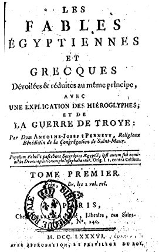
FIGURE I
(frontispice des Fables de Dom Pernety)La vie et la conservation des individus consiste dans l'union étroite de la forme et de la matière. Le noeud, le lien qui forme cette union consiste dans celle du feu inné avec l'humide radical. Cet humide est la portion la plus pure, la plus digérée de la nature, et comme une huile extrêmement rectifiée par les alambics de la Nature. Les semences des choses contiennent beaucoup de cet humide radical, dans lequel une étincelle de feu céleste se bourrit, et mis dans une matrice convenable, il opère, quand il est aidé constamment tout ce qui est nécessaire à la génération. On trouve quelque chose d'immortel dans cet humide radical ; la mort des mixtes ne le fait évanouir ni disparaître. Il résiste même au feu le plus violent, puisqu'on le trouve encore dans les cendres des cadavres brûlés. Chaque mixte contient deux humides, celui dont nous venons de parler, et un humide élémentaire, en partie aqueux, aérien en partie. Celui-ci cède à la violence du feu ; il s'envole en fumée, en vapeurs, et lorsqu'il est tout à fait évaporé, le corps n'est plus que cendres, ou parties séparées les unes des autres. Il n'en est pas ainsi de l'humide radical ; comme il constitue la base des mixtes, il affronte la tyrannie du feu, il souffre le martyre avec un courage insurmontable, et demeure attaché opiniâtrement aux cendres du mixte ; ce qui indique manifestement sa grande pureté. L'expérience a montré aux Verriers, gens communément très ignorants dans la connaissance de la Nature, que cet humide est caché dans les cendres. Ils ont trouvé à force de feu le secret de le manifester autant que l'art et la violence du feu artificiel en sont capables. Pour faire le verre, il faut nécessairement mettre les cendres en fusion, et il ne saurait y avoir de fusion, où il n'y a pas d'humide [reportez-vous au chap. sur le verre, section Mercure]. Sans savoir que les sels [section borith et neter] extraits des cendres contiennent la plus grande vertu des mixtes, les laboureurs brûlent les chaumes et les herbes pour augmenter la fertilité de leurs champs : preuve que cet humide radical est inaccessible aux atteintes du feu ; qu'il est le principe de la génération, la base des mixtes, et que sa vertu, son feu actif ne demeurent engourdis que jusqu'à ce que la terre, matrice commune des principes, en développe les facultés, ce qui se voit journellement dans les semences. Ce baume radical est le ferment de la Nature, qui se répand dans toute la masse des individus. C'est une teinture ineffaçable, qui a la propriété de multiplier, et qui pénètre meême jusques dans les plus sales excréments, puisqu'on les emploie avec succès pour fumer les terres, et augmenter leur fertilité. On peut conjecturer avec raison, que cette base, cette racine des mixtes, qui survit à leur destruction, est une partie de la première matière, la portion la plus pure, et indestructible, marquée au coin de la lumière dont elle reçut la forme. Car le mariage de cette première matière avec sa forme est indissoluble, et tous les éléments corporifiés en individus tirent d'elle leur origine. Ne fallait-il pas en effet une telle matière pour servir de base incorruptible, et comme de racine cubique aux mixtes corruptibles, pour pouvoir en être un principe constant, perpétuel, et néanmoins matériel, autour duquel tourneraient sans cesse les vissicitudes et les changements que les êtres matériels éprouvent tous les jours ? S'il était permis de porter ses conjectures dans l'obscurité de l'avenir, ne pourrait-on pas dire que cette substance inaltérable est le fondement du monde matériel, et le ferment de son immortalité, au moyen duquel il subsistera même après sa destruction, après avoir passé par la tyrannie du feu, et avoir été purgé de sa tache originelle, pour être renouvelé et devenir incorruptible et inaltérable pendant toute l'éternité ? Il semble que la lumière n'a encore opéré que sur lui, et qu'elle a laissé le reste dans les ténèbres ; aussi en conserve-t-il toujours une étincelle, qui n'a besoin que d'être excitée.Ce texte, paraissant si ancien, si désuet, n'en est pas moins d'abord attachant par la poésie qui s'en dégage, puis par les analogies qu'on peut y trouver ; il est fait clairement allusion à la chaux : on en répand effectivement sur les champs pour les amender. Les alambics de Nature, nous en avons parlé dans la section du Mercure de Nature où est évoquée la question de la genèse des Pierres. On trouve aussi de curieuses réflexions sur la nature des mixtes et sur l'insécabilité de certaines liaisons à la base de cet humide radical métallique. Veuillez noter que, à l'instar des Mystères, nous avons commenté et analysé de nombreux passages des Fables Egyptiennes et Grecques dans d'autres sections. Hélas, nous ne disposons actuellement que du tome Ier des F.E.G. ;le tome II est pour le moment inaccessible. On peut néanmoins avoir une idée de son contenu en consultant le Dictionnaire Mytho-hermétique, qui est disponible sur deux sites : la Librairie du Merveilleux [format html] et Hermétisme et alchimie [format Acrobat]. Nous en profitons pour remercier les deux « webmaistres » de ces sites pour la qualité de leur travail et pour les documents qu'ils mettent à la disposition des chercheurs.
Mais le feu inné est bien différent de l'humide. Il tient de la spiritualité de la lumière, et l'humide radical est d'une nature moyenne entre la matière extrêmement subtile et spirituelle de la lumière, et la matière grossière, élémentaire, corporelle. Il participe des deux, et lie ces deux extrêmes. C'est le sceau du traité visible et palpable de la lumière et des ténèbres ; le point de réunion et de commerce entre le Ciel et la Terre.
On ne eput donc confondre sans erreur cet humide radical avec le feu inné. Celui-ci est l'habitant, celui-là l'habitation, la demeure. Il est dans tous les mixtes le laboratoire de Vulcain ; le foyer où se conserve ce feu immortel, premier moteur créé de toutes les facultés de sindividus ; le baume universel, l'élixir le plus précieux de la Nature, le mercure de vie parfaitement sublimé et travaillé, que la Nature distribue par poids et par mesure à tous les mixtes. Qui saura extraire ce trésor du coeur, et du centre caché des productions de ce bas monde, le dépouiller de l'écorce épaisse, élémentaire, qui le cache à nos yeux, et le tirer de la prison ténébreuse où il est renfermé, et dans l'inaction, pourra se glorifier de savoir faire la plus précieuse médecine pour soulager le corps humain.Parler de l'humide radical, c'est parler de l'Esprit universel compris au temps des anciens chimistes, c'est-à-dire évoquer des agents capables de provoquer des oxydations.
Pour les effets obtenus par la chaleur sur les métaux, si la chaleur d'oxydation est considérable et que le métal soit peu volatil, l'oxyde pourra être porté à l'incandescence ; tel est le cas de l'aluminium, du fer, etc. Si la chaleur d'oxydation est petite, le phénomène ne sera pas accompagné d'une émission de lumière, c'est ce que l'on constate avec le plomb, l'étain, le cuivre, le mercure. Quelques métaux comme l'or, l'argent, le platine semblent inaltérables par l'oxygène à toute température.Cependant, l'argent, qui ne s'oxyde pas à froid, si l'on élève la température pour favoriser la réaction, peut dans certaines circonstances s'oxyder. Ainsi, si l'on opère avec de l'oxygène sous une pression qui dépasse la tension de dissociation de l'oxyde d'argent à la température de l'expérience. Cette expérience a été menée par M. Le Châtelier : il a constaté les choses suivantes en enfermant dans un tube de verre de l'argent précipité et du permanganate de potasse destiné à fournir de l'oxygène ; en chauffant à 200°C, le permanganate donne d el'oxygène sous une pression de 15 atmosphères, supérieure à la tension de dissociation de l'oxyde dans ces conditions, et l'oxydation de l'argent est très nette : elle se reconnait à la couleur noire de l'oxyde et augmente pendant plusieurs jours sans devenir complète, l'oxyde produit à la surface du métal le recouvrant d'un enduit protecteur. De son côté, M. Berthelot a chauffé de l'argent battu, dans un tube scellé rempli d'oxygène à la pression ordinaire, à des températures comprisesentre 500° et 550°C pendant des périodes de 2 à 23 heures ; le métal perd son brillant par places, devient mat, se désagrège en partie et se convertit en poussière blanc-jaunâtre, formant des masses d'aspect lanugileux
[qu'on se rappelle les cheveux au vent de la nymphe de l'un des caissons du château du Plessis-Bourré, ou encore les duvets des jambes des deux gnomes de la cheminée alchimique du château de Fontenay-Le-Comte].
En opérant avec de l'air, soit en tube scellé, soit en tube ouvert, il y a eu également absorption très faible d'oxygène entre 500° et 550°C avec formation d'argent désagrégé, de filaments, de poussières lanugileuses et d'oxyde argenteux. Avec de l'oxygène humide, la désagrégation de l'argent est plus notable, l'absorption de l'oxygène plus considérable ; mais en même temps l'altération du verre intervient au contact de l'argent et il se forme une couche jaune, probablement du silicate, qui demeure adhérente au verre et y fait coller le métal. Dans les mêmes conditions, celui-ci n'éprouve dans l'azote ou dans l'acide carbonique secs aucune espèce de modification ou d'altération.
Il résulte de ces expériences que l'oxygène et l'argent commencent à se combiner vers 200°C d'une façon presque insensible ; la combinaison, d'abord très lente dans l'air atmosphérique ou dans l'oxygène pur, s'effectue de plus en plus rapidement à mesure que la chaleur s'élève vers 500-550°C et les quantités d'oxyde formées en un temps donné sont d'autant plus grandes que la température à laquelle on a opéré a été plus haute. En même temps que la combinaison a lieu, une portion de l'argent, beaucoup plus grande que celle qui demeure combinée à l'oxygène, se désagrège.
Pour les Mixtes, il nous faut évoquer une autre figure qui a permis de réaliser un pas de géant à la chimie : Antoine-Laurent de Lavoisier ; voyons ce qu'il nous en dit dans son Traité élémentaire de Chimie [Cuchet, 1789] :
On l'a bien compris : la recherche de l'humide radical métallique est axée sur la préparation et le traitement de ce que les anciens chimistes appelaient les « chaux métalliques ». En chimie moderne, on parle d'oxydes et les oxydes ont, sur les métaux, la propriété d'augmenter de masse par apport d'oxygène ; n'oublions pas que les rapports de transmutations métalliques mettent l'accent sur ce gain de masse, a priori incompréhensible...Tout s'éclaire si l'on sait lire entre les lignes ; les rapports de transmutations sont certainement des enseignements cryptés sur la véritable nature de la Pierre au rouge. Ce n'est point sans raison logique que le Cosmopolite recherche des cristaux de lapis-lazuli dans son parcours des villes allemandes ; ce n'est point un hasard si les traités d'alchimie parlent, à peu près tous et à mots couverts des pierres précieuses en citant expressément le rubis ; l'Art sacré, d'ailleurs, se confondait au départ avec celui de préparer le cristal et les verres colorés. Nous avons eu l'occasion de développer tout cela dans d'autres sections. Que reste-il à dire ? Et bien, nous n'avons pas encore abordé complètement le problème des couleurs citées par tant d'adeptes qui ont traité de la voie humide ; cette voie humide, nous l'avons abordée dans certaine sections, notamment lorsque nous avons évoqué le Mercure philosophique et lorsque nous avons analysé les possibilités « de nature » d'existence de ce Mercure, le serviteur fugitif de l'oeuvre. Mais la voie humide a un caractère d'abstraction nettement plus prononcé que la voie sèche, voie brutale certes mais voie simple. La voie humide garde pratiquement tous ses secrets et lorsque les alchimistes évoquent les couleurs qui se succèdent [voir en particulier la section des textes divers], notre perplexité et notre confusion augmentent à chaque lecture ; qu'entendaient donc les Adeptes en citant toutes ces couleurs qui se succèdent ? Voulaient-ils voiler des degrés précis de température ? Voyaient-ils réellement les couleurs ou bien, comme l'odeur de sépulcre de la première matière qui n'est sentie que par l'intellect et dont parle le pseudo-Flamel, s'agissait-il là aussi de couleurs pour ainsi dire spirituelles qui n'étaient perçues que par le truchement de la pensée raisonnable ? Evoquer les couleurs, en alchimie, c'est aussi évoquer les planètes qui constituent -on l'a dit maintes fois dans les sections- les hiéroglyphes spirituels qui voilent les matières chimiques. Or, chaque planète a une couleur particulière. Nous nous proposons donc ici de revisiter les planètes, leur symbolisme et les rapports que nous pourrons dégager entre les astres et le Grand oeuvre. Mais d'abord, tout comme nous l'avons fait pour la section du Mercure de nature, envisageant la face tellurique de l'Oeuvre, avant d'envisager son côté astral [ou ésotérique, mais d'un ésotérisme de bon aloi jugé uniquement sous l'optique du truchement de correspondances entre des signes célestes, des métaux et des couleurs], nous souhaitons mettre le lecteur en garde contre la manière que nous aurons parfois de nous exprimer ; qu'il ne nous juge donc point par la lettre, qui pourrait lui paraître de prime abord aussi folle que Fulcanelli estimait le Mercure « le fou de l'oeuvre » mais qu'il considère plutôt l'esprit et, nous l'espérons, la richesse poétique révélée par des associations qui pourraient sembler, de prime abord, farfelues, insensées, futiles ou désaxées.
FIGURE II
(frontispice du Traité de Lavoisier)
a)- De la formation des Sels neutres, & des différentes bases qui entrent dans leur composition.
Nous avons vu comment un petit nombre de substances simples, ou au moins qui n'ont point été décomposées jusqu'ici, telles que l'azote, le soufre, le phosphore, le carbone, le radical muriatique & l'hydrogène, formaient en se combinant avec l'oxygène tous les oxides & les acides du règne végétal & du règne animal : nous avons admiré avec quelle simplicité de moyens la nature multipliait les propriétés & les formes, soit en combinant ensemble jusqu'à trois & quatre bases acidifiables dans différentes proportions, soit en changeant la dote d'oxygène destiné à les acidifier. Nous ne la trouverons ni moins variée, ni moins simple, ni surtout moins féconde dans l'ordre de choses que nous allons parcourir.
Les substances acidifiables en se combinant avec l'oxygène, & en se convertissant en acides, acquièrent une grande tendance à la combinaison ; elles deviennent susceptibles de s'unir avec des substances terreuses & métalliques, & c'est de cette réunion que résultent les sels neutres. Les acides peuvent donc être regardés comme de véritables principes salifiants, & les substances auxquelles ils s'unissent pour former des sels neutres, comme des bases salifiables : c'est précisément de la combinaison des principes salifiants avec les bases salifiables dont nous allons nous occuper dans cet article.
Cette manière d'envisager les acides ne me permet pas de les regarder comme des sels, quoiqu'ils aient quelques-unes de leurs propriétés principales, telles que la solubilité dans l'eau, etc. Les acides, comme je l'ai déjà fait observer, résultent d'un premier ordre de conibinaisons ; ils sont formés de la réunion de deux principes simples, ou du moins qui se comportent à la manière des principes simples, & ils sont par conséquent pour me servir de l'expression de Stahl, dans l'ordre des mixtes.
Les sels neutres, au contraire, sont d'un autre ordre de combinaisons, ils sont formés de la réunion de deux mixtes, & ils rentrent dans la classe des composés. Je ne rangerai pas non plus, par la même cause, les alkalis (a) ni les substances terreuses, telles que la chaux, la magnésie, etc. dans la classe des sels, & je ne désignerai par ce nom que des composés formés de la réunion d'une substance simple oxygénée avec une base quelconque.Je me suis suffisamment étendu dans les chapitres précédents sur la formation des acides ; je n'ajouterai rien à cet égard ; mais je n'ai rien dit encore des bases qui sont susceptibles de se combiner avec eux pour former des sels neutres ; ces bases que je nomme salifiables, sont:
la potasse ; la soude ; l'ammoniaque ; la chaux ; la magnésie ; la baryte [1, 2, 3, 4, 5,]; L'alumine.
Et toutes les substances métalliques. Je vais dire un mot de l'origine & de la nature de chacune de ces bases en particulier.

FIGURE III
(Antoine-Laurent de Lavoisier)Nous avons déja fait observer que lorsqu'on échauffait une substance végétale dans un appareil distillatoire, les principes qui la composent, l'oxygène, l'hydrogène & le carbone, & qui formoient une combinaison triple dans un état d'équilibre, se réunissaient deux à deux en obéissant aux
affinités qui doivent avoir lieu Avant le degré de température. Ainsi à la première impression du feu, & dès que la chaleur excède celle de l'eau bouillante, l'oxygène & l'hydrogène se réunissent pour former de l'eau. Bientôt après une portion de carbone et une d'hydrogène se combinent pour former de l'huile. Lorsqu'ensuite par le progrès de la distillation on est parvenu à une chaleur rouge, l'huile & l'eau même qui s'étaient formées se décomposent ; l'oxygène & le carbone forment l'acide carbonique, une grande quantité de gaz hydrogène devenu libre se dégage & s'échappe ; enfin il ne reste plus que du charbon dans la cornue.La plus grande partie de ces phénomènes se retrouvent dans la combustion des végétaux à l'air libre : mais alors la présence de l'air introduit dans l'opération trois ingrédiens nouveaux, dont deux au moins apportent des changements considérables dans les résultats de l'opération. Ces ingrédiens sont l'oxygène de l'air, l'azote & le calorique. A mesure que l'hydrogène du végétal ou celui qui résulte de la décomposition de l'eau est chassé par le progrès du feu sous la forme de gaz hydrogène, il s'allume au moment où il a le contact de l'air, il reforme de l'eau, & le calorique des deux gaz qui devient libre, au moins pour la plus grande partie, produit la flamme.
Lorfqu'ensuite tout le gaz hydrogène a été chassé, brûlé & réduit en eau, le charbon qui relie brûle à son tour, mais sans flamme ; il forme de l'acide carbonique qui s'échappe, emportant avec lui une portion de calorique qui le constitue dans l'état de gaz : le surplus du calorique devient libre, s'échappe & produit la chaleur & la lumière qu'on observe dans la combustion du charbon. Tout le végétal se trouve ainsi réduit en eau & en acide carbonique ; il ne reste qu'une petite portion d'une matière terreuse grise, connue sous le nom de cendre , & qui contient les seuls principes vraiment fixes qui entrent dans la constitution des végétaux.
Cette terre ou cendre dont le poids n'excède pas communément le vingtième de celui du végétal, contient une substance d'un genre particulier, connue sous le nom d'alcali fixe végétal ou de potasse.
Pour l'obtenir on passe de l'eau fur les cendres ; l'eau se charge de la potasse qui est dissoluble, & elle laisse les cendres qui font insolubles : en évaporant ensuite l'eau, on obtient la potasse qui est fixe, même à un très grand degré de chaleur, & qui reste sous forme blanche & concrète. Mon objet n'est point de décrire ici l'art de préparer la potasse, encore moins les moyens de l'obtenir pure : je n'entre même ici dans ces détails que pour obéir à la loi que je me suis faite de n'admettre aucun mot qui n'ait été défini.
La potasse qu'on obtient par ce procédé est toujours plus ou moins saturée d'acide carbonique, et la raison en est facile à saisir : comme la potasse ne se forme, ou au moins n'est rendue libre qu'à mesure que le charbon du végétal est converti en acide carbonique par l'addition de l'oxygène, l'oxygène, soit de l'air, soit de l'eau , il en résulte que chaque molécule de potasse se trouve au moment de sa formation en contact avec une molécule d'acide carbonique , & comme il y a beaucoup d'affinité entre ces deux substances, il doit y avoir combinaison. Quoique l'acide carbonique soit celui de tous les acides qui tient le moins à la potasse, il est cependant difficile d'en séparer les dernières portions. Le moyen le plus habituellement employé consiste à dissoudre la potasse dans de l'eau, à y ajouter deux ou trois fois son poids de chaux vive, à filtrer & à évaporer dans des vaisseaux fermés ; la substance jaune qu'on obtient est de la potasse presque entièrement dépouillée d'acide carbonique.
Dans cet état, elle est non seulement dissoluble dans l'eau, au moins à partie égale; mais elle attire encore celle de l'air avec une étonnante avidité : elle fournit en conséquence un moyen de sécher l'air ou les gaz auxquels elle est exposée. Elle est également soluble dans l'esprit-de-vin ou alcool, à la différence de celle qui est saturée d'acide carbonique, qui n'est pas soluble dans ce dissolvant. Cette circonstance a fourni à M. Berthollet un moyen d'avoir de la potasse parfaitement pure. Il n'y a point de végétaux qui ne donnent plus ou moins de potasse par incinération ; mais on ne l'obtient pas également pure de tous, elle est ordinairement mêlée avec différents sels qu'il est aisé d'en séparer.
On ne peut guère douter que les cendres, autrement dit la terre que laissent les végétaux lorsqu'on les brûle , ne préexistât dans ces végétaux antérieurement à la combustion ; cette terre forme, à ce qu'il paraît, la partie osseuse , la carcasse du végétal. Mais il n'en est pas de même de la potasse ; on n'est encore parvenu à séparer cette substance des végétaux, qu'en employant des procédés ou des intermèdes qui peuvent fournir de l'oxygène & de l'azote , tels que la combustion ou la combinaison avec l'acide nitrique ; en sorte qu'il n'est point démontré que cette substance ne soit pas un produit de ces opérations. J'ai commencé une fuite d'expériences sur cet objet, dont je serai bientôt en état de rendre compte.
La soude est, comme la potasse, un alcali qui se tire de la lixiviation des cendres des plantes, mais de celles seulement qui croissent aux bords de la mer, & principalement du kali, d'où est venu le nom d'alcali qui lui a été
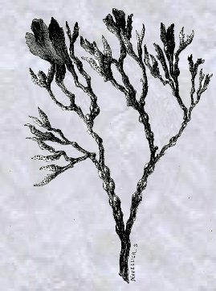
FIGURE IV
(salicornia)donné par les Arabes : elle a quelques propriétés communes avec la potasse , mais elle en a d'autres qui l'en distinguent. En général ces deux substances portent chacune dans toutes les combinaifons salines des caractères qui leur sont propres. La soude , telle qu'on l'obtient de la lixiviation des plantes marines, est plus souvent entièrement saturée d'acide carbonique ; mais elle n'attire pas, comme la potasse , l'humidité de l'air ; au contraire elle s'y dessèche ; les cristaux s'effleurissent & se convertissent en une poussière blanche qui a toutes les propriétes de la soude , & qui n'en diffère que parce qu'elle a perdu son eau de cristallisation.
On ne connoît pas mieux jusqu'ici les principes constituants de la soude que ceux de la potasse, & on n'est pas même certain si cette substance est toute formée dans les végétaux, antérieurement à la combustion. L'analogie pourrait porter à croire que l'azote est un des principes constituant des alkalis en général, & on en a la preuve à l'égard de l'ammoniaque, comme je vais l'exposer : mais on n'a, relativement à la potasse & à la soude que de légères présomptions qu'aucune expérience décisive n'a encore confirmées.
d)- De l'ammoniaque.
Comme nous n'avions aucune connaissance précise à présenter sur la composition de la soude & de la potasse, nous avons été obligés de nous borner dans les deux paragraphes précédents à indiquer les substances dont on les retire, & les moyens qu'on emploie pour les obtenir. Il n'en est pas de même de l'ammoniaque, que les Anciens ont nommée alcali volatil. M. Berthollet , dans un Mémoire imprimé dans le recueil de l'Académie, année 1784, page 316, est parvenu à prouver par voie de décomposition que 1000 parties de cette substance en poids étoient composées d'environ 807 d'azote & de 193 d'hydrogène.
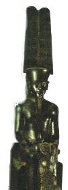
FIGURE V
(Amon, figure tutélaire)C'est principalement par la distillation des matières animales qu'on obtient cette substance ; l'azote qui est un de leurs principes constituants, s'unit à la proportion d'hydrogène propre à cette combinaison , et il se forme de l'ammoniaque : mais on ne l'obtient point pure dans cette opération ; elle est mêlée avec de l'eau, de l'huile, & en grande partie saturée d'acide carbonique. Pour la séparer de toutes ces substances, on la combine d'abord avec un acide tel , par exemple , que l'acide muriatique ; on l'en dégage ensuite, soit par une addition de chaux, soit par une addition de potasse. Lorsque l'ammoniaque a été ainsi amenée à son plus grand degré de pureté , elle ne peut plus exister que fous forme gazeuse , à la température ordinaire dans laquelle nous vivons ; elle a une odeur excessivement pénétrante. L'eau en absorbe une très grande quantité, surtout si elle est froide & si on ajoute la pression au refroidissement ; ainsi saturée d'ammoniaque, elle a été appelée alcali volatil fluor : nous l'appellerons simplement ammoniaque ou ammoniaque en liqueur, & nous désignerons la même substance , quand elle sera dans l'état aériforme, par le nom de gaz ammoniaque.
e)- De la Chaux , de la Magnésie, de la Baryte & de l'Alumine.
La composition de ces quatre terres est absolument inconnue; & comme on n'est point encore parvenu à déterminer quelles sont leurs parties constituantes & élémentaires, nous sommes autorisés, en attendant de nouvelles découvertes , à les regarder comme des êtres simples : l'art n'a donc aucune part à la formation de ces terres, la nature nous les présente toutes formées. Mais comme elles ont la plupart, surtout les trois premières, une grande tendance à la combinaison, on ne les trouve jamais seules. La chaux est presque toujours saturée d'acide carbonique, & dans cet état elle forme la craie, les spaths calcaires, une partie des marbres ; etc. Quelquefois elle est saturée d'acide sulfurique, comme dans le gypse, les pierres à plâtre ; d'autres fois avec l'acide fluorique, & elle forme le spath fluor ou vitreux. Enfin les eaux de la mer & des fontaines salées en contiennent de combinée avec l'acide muriatique. C'est de toutes les bases salifiables celle qui est la plus abondamment répandue dans la nature. On rencontre la magnésie dans un grand nombre d'eaux minérales ; elle y est le plus communément combinée avec l'acide sulfurique ; on la trouve aussi très abondamment dans l'eau de la mer où elle est combinée avec l'acide muriatique ; enfin elle entre dans la cornposition d'un grand nombre de pierres.
La baryte est beaucoup moins abondante que les deux terres précédentes; on la trouve dans le règne minéral combinée avec l'acide sulfurique, & elle forme alors le spath pesant ; quelquefois, mais plus rarement, elle est combinée avec l'acide carbonique.
L'alumine ou base de l'alun a moins de tendance à la combinaison que les précédentes ; aussi la trouve-t-on souvent dans l'état d'alumine , sans être combinée avec aucun acide. C'est principalement dans les argiles qu'on la rencontre ; elle en fait, à proprement parler, la base.
f)- Des Substances métalliques.
Les métaux, à l'exception de l'or & quelquefois de l'argent, se présentent rarement dans le règne minéral sous leur forme métallique ; ils sont communément ou plus ou moins saturés d'oxygène, ou combinés avec du soufre , de l'arsenic, de l'acide sulfurique, de l'acide muriatique,de l'acide carbonique, de l'acide phosphorique. La docimasie & la métallurgie enseignent à les séparer de toutes ces substances étrangères, & nous renvoyons aux ouvrages qui traitent de cette partie de la Chimie.
Il est probable que nous ne connaissons qu'une partie des substances métalliques qui existent dans la nature ; toutes celles, par exemple, qui ont plus d'affinité avec l'oxygène qu'avec le carbone, ne font pas susceptibles d'être réduites ou ramenées à l'état métallique, & elles ne doivent se présenter à nos yeux que fous la forme d'oxydes qui se confondent pour nous avec les terres. Il est très probable que la baryte que nous venons de ranger dans la classe des terres, est dans ce cas ; elle présente dans le détail des expériences des caractères qui la rapprochent beaucoup des substances métalliques. II serait possible à la rigueur que toutes les substances auxquelles nous donnons le nom de terres ne fussent que des oxydes métalliques, irréductibles par les moyens que nous employons.
g)- Sur la formation des Sels neutres. [suite]
Telles sont les bases salifiables, c'est- à-dire, susceptibles de se combiner avec les acides, & de former des sels neutres. Mais il faut observer que les alcalis & les terres entrent purement & simplement dans la composition des sels neutres, sans aucun intermède qui serve à les unir; tandis qu'au contraire les métaux ne peuvent se combiner avec les acides, qu'autant qu'ils ont été préalablement plus ou moins oxygénés. On peut donc rigoureusement dire que les métaux ne sont point dissolubles dans les acides , mais seulement les oxydes métalliques. Ainsi lorsqu'on met une substance métallique dans un acide, la première condition pour qu'elle puisse s'y dissoudre, est qu'elle puisse s'y oxyder , & elle ne le peut qu'en enlevant de l'oxygène, ou à l'acide, ou à l'eau, dont cet acide est étendu ; c'est-à dire, en d'autres termes qu'une substance métallique ne peut se dissoudre dans un acide, qu'autant que l'oxygène qui entre , soit dans la composition de l'eau, soit dans celle de l'acide, a plus d'affinité avec le métal, qu'il n'en a avec l'hydrogène ou la base acidifiable; ou, ce qui revient encore au même, qu'il n'y a de dissolution métallique, qu'autant qu'il y a décomposition de l'eau ou de l'acide.
C'est de cette observation simple qui a échappé même à l'illustre Bergman, que dépend l'explication des principaux phénomènes des dissolutions métalliques. Le premier de tous & le plus frappant est l'effervescence, ou, pour parler d'une manière moins équivoque, le dégagement de gaz qui a lieu pendant la dissolution. Ce gaz dans les dissolutions par l'acide nitrique est du gaz nitreux ; dans les dissolutions par l'acide sulfurique, il est ou du gaz acide sulfureux, ou du gaz hydrogène, suivant que c'est aux dépens de l'acide sulfurique ou de l'eau que le métal s'est oxydé.
Il est sensible que l'acide nitrique & l'eau étant composés l'un & l'autre de substances qui séparément ne peuvent exister que dans l'état de gaz, du moins à la température dans laquelle nous vivons, aussitôt quon leur enlève l'oxygène, le principe qui lui étoit uni doit entrer sur le champ en expansion, il doit prendre la forme gazeufe, & c'est ce passage rapide de l'état liquide à l'état gazeux qui constitue l'effervescence. Il en est de même de l'acide sulfurique ; les métaux, en général, surtout par la voie humide n'enlèvent point à cet acide la totalité de l'oxygène ; ils ne le réduisent point en soufre,
mais en acide sulfureux qui ne peut également exister que dans l'état de gaz au degré de température & de pression dans lequel nous vivons. Cet acide doit donc se dégager fous la forme de gaz, & c'est encore à ce dégagement qu'est due l'effervescence.Un second phénomène est que toutes les substances métalliques se dissolvent sans effervescence dans les acides quand elles ont été oxydées avant la dissolution : il est clair qu'alors le métal n'ayant plus à s'oxider, il ne tend plus à décomposer ni l'acide ni l'eau ; il ne doit donc plus y avoir d'effervescence, puisque l'effet qui le produisait n'a plus lieu.
Un troisième phénomène est que tous les métaux se dissolvent sans effervescence dans l'acide muriatique oxygéné : ce qui se passe clans cette opération mérite quelques réflexions particulières. Le métal dans ce cas enlève à l'acide muriatique oxygéné son excès d'oxygène; il se forme d'une part un oxyde métallique, & de l'autre de l'acide muriatique ordinaire. S'il n'y a pas d'effervescence dans ces sortes de dissolutions, ce n'est pas qu'il ne foit de l'essence de l'acide muriatique d'exiger sous la forme de gaz au degré de température dans lequel nous vivons, mais ce gaz trouve dans l'acide muriatique oxygéné plus d'eau qu'il n'en faut pour être retenu & pour demeurer sous forme liquide ; il ne se dégage donc pas comme l'acide sulfureux, & après s'être combiné avec l'eau dans le premier instant, il se combine paisiblement ensuite avec l'oxyde métallique qu'il dissout.
Un quatrième phénomène est que les métaux qui ont peu d'affinité pour l'oxygène, & qui n'exercent pas sur ce principe une action assez forte pour décomposer, foit l'acide, soit l'eau, sont absolument indissolubles : c'est par cette raison que l'argent, le mercure, le plomb, ne sont pas dissolubles dans l'acide muriatique , lorsqu'on les présente à cet acide dans leur état métallique ; mais si on les oxyde auparavant , de quelque maniëre que ce soit, ils deviennent aussitôt très dissolubles, & la dissolution se fait sans effervescence.
L'oxygène est donc le moyen d'union entre les métaux & les acides; & cette circonstance qui a lieu pour tous les métaux comme pour tous les acides, pourrait porter à croire que toutes les substances qui ont une grande affinité avec les acides contiennent de l'oxygène.
h)- Observations sur les acides nitreux & nitrique.
L'acide nitreux & l'acide nitrique se tirent d'un sel connu dans les arts sous le nom de salpêtre. On extrait ce sel par lixiviation des décombres des vieux bâtiments & de la terre des caves, des écuries , des granges , & en général des lieux habités. L'acide nitrique est le plus souvent uni dans ces terres à la chaux & à la magnésie, quelquefois à la potasse & plus rarement à l'alumine. Comme tous ces sels , à l'exception de celui à base de potasse, attirent l'humidité de l'air , & qu'ils seraient d'une conservation difficile dans les arts, on profite de la plus grande affinité qu'a la potasse avec l'acide nitrique , & de la propriété qu'elle a de précipiter la chaux , la magnésie & l'alumine, pour ramener ainsi dans le travail du salpêtrier & dans le raffinage qui se fait ensuite dans les magasins du Roi , tous les sels nitriques à l'état de nitrate de potasse ou de salpêtre. Pour obtenir l'acide nitreux de ce sel , on met dans une cornue tubulée trois parties de salpêtre très pur, & une d'acide sulfurique concentré : on y adapte un ballon à deux pointes, auquel on joint l'appareil de Woulfe, c'est-à-dire, de flacons à plusieurs gouleaux à moitié remplis d'eau & réunis .par des tubes de verre. On voit cet appareil représenté ci-dessous. On lutte exactement toutes les
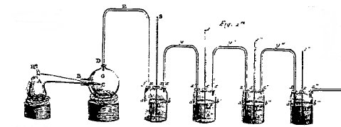
FIGURE VI
(appareil de Woulfe : les vases communiquants d'André Breton)jointures, & on donne un feu gradué: il passe de l'acide nitreux en vapeurs rouges, c'est-à-dire, surchargé de gaz nitreux, ou autrement dit, qui n'est point oxygéné autant qu'il le peut être. Une partie de cet acide se condense dans le ballon, dans l'état d'une liqueur d'un jaune rouge très-foncé; le surplus se combine avec l'eau des bouteilles. II se dégage en même temps une grande quantité de gaz oxygène, par la raison qu'à une température un peu élevée l'oxygène a plus d`affinité avec le caIorique qu'avec l'oxyde nitreux, tandis que le contraire arrive à la température habituelle dans laquelle nous vivons.
C'est parce qu'une partie d'oxygène a quitté ainsi l'acide nitrique, qu'il se trouve converti en acide nitreux. On peut ramener cet acide de l'état nitreux à l'état nitrique, en le faisant chauffer à une chaleur douce ; le gaz nitreux qui était en excès s'échappe, et il reste de l'acide nitrique : mais on n'obtient par cette voie qu'un acide nitrique très étendu d'eau, & il y a d'ailleurs une
perte considérable.Ou se procure de l'acide nitrique beaucoup plus concentré & avec infiniment moins de perte , en mêlant enfemble du salpêtre & de l'argile bien sèche, & en les poussant au feu dans une cornue de grès. L'argile se combine avec la potasse pour laquelle elle a beaucoup d'affinité : en même temps il passe de l'acide nitrique très légèrement fumant, & qui ne contient qu'une très petite portion de gaz nitreux. On l'en débarrasse aisément, en faisant chauffer faiblement l'acide dans une cornue : on obtient une petite portion d'acide nitreux dans lé récipient, & il reste de l'acide nitrique dans la cornue.
On a vu dans le corps de cet Ouvrage, que l'azote était le radical nitrique : si à vingt parties & demie en poids d'azote, on ajoute quarante-trois parties & demie d'oxygène, cette proportion constituera l'oxyde ou le gaz nitreux ; si on ajoute à cette première combinaison 36 autres parties d'oxygène, on aura de l'acide nitrique. L'intermédiaire entre la première & la dernière de ces proportions, donne différentes espèces d'acides nitreux c'est-à-dire , de l'acide nitrique plus ou moins imprégné de gaz nitreux. J'ai déterminé ces proportions par voie de décomposition, & je ne puis pas assurer qu'elles soient rigoureusement exactes ; mais elles ne peuvent pas s'écarter beaucoup de la vérité. M. Cavendish, qui a prouvé le premier & par voie de composition, que l'azote est le radical nitrique, a donné des proportions un peu différentes & dans lefquelles l'azote entre pour une plus forte proportion: mais il est probable en même temps que c'est de l'acide nitreux qu'il a formé, & non de l'acide nitrique ; & cette circonstance suffit pour expliquer jusqu'à un certain point la différence des résultats.
Pour obtenir l'acide nitrique très pur, il faut employer du nitre dépouillé de tout mêlange de corps étrangers. Si, après la distillation, on soupçonne qu'il y reste quelques vestiges d'acide sulfurique, on y verse quelques gouttes de dissolution de nitrate barytique, l'acide sulfurique s'unit avec la baryte, & forme un sel neutre insoluble qui se précipite. On en sépare avec autant de facilité les dernières portions d'acide muriatique qui pouvaient y être contenues, en y versant quelques gouttes de nitrate d'argent ; l'acide muriatique contenu dans l'acide nitrique, s'unit à l'argent avec lequel il a plus d'affinité, & se précipite sous forme de muriate d'argent qui est presque insoluble. Ces deux précipitations faites, on distille jusqu'à ce qu'il ait passé environ les sept huitièmes de l'acide, & on est sûr alors de l'avoir parfaitement pur.
L'acide nitrique est un de ceux qui a le plus de tendance à la combinaison, & dont en même temps la décomposition est le plus facile. Il n'est presque point de substance simple, si on en excepte l'or, l'argent & le platine, qui ne lui enlève plus ou moins d'oxygène ; quelques unes même le décomposent en entier. Il a été fort anciennement connu des chimistes , & ses combinaisons ont été plus étudiées que celles d'aucun autre. MM. Macquer & Baumé ont nomrné nitres tous les sels qui ont l'acide nitrique pour acide. Nous avons dérivé leur nom de la même origine; mais nous en avons changé la terminaison, & nous les avons appelés nitrates ou nitrites , suivant qu'ils ont l'acide nitrique ou l'acide nitreux pour acide & d'aprés la loi générale dont nous avons expliqué les motifs, chapitre XVI. C'est également par une suite des principes généraux dont nous avons rendu compte, que nous avons spécifié chaque sel par le nom de sa base.
i)- Observations sur l'Acide sulfurique.
On a longtemps retiré l'acide sulfurique par distillation du sulfate de fer ou vitriol de mars, dans lequel cet acide est uni au fer. Cette distillation a été décrite par Basile Valentin, qui écrivait dans le quinzième siècle. On préfère aujourd'hui de le tirer du soufre par la combustion, parce qu'il est beaucoup meilleur marché que celui qu'on peut extraire des différents sels sulfuriques. Pour faciliter la combustion du soufre & son oxygénation, on y mêle un peu de salpêtre ou nitrate de potasse en poudre. Ce dernier est décomposé , & fournit au soufre une portion de son oxygène , qui facilite sa conversion en acide. Malgré l'addition de salpêtre, on ne peut continuer la combustion du soufre dans des vaisseaux fermés, quelque grands qu'ils soient, que pendant un temps déterminé. La combustion cesse par deux raisons :
1)- parce que le gaz oxygène se trouve épuisé, & que l'air dans lequel se fait la combustion se trouve presque réduit à l'état de gaz azotique ;
2)- parce que l'acide lui-même qui reste longtemps en vapeurs, met obstacle à la combustion.Dans les travaux en grand des arts, on brûle le mélange de soufre & de salpêtre dans de grandes chambres dont les parois sont recouvertes de feuilles de plomb : on laisse un peu d'eau au fond pour faciliter la condensation des vapeurs. On se débarrasse ensuite de cette eau, en introduisant l'acide sulfurique qu'on a obtenu dans de grandes cornues : on distille à un degré de chaleur modéré ; il passe une eau légèrement acide, & il reste dans la cornue de l'acide sulfurique concentré. Dans cet état il est diaphane, sans odeur, & il pèse à peu près le double de l'eau. On prolongerait la combustion du soufre, & on accélérerait la fabrication de l'acide sulfurique, si on introduisait dans les grandes chambres doublées de plomb où se fait cette opération, le vent de plusieurs soufflets qu'on dirigerait fur la flamme. On ferait évacuer le gaz azotique par de longs canaux ou espèces de serpentins dans lesquels il serait en contact avec de l'eau afin de le dépouiller de tout le gaz acide sulfureux ou acide sulfurique qu'il pourrait contenir.
Suivant une première expérience de M. Berthollet, 69 partes de soufre en brûlant absorbent 3 parties d'oxygène pour former 100 parties d'acide sulfurique. Suivant une seconde expérience faite par une autre méthode, 72 parties de soufre en absorbent 28 d'oxygène , pour former la même quantité de 100 parties d'acide sulfurique sec.
Cet acide ne dissout , comme tous les autres, les métaux qu'autant qu'ils ont été préalablement oxydés ; mais la plupart sont susceptibles de décomposer une portion de l'acide, & de lui enlever assez d'oxygène pour devenir dissolubles dans le surplus : c'est ce qui arrive à l'argent, au mercure & même au fer & au zinc, quand on les fait dissoudre dans de l'acide sulfurique concentré & bouillant. Ces métaux s'oxydent & se dissolvent, mais ils n'enlèvent pas assez d'oxygène à l'acide pour le réduire en soufre ; ils le réduifent seulement à l'état d'acide sulfureux : & il se dégage alors fous la forme de gaz acide fulfureux. Lorsqu'on met de l'argent, du mercure ou quelque métal autre que le fer & le zinc dans de l'acide sulfurique étendu d'eau, comme ils n'ont pas assez d'affinité avec l'oxygène pour l'enlever, ni au soufre, ni à l'acide sulfureux, ni à l'hydrogène, ils sont absolument insolubles dans cet acide. II n'en est pas de même du zinc & du fer : ces deux métaux, aidés par la présence de l'acide, décomposent l'eau ; ils s'oxydent à ses dépens, & deviennent alors dissolubles dans l'acide , quoi qu'il ne soit ni concentré ni bouillant.
j)- Observations sur l'acide fluorique
La nature nous offre l'acide fluorique tout formé dans le spath fluor, spath phosphorique ou fluate de chaux : il y est combiné avec la terre calcaire, & forme un sel insoluble.
Pour obtenir l'acide fluorique seul & dégagé de toute combinaison, on met du spath fluor ou fluate de chaux dans une cornue de plomb ; on verse dessus de l'acide sulfurique, & ou adapte à la cornue un récipient également de plomb, à moitié rempli d'eau. On donne une chaleur douce , & l'acide fluorique est absorbé par l'eau du récipient, à mesure qu'il se dégage. Comme cet acide est naturellement formé de gaz au degré de chaleur & de pression dans lequel nous vivons, on peut le recueillir dans cet état dans l'appareil pneumato-chimique au mercure, comme on y reçoit le gaz acide marin, le gaz acide sulfureux , le gaz acide carbonique.On est obligé de se servir pour cette opération de vaisseaux métalliques, parce que l'acide fluorique dissout le verre & la terre siliceuse ; il communique même de la volatilité à ces deux substances, & il les enlève avec lui dans l'état de gaz.
C'est à M. Margraff que nous devons la première connaissance de cet acide ; mais il ne l'a jamais obtenu que combiné avec une quantité considérable de silice ; il ignorait d'ailleurs que ce fût un acide particulier & sui generis. M. le duc de Liancourt, dans un Mémoire imprimé sous le nom de M. Boulanger, a étendu beaucoup plus loin nos connaissances sur les propriétés de l'acide fluorique ; enfin M. Scheele semble avoir mis la dernière main à ce travail.
Il ne reste plus aujourd'hui qu'à déterminer quelle est la nature du radical fluorique ; mais comme il ne paraît pas qu'on soit encore parvenu à décomposer l'acide, on ne peut avoir aucun apperçu de la nature du radical. S'il y avait quelques expériences à tenter à cet égard, ce ne pourrait être que par la voie des doubles affinités qu'on pourroit espérer quelque succès.
k)- Observations sur l'acide boracique.
On donne le nom de boracique à un acide concret qu'on retire du borax, sel qui nous vient de l'Inde par le commerce. Quoique le borax ait été employé très anciennement dans les arts, on n'a que des notions très-incertaines sur son origine, sur la manière de l'extraire & de le purifier. On a lieu de soupçonner que c'est un sel natif, qui se trouve naturellement dans les terres de quelques contrées de l'Inde & dans l'eau des lacs : tout le commerce de ce sel se fait par les Hollandais ; ils ont été longtemps seuls en possession de le purifier; mais MM. l'Eguillier, dans une fabrique qu'ils ont élevée à Paris, sont parvenus à rivaliser avec eux : le procédé de cette purification, au surplus , est encore un mystère. L'analyse chimique nous a appris que le borax était un sel neutre avec excès de base ; que cette base était la soude, & qu'elle était en partie neutralisée par un acide particulier, qui a été longtemps appelé sel sédatif de Homberg, & que nous avons désigné sous le nom d'acide boracique. On le rencontre quelquefois libre dans l'eau des lacs; celle du lac Cherchiaio en Italie en contient 94 grains & demi par pinte.
Pour séparer l'acide boracique & l'obtenir libre , on commence par dissoudre le borax dans l'eau bouillante ; on filtre la liqueur très chaude & on y verse de l'acide sulfurique, ou un autre acide quelconque qui ait plus d'affinité avec la soude que n'en a l'acide boracique. Ce dernier se sépare aussitôt, & on l'obtient fans forme cristalline par refroidissement.
On a cru Iongtemps que l'acide boracique était un produit de l'opération par laquelle on l'obtenait : on se persuadait en conséquence qu'il était différent, suivant l'acide qu'on avait employé pour le séparer d'avec la soude. Aujourd'hui il est bien reconnu que l'acide boracique est toujours identiquement le même, de quelque manière qu'il ait été dégagé, pourvu toutefois qu'il ait été bien dépouillé de tout acide étranger par le lavage, & qu'on l'ait purifié par une ou deux cristallisations successives.Cette planète ne peut être observée que très proche de l'horizon puisqu'elle est la plus proche du soleil
[les hermétistes disent que l'Esprit et l'Âme doivent être conjoints et ramenés à leur Corps ; du moins est-ce l'avis autorisé qu'exprime Lambsprinck dans son De Lapide philosophorum ; l'Esprit a toujours symbolisé le Mercure et l'Âme est le Soufre rouge ou teinture] ;
il apparait donc conforme à la doctrine hermétique que Mercure et le Soleil soient proches l'un de l'autre.
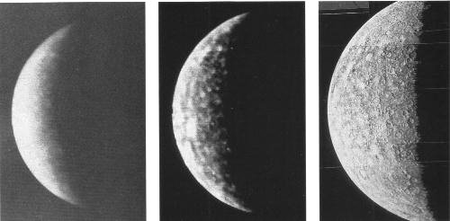
FIGURE VII
(Mercure photographié à 4.3 millions de km ; à 3.5 millions de km : mosaïque de dix-huit images de Mercure prises à 200 000 km ; extrait de l'Encyclopédie Atlas sur l'astronomie)La planète Mercure est donc difficile à apercevoir ; y a-t-il de la brume, quelque vapeur à l'Orient ou à l'Occident ou que Mercure soit éloignée de son aphélie ? Comme son homonyme hermétique, l'astre ne se montrera pas, perdu dans la lueur du soleil et perdu pour l'oeuvre quand la lumière aveugle l'artiste, c'est-à-dire quand il « brûle les fleurs »...Voyons comment Mercure effectue son déplacement apparent : prenons comme origine le moment de la plus grande élongation à l'est du soleil, c'est-à-dire à l'Orient de l'oeuvre. Mercure est alors visible au mieux, le soir, après le coucher de l'astre du jour [Mercure n'apparaît donc que lorsque l'astre radieux disparaît : c'est le début de l'éclipse de Raymond Lulle]. A partir de là, la planète semblera se rapprocher de plus en plus du soleil et se perdra dans son rayonnement [plus rien n'est alors visible : c'est le nigredo de Jung]. Passé ce point, sa course apparente se poursuivant dans le même sens, Mercure s'écartera maintenant du Soleil, précédent alors son lever [la dissolution est totale et rien ne subsiste plus que le Mercure], pour atteindre sa plus grande élongation ouest [l'Occident de l'oeuvre]. Entre ces deux écarts, quarante-quatre jours s'écoulent en moyenne. Or, ce nombre correspond à peu près [quarante jours] à celui que citent nombre d'alchimistes dans cette époque de l'oeuvre. Prenons Flamel [Fig. Hiér.] ; il nous dit :
"La Couleur qu'il te faut avoir doit être entièrement parfaite en noirceur, semblable à celle de ces Dragons, et ce en l'espace de quarante jours." [note 103]
Fulcanelli, dans les DM, II (Le Déluge), p. 340, n'est pas en reste et propose les correspondances suivantes :
"Il est écrit que la pluie diluvienne dure quarante jours et que les eaux recouvrent la terre l'espace de cent cinquante jours, soit cent quatre vingt-dix au total...Le déluge était fini. Il avait duré cent quatre-vingt-dix-sept jours cycliques, ou, à trois années près, deux siècles réels."
Alain de Lille que nous avons évoqué dans la section prima materia oeuvrait dans la solitude des moines de Citeaux. C'est là, dans cette retraite, qu'il pratiqua la science hermétique. Il nous reste de lui un petit écrit sur la pierre philosophale [in Theatr. chim., t. III, 735-759]. De Lille compare la génération des plantes à celle des minéraux [cf. Mercure de nature]. Il appelle solution des philosophes l'amalgame résultant de l'union de l'or ou de l'argent avec le mercure ; il dit qu'on peut s'en procurer de grands avantages :
"Pour cela, il faut d'abord chauffer légèrement la solution des philosophes, puis la renfermer dans un vase bien fermé et cacheté, et enfin, l'exposer pendant quarante jours, à une chaleur modérée, jusqu'à ce qu'il se forme, à la surface, une matière noire qui est la tête de corbeau des philosophes et le mercure des sages."
De façon à peine croyable, ce nombre surgit sous la plume de B. Palissy et c'est avec réserve que nous reproduisons cet extrait du Discours admirable de la Nature des Eaux et Fontaines (Paris, 1580) ; voici ce qu'il écrit :
"Un Geber, un Roman de la rose, et un Raymond Lull et quelques disciples de Paracelse, et plusieurs autres alchimistes, ont laissé des livres à l'étude desquels plusieurs ont perdu leur temps et leurs biens. De tels livres pernicieux m'ont causé gratter la terre l'espace de quarante ans et fouiller les entrailles d'icelle afin de connaître les choses qu'elle produit dans soi." [par Roman de la Rose, Palissy veut sans doute parler de Jean de Meung connu sous le nom de Jehan de la Fontaine ; il a écrit la Fontaine des Amoureux de Science, disponible sur le serveur Gallica de la bnf]
Un auteur du XIXe siècle, connu sous le pseudonyme de Tripied, dont nous donnons le texte ailleurs, cite De Locques dans son Rudiment de Philosophie :
"On met le vitriol à une chaleur fort modérée, où rien ne peut monter que le phlegme , c'est-à-dire qu'il faut avoir soin de ne pas enlever l'eau de constitution, et ce tant qu'il demeure sec comme la pierre d'éponge ; on lui redonne son phlegme, on redistille, et ce par trois fois; à la seconde, il prend la couleur d'une belle émeraude, et à la troisième il devient blanc comme du beurre. On corrompt cette matière au fumier, pendant quarante jours, puis on distille l'esprit doux qui vient par vénules comme l'esprit de vin, puis l'esprit acide qui distille sous forme de fumées blanches, et enfin l'huile rouge par une forte expression de feu, sans laquelle elle ne monte pas."
Cyliani, au début du XIXe siècle, évoque cette durée de quarante jours hermétiques dans son Hermès Dévoilé :
"...je mis la dissolution totale à fermenter dans un pélican pendant quarante jours, au bout desquels il se précipita par l'effet de la chaleur interne de la fermentation une matière noire. C'est alors que je distillai sans feu, le mieux qu'il me fut possible, le liquide précieux qui surnageait la matière contenant son feu intérieur, et le mis dans un vase en verre blanc, bien bouché à l'émeri, dans un lieu humide et froid."
et encore :
"La couleur noire que l'on obtient au bout de quarante ou cinquante jours toutes les fois que l'on a bien administré le feu extérieur est une preuve que l'or vulgaire a été changé en terre noire, que les philosophes appellent leur fumier de cheval."
La durée est ici intermédiaire et se rapproche des deux écarts extrêmes de l'élongation de Mercure, c'est-à-dire, compris avec un grain de cabale, depuis la constitution du Mercure [Orient], en passant par l'ouverture du métal [Soufre rouge ; conjonction ou opposition] jusqu'à la résolution du Mercure [Occident]. Aux élongations extrêmes vont donc correspondre les époques de l'année où Mercure va montrer un croissant ; ce croissant fait partie de ce qu'on appelle les phases : 1er quartier, pleine lune, lune gibbeuse, dernier quartier, etc. D'une façon générale, la phase est une caractéristique propre au Mercure, que nous retrouvons d'abord pour Mercure, puis Vénus et la Lune.
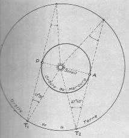
FIGURE VIII
(relations entre les orbites de Mercure et de la Terre ; extrait de l'Astronomie L. Rudaux et G. de Vaucouleurs, Larousse, 1948)En alchimie comme en astrologie, l'univers est un monde clos dont le centre est la Terre [c'est faux bien sûr mais je parle ici pour les poètes et non pas pour les cuistres]. La figure VIII illustre le fait que Mercure ne puisse être visible que dans les lueurs crépusculaires de l'Orient ou de l'Occident qui correspondent respectivement à l'alpha et l'oméga de l'Oeuvre, identifiable à l'AZOTH que Fulcanelli attribue à Senior Zadith mais que nous avons cru pouvoir identifier à Zethos dont le mythe est parallèle au destin du Mercure. Mais si nous identifions sans problème a et w, c'est-à-dire sur la figure VIII les points A [Orient] et P [Occident], on identifie moins les correspondances hermétiques avec la conjonction et l'opposition de Mercure à la Terre. On peut expliquer les choses ainsi : le cycle hermétique commençant au point A [Orient du 3ème oeuvre], le cycle se poursuit d'abord par une opposition : Mercure est opposée à la Terre ce qui se traduit aisément dans un langage simple en disant que la dissolution est totale : c'est la grande éclipse du soleil et de la Lune de Lulle. Puis, nous parvenons au demi-tour au point P. On pourrait croire qu'ici finit l'oeuvre mais nous n'avons accompli qu'un demi-tour ; l'autre demi-tour, compté à partir de l'Occident sera à l'opposé du précédent : à la dissolution va succéder la résolution, c'est-à-dire l'apparition progressive de la Pierre par accretion du Soufre blanc au Soufre rouge : ce demi-cycle est marqué par la conjonction de Mercure et de la Terre. La fin du cycle est marqué par le retour au point A. Cependant, par souci immédiat de simplification, nous n'avons raisonné que comme si la Terre était immobile ; il n'en est évidemment rien et dans l'oeuvre alchimique, la Terre comme le Mercure circulent inlassablement dans leurs révolutions. De multiples perturbations, des inégalités et des complications apparentes ont pour conséquence qu'au moment de la conjonction inférieure [celle-ci coïncidant avec la ligne des noeuds des deux orbites], Mercure est vu alors passant devant le soleil ; le Mercure passe alors littéralement sur le Soufre ; ce phénomène tant attendu par l'alchimiste, correspond à la résolution du Mercure et précède la fuite progressive de ce fidèle conducteur et serviteur fugitif de l'oeuvre. La ligne des noeuds de l'orbite de Mercure recoupe l'orbite terrestre les 7 mai et 9 novembre, soit quand le soleil [entendez bien sûr la Terre] se projette dans le signe du Taureau et dans le signe du Scorpion. En mai, dans ces années-là, au noeud descendant, Mercure se trouve à son aphélie et donc à sa distance minimale de la Terre ; en novembre des autres années, le contraire se passe : Mercure passe à son noeud ascendant, est à son périhélie et se trouve à sa distance la plus éloignée de la Terre.
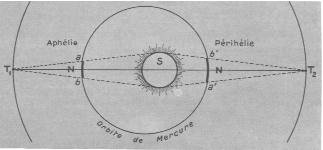
FIGURE IX
(relations entre les orbites de Mercure et de la Terre ; extrait de l'Astronomie L. Rudaux et G. de Vaucouleurs, Larousse, 1948)Quelles sont les idées hermétiques à dégager de ces faits astronomiques et mathématiques ? Nous avons ajouté à l'instant que la Terre [le soleil] se projettait dans le signe du Taureau en mai : la Terre est donc « dans » le signe du zodiaque tropical du Taureau à cette époque de l'année. Or, cette correspondance est importante à signaler ; la Terre en effet, s'apparente à la stibine et présente l'hiéroglyphe renversé de Vénus qui assure, d'après la tradition astrologique, la maîtrise du Taureau. Nous avons mis en évidence dans d'autres sections ce que revêtait alors d'importance l'alliance de la Terre et de Vénus, après qu'elle ait été fécondée par Mars dans le Bélier [cf. en particulier la section sur le tartre vitriolé].
En mai, la Terre « se projette » dans le signe du Scorpion. Nous avons eu l'occasion dans la section sur la réincrudation d'examiner le cas du Scorpion qui correspond à cette phase de l'oeuvre dont les grands adeptes parlent peu et qui équivaut à la chute de l'ange [voyez ce point de science dans la section qui s'y rapporte, lors de l'examen de la porte alchimique de la villa Palombara]. Le Scorpion se rattache à la formation du Soufre rouge alors que celui-ci est dissous à haute température, par voie sèche, dans le Mercure. La cabale veut qu'alors la Terre soit donc en conjonction avec le Soufre : c'est le début de l'accrétion du Soufre rouge au Soufre blanc [cf. section chimie et alchimie pour des développements sur ce sujet]. En somme, le noeud descendant de Mercure [point le plus rapproché de la Terre] est à rapprocher de la préparation du Mercure philosophique et le noeud ascendant [point le plus éloigné], à celle de la Pierre. En mathématiques, ces points sont appelés des mini-max et représentent donc les deux seules solutions X1 et X2 du problème du rapprochement du Mercure avec la Terre hermétique, de ce problème concernant la grande inconnue X que Fulcanelli a laissé aux vrais disciples d'Hermès le soin de résoudre, en leur laissant entendre que la galette des rois n'était point sans rapport avec cette solution. S'il était besoin, nous rapprocherions cette allégorie du Paradis terrestre de la Genèse : on sait qu'il s'agissait d'un jardin qu'Adam cultivait et il nous paraît utile d'évoquer ici Eve et son dialogue avec le serpent dans le Paradis terrestre. Il faudrait ici évoquer la grenade, fruit défendu, dont nous avons assez parlé ailleurs pour qu'on nous permette de passer outre. Pour aider l'étudiant, dans cette passe où nous dirions volontiers, si ce n'était trivial, que les « pépins » sont abondants, voici un indice : Perséphone a raconté à sa mère comment elle fut séduite malgré elle :"Il m'a mis sournoisement dans la main un aliment doux et sucré -un pépin de grenade- et malgré moi, de force, il m'a contrainte à le manger" [hymne homérique à Déméter].
Mais revenons aux cycles combinés de la Terre et de Mercure et retenons bien les séquences suivantes :
à au 7 mai : la Terre se projette dans le signe du Scorpion ;
à au 9 novembre : la Terre se projette dans le signe du TaureauCeci posé, il nous faut déterminer les époques canoniques, c'est-à-dire celles où Mercure est en conjonction à la Terre par rapport au soleil où elle se projette alors dans le Taureau : c'est la phase de résolution du Mercure correspondant à la traversée de son noeud descendant ; et celles où Mercure est en opposition à la Terre par rapport au soleil où elle se projette alors dans le Scorpion : c'est la phase de dissolution totale de l'androgyne hermétique
[encore appelé Rebis, ou le chien du corascène et la chienne d'Arménie, ou les deux colombes de Diane ou peut-être mais le problème est complexe à solutionner, Apollon et Diane dont on a vu qu'ils contractaient plutôt des relations avec le feu secret, auquel cas leur symbolique appartient au 2ème oeuvre].
Les lois de la gravitation, découvertes par le savant et alchimiste Isaac Newton, nous apprennent que les passages de Mercure devant le soleil reviennent à des intervalles irréguliers de treize, sept, dix et trois ans. Et les passages survenant en novembre sont plus fréquents que ceux survenant en mai, le rapport étant de sept à trois. La durée maximale d'un passage est de neuf heures. A présent, mettons ceci en parallèle avec la tradition hermétique : on reconnaîtra que les nombres qui ont été cités : sept, trois, dix et le rapport entre sept et trois sont conformes aux données de la cabale hermétique et laissent à penser que, de manière toute allégorique, les mois canoniques pour débuter l'oeuvre sont non pas les équinoxes de Printemps ou d'Automne mais les mois qui les suivent, mai et novembre. [cf. l'index alphabétique pour les renvois aux nombres].
Enfin, entre ces périodes qui définissent deux moments privilégiés dans l'oeuvre, Mercure est davantage éloigné de nous, et on le voit alors de plus en plus réduit à mesure que la phase augmente d'étendue. Là encore, nous reconnaissons les traits familiers du Mercure fugitif : son observation devient parcellaire et ce dérobement progressif s'aggrave du fait de difficultés dues aux troubles aériens que ne manque pas de produire l'Esprit universel. Nous ajouterons encore que Mercure présente de nombreuses analogies avec la Lune, ce qui n'étonnera pas l'étudiant même au tout début de sa quête en terre hermétique : son caractère féminin s'impose et la surface de Mercure diffuse la lumière solaire -de façon passive- dans les mêmes proportions que notre satellite : la Lune ne réfléchit, comme Mercure, que sept pour cent de la lumière reçue.Mais poursuivons ce que nous disions avant concernant le nombre quarante. Paracelse, dans son Trésor des Trésors nous dit :
"...travaille donc avec ardeur, sans te décourager ; pendant quarante jours alchimiques, fixe, extrais, sublime, putréfie, coagule en pierre, et tu obtiendras enfin le Phénix des philosophes."
Salomon Trismosin, dans la Fleur des Trésors, allégories alchimiques tirées de la Toyson d'or ne s'exprime pas autrement :
"...la tenant [la couleur jaunâtre] au rang des couleurs nécessaires; non pas, dis-je, qu'elle s'arrête dans le vaisseau si longuement que les trois, qui y demeurent permanentes en la matière l'espace de quarante jours chacune, mais pour autant qu'après ces autres-là, elle s'y tient le plus..."
Cette couleur, là encore, est à rapprocher de ce que nous savons de la planète Mercure :
"Dans son ensemble, la surface de Mercure paraît d'un ton jaunâtre assez accentué. On y voit des taches grises...tandis que d'autres régions...sont très claires, sinon blanches..."
Et nous terminerons notre révolution autour de Mercure avec cette citation de la Tourbe :
"Cuisez-le en cette eau quarante jours, et tirez votre vaisseau, et vous trouverez le vêtement que vous demandez. Lavez-le en le cuisant tant qu'il n'y ait point de noirceur et le congelez..."
sans oublier les Fables grecques et égyptiennes de Dom Pernety. A ce propos, Dom Pernety apparaît comme le point de liaison entre les anciens alchimistes et le XIXe siècle qui vit le triomphe de la chimie analytique ; n'en doutons pas : derrière cette figure se cache un hermétiste de haut lignage qui rappelle par endroits, le style simple et efficace de Fulcanelli. Quoi qu'il en soit, Pernety nous dit ceci sur Mercure :
Il y avait deux Mercures en Egypte, l'un nommé Trismégiste, inventeur des hiéroglyphes des Dieux de l'Egypte, c'est-à-dire des Dieux fabriqués par les hommes, et qui faisaient l'objet de l'Art sacerdotal ; l'autre Mercure appelé Anubis, qui était un de ces Dieux, en vue desquels ces hiéroglyphes furent inventés. L'un et l'autre de ces Mercures furent donnés pour conseil à Isis ; Trismégiste pour gouverner extérieurement, et Anubis pour le gouvernement intérieur. Mais comment cela put-il se faire, dira-t-on, puisque Diodore rapporte qu'Anubis accompagna Osiris dans son expédition ? Voici le moyen d'accorder ces contradictions ; et l'on verra qu'Anubis est fils, de même que frère d'Osiris.Et voila ce que la mythologie nous apprend sur Mercure :
Nous avons dit qu'Osiris et Isis étaient le symbole de la matière de l'Art hermétique ; que l'un représentait le feu de la Nature, le principe igné et génératif, le mâle et l'agent ; que l'autre ou Isis signifiait l'humeur radicale, la terre, ou la matrice et le siège de ce feu, le principe passif ou la femelle ; et que tous deux ne formaient qu'un même sujet composé de ces deux substances. Osiris était le même que Sérapis ou Amon, que quelques-uns disent Amon et Amon représenté par une tête de Bélier, ou avec des cornes de Bélier ; parce que cet animal, suivant les Auteurs cités par le P. Kircher, est d'une nature chaude et humide. On voyait Isis avec une tête de Taureau, parce qu'elle était prise pour la Lune, dont le croissant est représenté par les cornes de cet animal ; et que d'ailleurs il est pesant et terrestre. Anubis dans l'Antiquité de Boiffart, se trouve placé entre Sérapis et Apis, pour faire entendre qu'il est composé des deux, ou qu'il en vient ; il est donc fils d'Osiris et d'Isis, et voici comment. Cette matière de l'Art sacerdotal, mise dans le vase, se dissout en eau mercurielle ; cette eau forme le Mercure Philosophique ou Anubis. Plutarque dit que, quoique fort jeune, il fut le premier qui annonça à Isis la mort d'Osiris, parce que ce Mercure ne paraît qu'après la dissolution et la putréfaction désignées par la mort de ce Prince. Et comme Typhon et Nephté sont les principes de destruction et les causes de cette dissolution, on dit qu'Anubis est fils de ce monstre et de sa femme.Mercure, en grec ErmhVOn s'est parfois posé la question de savoir si une planète existait entre Mercure et le Soleil ; les partis sont divisés : les astronomes n'ont pas trouvé de planète inférieure à Mercure et les astrologues lui ont, pourtant, trouvé un nom depuis longtemps : Vulcain. N'ayant pas reçu licence de discuter ce point de science, nous nous bornerons -pour mémoire- à examiner ce que les mythographes ont rapporté sur Vulcain-Héphaïstos :Mercure était fils de Jupiter et de Maïa, fille d'Atlas
[Mercure apparaît constitué d'Esprit et d'un autre principe, dérivé de Maïa : selon une tradition, Maïa fut placée avec ses autres soeurs des Pléiades au nombre des étoiles après les avoir changées en colombes. Leur apparition au Printemps, en mai, indique au marin qui cherche sa route dans les cieux la saison propice à la navigation et leur disparition en novembre signale le début du gros temps. On voit ainsi le rôle de pilote que joue Mercure dans l'oeuvre : c'est le conducteur ou appariteur. En mai, le soleil traverse le signe du Taureau dont le maître est Vénus ; en novembre, il traverse le Scorpion dont le maître est Mars ; on conçoit donc sans difficulté que le Mercure soit en grande partie le résultat d'une union entre des substances voilées par Mars et Vénus ; mais on note aussi un cousinage avec Vesper ou Terre hermétique, voilée par la stibine puisque Atlas est frère de Vesper]
Les Grecs le nommaient Hermès, c'est-à-dire interprète ou messager. Son nom latin venait du mot Merces, marchandise. Messager des dieux et en particulier de Jupiter, il les servait avec un zèle infatigable et sans scrupule, même dans des emplois peu honnêtes. Il participait, comme ministre ou serviteur, à toutes les affaires. On le voit s'occuper de la paix et de la guerre, des querelles et des amours des dieux, de l'intérieur de l'Olympe, des intérêts généraux du monde, au ciel, sur la terre et dans les Enfers. Il se charge de fournir et servir l'ambroisie à la table des Immortels, il préside aux jeux, aux assemblées, écoute les harangues, y répond soit par lui-même, soit d'après les ordres qu'il a reçus. Il conduit aux Enfers les âmes des morts avec sa baguette divine ou son caducée ; il les ramène quelquefois sur la terre. On ne pouvait mourir avant qu'il est entièrement rompu les liens qui rattachent l'âme au corps [nous rappelons qu'en alchimie, l'Âme est la teinture radicale des Corps et que celui-ci est la résine ou Toyson d'or].
Dieu de l'éloquence et de l'art de bien dire, il était aussi celui des voyageurs, des marchands et même des filous [cf. Introïtus, VI]. Ambassadeur plénipotentiaire des dieux, il assiste aux traités d'alliance, les sanctionne, les ratifie, et ne reste pas étranger aux déclarations de guerre entre les cités et les peuples. De jour, de nuit, il ne cesse d'être vigilant, attentif, alerte. C'est en un mot le plus occupé des dieux et des hommes. S'agit-il d'accompagner, de garder Junon, il est là tout près d'elle ; faut-il la surveiller, l'empêcher d'ourdir quelque intrigue, il est là encore, toujours disposé a remplir son emploi. Il est envoyé par Jupiter pour lui préparer ses entrées auprès des plus aimables d'entre les mortelles, pour transporter Castor et Pollux à Pallène, pour accompagner le char de Pluton qui enlève Proserpine ; il s'élance du haut de l'Olympe et traverse l'espace avec la rapidité de l'éclair. C'est à lui que les dieux confièrent la mission délicate de conduire devant le berger Pâris les trois déesses qui se disputaient le prix de la beauté
[cette légende a un fondement hermétique : lorsque Pélée et Thétis célébrèrent leurs noces, tous les dieux furent invités à l'exception d'Eris, la Discorde. Furieuse de cette omission volontaire, la déesse jeta une pomme d'or parmi les convives avec cette inscription : « A la plus belle » Aussitôt, Aphrodite, Athéna et Héra revendiquèrent cette élogieuse épithète. Zeus en appela au jugement de Pâris qui, ne l'oublions pas, fut recueilli à sa naissance par le berger Agélaüs. Ce fut à Aphrodite que Pâris-Alexandre offrit la pomme et que c'est cet événement qui déclencha la guerre de Troie. Il y a là une analogie qui rappelle l'attirance d'Arès et d'Aphrodite]
Tant de fonctions, tant d'attributs divers accordés à Mercure lui conféraient une importance considérable dans les conseils des dieux. D'autre part, les hommes ajoutaient encore à ses qualités divines, en lui attribuant mille talents industrieux. Non seulement il contribuait au développement du commerce et des arts, mais c'est lui, disait-on, qui avait formé le premier une langue exacte et régulière, lui qui avait inventé les premiers caractères de l'écriture, réglé l'harmonie des phrases, imposé des noms à une infinité de choses, institué des pratiques religieuses, multiplié et affermi les relations sociales, enseigné le devoir aux époux et aux membres de la même famille. II avait aussi appris aux hommes la lutte et la danse, et en général tous les exercices du stade qui nécessitent de la force et de la grâce. Enfin il fut l'inventeur de la lyre (1), à laquelle il mit trois cordes, et qui devint l'attribut d'Apollon. Ces qualités ne laissaient pas d'étre rachetées par quelques défauts. Son humeur inquiète, sa conduite artificieuse lui suscitèrent plus d'une querelle avec les autres dieux. Jupiter même, oubliant un jour tous les services de ce dévoué serviteur, le chassa du ciel et le réduisit à garder les troupeaux sur la terre : ce fut dans le temps où Apollon était frappé de la même disgrâce.
On a mis sur le compte de Mercure un grand nombre de filouteries. Étant encore enfant, ce dieu des marchands et des larrons avait dérobé à Neptune son trident, à Apollon ses flèches, à Mars son épée, à Vénus sa ceinture [tous instruments de l'Art sacerdotal]. Il vola aussi les boeufs d'Apollon ; mais, en vertu d'une convention pacifique, il les échangea contre sa lyre. Ces larcins, allégories assez transparentes, indiquent que Mercure, sans doute personnification d'un rnortel illustre, était à la fois habile navigateur, adroit à tirer de l'arc, brave à la guerre, élégant et gracieux dans tous les arts, commerçant consommé faisant l'échange de l'agréable contre l'utile. Il se rendit coupable d'un meurtre pour servir les amours de Jupiter. Argus, fils d'Arestor, avait cent yeux, dont cinquante restaient ouverts pendant que le sommeil fermait les cinquante autres. Junon lui confia la garde d'Io changée en vache ; mais Mercure endormit au son de sa flûte ce gardien vigilant, et lui coupa la tête[ce mythe aurait-il des rapports avec celui de Persée et de la Méduse ? Alors Io pourrait figurer Diane aux cornes lunaires. En effet, Io est identifiée à Isis et après sa mort, avec la déesse Lune, représentée sous la figure d'une femme aux cornes d'or].
Junon, désolée et déçue, prit les yeux d'Argus et les répandit sur la queue du paon. D'autres racontent qu'Argus fut métamorphosé en paon par cette déesse.
Le culte de Mercure n'avait rien de particulier, sinon qu'on lui offrait les langues des victimes, emblème de son éloquence. Par la même raison, on lui offrait du lait et du miel. On lui immolait des veaux et des coqs (2). Il était spécialement honoré en Crète, pays de commerce, et à Cyllène en Ëlide, parce qu'on le croyait né sur le mont du même nom, situé prés de cette ville. II avait aussi un oracle en Achaïe. Après beaucoup de cérémonies, on parlait au dieu à l'oreille, pour lui demander ce qu'on désirait. Ensuite on sortait du temple, les oreilles bouchées avec les mains, et les premières paroles qu'on entendait étaient la réponse du dieu.
A Rome, les négociants célébraient une fête en son honneur, le 15 mai, jour où on lui avait dédié un temple dans le cirque. Ils sacrifiaient une truie pleine et s'aspergeaient de l'eau d'une certaine fontaine (3) à laquelle on attribuait une vertu divine, priant le dieu de favoriser leur trafic et de leur pardonner leurs petites supercheries.
Les ex-voto que les voyageurs lui offraient au retour d'un long et pénible voyage, étaient des pieds ailés. Comme divinité tutélaire, Mercure est ordinairement représenté avec une bourse à la main. Des monuments le représentent avec une bourse à la main gauche, et à l'autre un rameau d'olivier et une massue, symboles, l'un de la paix, utile au commerce, l'autre de la force et de la vertu, nécessaires au traffic. En qualité de négociateur des dieux, il porte à la main le caducée (4), baguette magique ou divine, embIème de la paix. Le caducée est entrelacé de deux serpents, de sorte que la partie supérieure forme un arc ; il est de plus surmonté de deux ailerons. Le dieu a des ailes sur son bonnet, et quelquefois à ses pieds, pour marquer la légèreté de sa course et la rapidité avec laquelle il exécute les ordres.
On le représente d'ordinaire en jeune homme, beau de visage, d'une taille dégagée, tantôt nu, tantôt avec un manteau sur les épaules, mais qui le couvre à peine. Il a souvent un chapeau qu'on appelle pétase (5), auquel sont attachées des ailes. Il est rare de le voir assis. Ses différents emplois au ciel, sur la terre, et dans les Enfers, le tenaient continuellement en activité [les Adeptes disent que leur eau doit être permanente]. Dans quelques peintures, on le voit avec la moitié du visage claire, et l'autre noire et sombre : ce qui indique que tantôt il est dans le ciel ou sur la terre, tantôt dans les enfers où il conduit les âmes des morts[il ressemble à l'objet hermétique que décrit Fulcanelli, blanc sur une face, noire sur l'autre et violet dans sa cassure qui révèle le Soufre rouge].
Lorsqu'on le représentait avec une longue barbe et une figure de vieillard, on lui donnait un manteau descendant jusqu'à ses pieds. Mercure est, dit-on, le père du dieu Pan, fruit de ses amours avec Pénélope. Mais Pénélope ne fut pas la seule mortelle ou déesse honorée de ses faveurs...
Vulcain, en grec HjaistoV[1]3)- VénusVulcain était fils de Jupiter et de Junon, ou, selon quelques mythologues, de Junon seule, avec le secours du vent. Honteuse d'avoir mis au monde un fils si difforme, la déesse le précipita dans la mer, afin qu'il restât éternellement caché dans les abîmes. Mais il fut recueilli par la belle Thétis et Eurynome, filles de l'Océan. Pendant neuf années, entouré de leurs soins, il demeura dans une grotte profonde, occupé à leur fabriquer des boucles, des agrafes,des colliers, des bagues, des bracelets
[c'est-à-dire des objets précieux : on peut lui trouver un équivalent qu'on trouve dans la Nature de J.B. Robinet : la physique [...] admet pour la matière de toutes sortes de lapidifications, un suc pierreux tenu en dissolution dans l'eau souterraine qui lui sert de véhicule].
Cependant la mer le cachait sous ses flots, si bien qu'aucun des dieux ni des hommes ne connaissait le lieu de sa retraite, sauf les deux divinités qui le protégeaient.Vulcain, conservant au fond de son coeur du ressentiment contre sa mère, à cause de cette injure, fit une chaise d'or qui avait un ressort mystérieux, et l'envoya dans le ciel. Junon admire un siège si précieux et, n'ayant aucune méfiance, veut s'y asseoir. Aussitôt elle est prise comme dans un trébuchet. Elle y serait restée longtemps, sans l'intervention de Bacchus, qui enivra Vulcain pour l'obliger à délivrer Junon. Cette aventure de la mère des dieux excita l'hilarité de tous les habitants de l'Olympe, c'est du moins ce que prétend Homère. Ailleurs Homère raconte que ce fut Jupiter lui-même qui précipita Vulcain du haut du ciel. Le jour où, pour punir Junon d'avoir excité une tempète qui devait faire périr Hercule, Jupiter avait suspendu cette déesse au milieu des airs, Vulcain, par un sentiment de compassion ou de piété filiale; vint au secours de sa mère. Il paya cher ce mouvement de bonté. Jupiter le prit par les pieds et le lança dans l'espace. Après avoir roulé tout le jour dans les airs, l'infortuné Vulcain tomba dans l'île de Lemnos
[ce n'est pas un hasard si Lemnos fut remarquée par bien des héros, à commencer par Jason : il existe une proximité phonétique entre LhmnoV et le filet que l'on tend pour prendre des oiseaux, LhmniokoV. Il y a donc nécessité pour les artistes à chercher le filet sur lequel s'attarda Newton dans ses recherches alchimiques]
où il fut recueilli et soigné par les habitants. Dans cette épouvantable chute, il se cassa les deux jambes, et resta boiteux pour toujours.
Cependant, par le crédit de Bacchus, Vulcain fut rappelé dans le ciel et rétabli dans les bonnes grâces de Jupiter, qui lui fit épouser la plus belle et la plus infidèle de toutes les déesses, Vénus, mère de l'Amour. Ce dieu, si laid, si difforme, est de tous les habitants de l'Olympe le plus laborieux, et en même temps le plus industrieux.C'est lui qui, comme en se jouant, fabriquait les bijoux pour les déesses, lui qui, avec ses Cyclopes, dans l'île de Lemnos ou dans le mont Etna, forgeait Ies foudres de Jupiter. Il eut l'idée ingénieuse de faire des fauteuils qui se rendaient d'eux-mêmes à l'assemblée des dieux. Il n'est pas seulement le dieu du feu, mais encore celui du fer, de l'airain, de l'argent, de l'or, de toutes les matières fusibles. On lui attribuait tous les ouvrages forgés qui passaient pour des merveilles : le palais du Soleil, les armes d'Achille, celles d'Énée, le sceptre d'Agamemnon, le collier d'Hermione, la couronne d'Ariane, le réseau invisible dans lequel il prit Mars et Vénus, etc.
Ce dieu avait plusieurs temples à Rome, mais hors des murs : le plus ancien, disait-on, avait été bâti par Romulus. Dans les sacrifices qui lui étaient offerts, on avait coutume de faire consumer par le feu toute la victime, de n'en réserver rien pour le festin sacré ; ainsi c'étaient réellement des holocaustes. La garde de ses temples était confiée à des chiens ; le lion lui était consacré.
Ses fêtes se célébraient au mois d'août, c'est-à-dire durant les chaleurs ardentes de l'été. En l'honneur du dieu du feu, ou plutôt considérant le feu comme le dieu même, le peuple jetait des victimes dans un brasier, afin de se rendre la divinité propice. A l'occasion de ces fêtes, qui duraient huit jours consécutifs, il y avait des courses populaires où les concurrents tenaient une torche à la main. Celui qui était vaincu donnait sa torche au vainqueur. On regarda comme fils de Vulcain tous ceux qui se rendirent célèbres dans l'art de forger les métaux. Les surnoms les plus ordinaires qu'on donne à Vulcain, ou Hèphoestoa, sont Lemnius (le Lemnien), Mulciber ou Mulcifer (qui manie le fer) Etnaeus (de l'Etna), Tardipes (à la marche lente) [ce qui le rattache de même que sa boiterie à Saturne à la marche lente, qui dévore sa progéniture], Junonigena (fils de Junon), Chrysor (brillant), Callopodion (qui a les pieds tortus,cagneux, boiteux), Amphigyéis (qui boite des deux pieds), etc.
Sur les anciens monuments, ce dieu est représenté barbu, la chevelure un peu négligée, couvert à demi d'un habit qui ne lui descend qu'au-dessus du genou, portant un bonnet rond et pointu. De la main droite, il tient un marteau, et de la gauche, des tenailles. Bien que, selon la fable, il fût boiteux, les artistes supprimaient ce défaut ou l'exprimaient à peine sensible. Ainsi il se présentait debout,mais sans aucune apparente difformité. Les poètes plaçaient la demeure ordinaire de Vulcain dans une des îles Éoliennes, couverte de rochers, dont le sommet vomit des tourbillons de fumée et de flamme. Du nom de cette île, appelée autrefois Volcanie, aujourd'hui Volcano, est venu le mot volcan.C'est, chacun le sait, la planète qui, en apparence, se rapproche le plus de la Terre par sa taille mais la similitude s'arrête là. Bien que Vénus possède une atmosphère, celle-ci, à l'analyse, s'avère plus proche de conditions dignes de l'Enfer plutôt que du Paradis et on comprend alors sans peine pourquoi la Terre, à cette époque du travail, est appelée terre damnée ou monde corrompu. La température à la surface solide de Vénus est voisine de 450°C dans l'hémisphère éclairé et de 300°C dans l'hémisphère plongé dans la nuit : voila des chiffres compatibles avec ceux de la voie humide où la température peut s'élever jusqu'à 500°C, conditions de pression non comprises car c'est là où réside le problème de cette voie humide qui nous paraît bien difficile. Cette atmosphère, au reste, est très dense puisque voisine de 90 bars. C'est le CO2 (dioxyde de carbone) qui constitue le constituant principal de l'atmosphère ; on a mis en évidence de l'acide sulfurique [acide vitriolique] et la présence de soufre, de fluor et de chlore, tous corps présents dans le Mercure philosophique. Vénus reste dans la sphère du Mercure, ce qu'atteste le phénomène bien connu des phases - visibles de la Terre, nous précisons - que nous avons évoqué au sujet de Mercure. Les relations qui s'établissent entre les orbites de Vénus et de la Terre, c'est-à-dire les relations hermétiques touchant à l'aspect géométrique des rapports de distance, sont représentées sur la figure suivante.
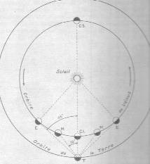
FIGURE X
(relations entre les orbites de Vénus et de la Terre ; extrait de l'Astronomie L. Rudaux et G. de Vaucouleurs, Larousse, 1948)L'angle de la plus grande élongation est de 48°. Vénus peut donc, comme Mercure, précéder ou suivre le soleil de plus de quatre heures. Dans ces conditions, elle domine nettement à l'Orient et à l'Occident la lueur crépusculaire et c'est cette belle planète -belle et sulfureuse à la fois- qui s'impose à tous comme l'étoile du soir ou l'étoile du berger. Nous avons vu que sa correspondance hermétique passe par le mythe d'Aphrodite. Mais elle joue aussi un rôle de « messager du soleil » ce qui renforce son aspect mercuriel. Au reste, chez les Indiens Gé Sherente du Brésil, le soleil a deux messagers : Vénus et Jupiter. Les Bouriates [peuple de Mongols bouddhistes, d'influence tibétaine, éleveurs de boeufs et de chevaux] y voient l'astre tutélaire de leurs chevaux. Ils lui font des offrandes au Printemps, quand ils marquent les poulains et qu'ils taillent la queue et la crinière de leurs cheveux. Au vrai, sans le savoir, les Bouriates font toutes les opérations déterminées par la tradition hermétique, au 2ème oeuvre : la préparation du Mercure philosophique. Le cheval, en alchimie, renvoie à la figure de Pégase [cf. section gardes du corps]. Persée tue la Gorgone qui libère le cheval, c'est-à-dire que le 1er agent détruit le sujet initial qui libère la matière que voile l'hiéroglyphe de Vénus-Aphrodite. Mais quel est donc ce sujet initial ? Dom Pernety, dans ses Fables, va nous aider à résoudre l'énigme :
Les obélisques seuls suffiraient pour prouver que ceux qui les faisaient élever, étaient parfaitement au fait de l'Art hermétique. Les hiéroglyphes dont ils étaient revêtus, les dépenses excessives qu'il fallait faire, et jusqu'à la matière, ou plutôt le choix affecté de la pierre, décèlent cette science. Je n'apporterai même pas en preuves ce que dit le P. Kircher [Obelisc. Pamph.], que l'on doit la première invention des obélisques à un fils d'Osiris, qu'il nomme Meframuthisis, qui faisait sa résidence à Héliopolis, et qui en éleva le premier, paece qu'il était instruit des sciences d'Hermès, et qu'il fréquentait habituellement les Prêtres. Je dirai seulement avec le même Auteur, qu'afin que tout fût mystérieux dans ces obélisques, les inventeurs des caractères hiéroglyphiques firent même choix d'une matière convenable à ces mystères.Certes, il ne s'agissait pas de marbre mais bien d'une variété de granite. Il n'empêche ; la correspondance hermétique est exacte et désigne la pierre du Levant ou dolomie [calcaire saccharoïde dont nous parlons dans la section : De la nature de la pierre] ; rapprochons la pierre du Levant de la pierre de Jésus [le gypse] et nous ne serons plus éloignés de l'Eau divine de Zosime [que l'on obtient en soumettant du sulfate de chaux, gypse, au contact de charbons ardents].
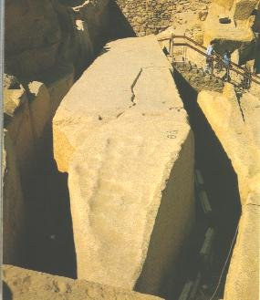
FIGURE XI
(l'obélisque inachevé d'Assouan)«La pierre de ces obélisques était une espèce de marbre dont les couleurs différentes semblaient avoir été jetées goutte à goutte ; sa dureté ne le cédait point à celle du porphyre, que les Grecs appellent puropoicilon, les Latins Pierres de Thèbes, et les Italiens Granito rosso. La carrière d'où l'on tirait ce marbre était près de la fameuse ville de Thèbes [dont fait partie Louxor à notre époque], où résidaient autrefois les Rois d'Egypte, auprès des montagnes qui regardaient l'Ethiopie, et les sources du Nil, en tirant vers le midi. Il n'est point de sortes de marbres que l'Egypte ne fournisse ; je ne vois pas par quelle raison les Hiéromystes choisissaient pour les obélisques celle-là plutôt qu'une autre. Il y avait certainement quelque mystère caché là-dessous, et c'était sans doute en vue de quelque secret de la Nature».
On dira peut-être que la dureté, la ténacité faisait préférer ce marbre à tout autre, parce qu'il était propre à résister aux injures du temps. Mais le porphyre, si commun dans ce pays-là, était bien aussi solide, et par conséquent aussi durable. Pourquoi d'ailleurs n'y regardait-on pas de si près quand il s'agissait d'élever d'autres monuments plus grands ou plus petits que les obélisques, et l'on employait alors d'autres epèces de marbres ? Je dis donc, ajoute le même Auteur, que ces obélisques étant élevés en l'honneur de la Divinité solaire, on choisissait pour les faire une matière dans laquelle on connaissait quelques prpriétés de cette Divinité, ou qui avait quelque analogie de ressemblance avec elle. [Kircher] aurait vu clairement que les couleurs de ce marbre sont précisément celles qui surviennent à la matière que l'on emploie dans les opérations du grand oeuvre, pour faire le soleil philosophique, en l'honneur duquel on élevait ces obélisques : « La Nature a mélangé quatre substances pour la composition de ce Pyrite Egyptien ; la principale, qui en fait comme la base et le fond, est d'un rouge éclatant, dans laquelle sont comme incrustés des morceaux de cristal, d'autres d'améthystes, les uns de couleur cendrée, les autres, bleus, d'autres enfin noirs, qui sont semés çà et là dans toute la substance de cette pierre. Les Egyptiens ayant donc observé ce mélange, jugèrent cette matière comme la plus propre à représenterleurs mystères. » Un philosophe Hermétique ne s'exprimerait pas autrement que le P. Kircher ; mais il aurait des idées bien différentes.
Pour en revenir aux Bouriates, Vénus pour ce peuple de pâtres nomades, est le berger céleste [le conducteur de l'oeuvre, l'appariteur de B. Valentin àDouze Clefs de philosophie] menant ses troupeaux d'étoiles. Pour les anciens peuples d'Asie Mineure, elle est la fille de la lune en tant qu'étoile du soir [Occident]. Cette dernière remarque est d'importance : elle manifeste une fois encore la nature mercurielle de Vénus, l'étoile de lumière [Lucifer], le brillant, l'éclatant, tous adjectifs définissant l'aspect de l'un des sujets premiers que l'artiste doit élire au début du travail. D'une manière plus générale, on peut dire que l'étoile du matin est un lien entre les divinités du jour et de la nuit ; les Sumériens l'appelaient la vaillante ou la dame des batailles. L'étoile du soir, par contre, subit l'influence de sa mère la Lune en en faisant la divinité de l'amour et des plaisirs. Vénus contracte aussi des rapports avec le lion, qui toujours, a symbolisé la fixité de la matière. Le mythe de Vénus commence par une descente aux Enfers et parmi ses attributs figurent l'arc et la flèche, symboles de sublimation. Nous allons voir tout de suite le rapport de proximité entre ce point de symbolisme et les données relatives à l'astronomie et la course céleste de cette planète. L'orientation de la ligne des noeuds de Vénus fait que les passages de Vénus devant le soleil ont lieu soit au début de juin, soit au début de décembre. A ces périodes, la Terre traverse en juin le signe du Sagittaire et en décembre, le signe des Gémeaux. Les périodicités des moments où l'on assiste à une conjonction entre Vénus et la Terre sont de 8 ans ou 121,5 ans, puis 8 ans et 105,5 ans avec reprise du même cycle. ainsi :àen juin : la Terre est dans le signe du Sagittaire
à en décembre, la Terre est dans le signe des GémeauxSi nous mettons en parallèle Mercure et Vénus par rapport à la Terre et aux conjonctions successives, nous trouvons qu'en mai la Terre est en Scorpion, en juin dans le Sagittaire, en novembre, dans le Taureau et en décembre dans les Gémeaux.
Or, chacun le sait, le Sagittaire a pour idéogramme un chasseur ou du moins l'homme tendant à s'identifier à la flèche ; au plan des saisons, c'est le repos complet dans la Nature, la vie résolue à l'état de potentiel ; les travaux des champs sont terminés et les hommes se consacrent davantage à la chasse. Cette partie du zodiaque est par tradition rattachée à Jupiter. Nous nous permettrons d'en douter et de penser avec Fulcanelli que les cartes des hiéroglyphes célestes ont été sciemment disposées dans le but de dissimuler au mieux les correspondances naturelles et évidentes. Au plan hermétique, les rapports s'avèrent délicats à établir et valent qu'on s'y attarde. D'habitude, l'idéogramme du Sagittaire représente un centaure. Dans les arts, il est remarquable que le centaure symbolise la concupiscence charnelle, avec toutes ces violences brutales qui rend l'homme semblable aux bêtes, quand elle n'est pas équilibrée par la puissance spirituelle. Il est donc nécessaire qu'intervienne ici un élément tempérant qui puisse ôter sa nature belliqueuse et qui le rapproche d'Arès, au centaure. Cet élément, nous l'avons noté à maintes reprises, est le lien du Mercure, ce garrot imposé, ce joug ou si l'on préfère, ce mors [è] qui explique entièrement le symbolisme de cette chimère, mi-homme, mi-cheval. Le mors représente donc un élément hermétique essentiel et permet, seul, de déterminer la liaison, de pure cabale, entre Jupiter et le Sagittaire. Qu'on comprenne donc que le signe du Sagittaire, où la Terre s'assoupit, est semblable à l'antichambre du Capricorne, lieu de la solution totale, de la grande éclipse de Lune et de Soleil, moment où Corps et Âme semblent comme dissipés, pris dans les limbes de Cronos. Dès lors, il n'apparaît pas extravagant de faire du Sagittaire le lieu de chute de la Terre. Dans son parcours diurne, nous avons montré -lieu commun- que Vénus est l'étoile du matin et aussi l'étoile du soir. On peut y voir une correspondance hermétique qui n'a pas dû échapper aux grands cabalistes que furent Fulcanelli, E. Canseliet ou Philalèthe. Dans son parcours, Vénus le matin, apparaît sous ses traits habituels, mais, par suite de sa course, le soir, elle se transforme en Terre ainsi que le montre le schéma suivant.
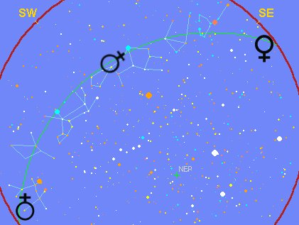
FIGURE XII
(schéma obtenu à partir du logiciel Cybersky)Le mouvement diurne donne l'impression d'entrainer Vénus : elle se trouve en situation inverse le soir, de celle du matin. Vénus s'est ainsi transformée en stibine hermétique, l'albâtre des Sages. Nous comprenons ainsi que Vénus et la Terre damnée participent toutes deux du Mercure philosophique. Revenons un instant sur la légende du Centaure. Dans ses Deux Logis alchimiques, E. Canseliet analyse les caissons peints du château du Plessis-Bourré et notamment l'un d'eux donnant à l'un des chapitres le titre d'Homme-Lion :
"L'homme-Lion, de qui la longue queue finit en chevelure, elle aussi chassée par le vent, associe l'esprit et même l'âme du cosmos à l'alchimiste, que celui-ci soit par le Verbe ou par le Feu élémentaire. Ainsi le mercure et le soufre se sont-ils étrangement incarnés sur ce panneau, grâce à l'action de la massue, qui prépare celle de l'arc et de sa flèche -sagitta- dans les mains les plus habiles de l'homme-cheval ou sagittaire."
Les Centaures sont inséparables d'Ixion : roi des Lapithes, après avoir épousé Dia, la fille du roi Déionée, il refusa à son beau-père les riches présents qu'il lui avait promis, puis le tua en le précipitant dans une fournaise [équivalent de la mise au tombeau du Roi hermétique]. Ixion, que nul ne consentait à purifier [tant ce montre difficile l'obtention du vase de nature, i.e. le Mercure], implora Zeus : le souverain des dieux fut touché par les pleurs [dissolution de la matière] et l'invita à sa table [mélange des matières], où il consomma le nectar et l'ambroisie [alliance du Mercure et du Soufre], qui assurent l'immortalité. Toutefois, nullement reconnaissant de ces bienfaits, Ixion tenta de séduire Héra [Ixion possède des traits qui l'apparentent à Arès et à Zéphyre ; pour l'assagir, il faut lui couper les ailes]. Zeus, alors, crée une nuée qui ressemblait à son épouse [c'est la rosée de mai]. Ixion s'unit à cette apparence. Les centaures furent les fruits de ces amours illusoires [il s'agit là du Compost philosophal, alliage entre le Rebis -l'homme double igné- et le dissolvant]. Hermès reçut mission d'appliquer à l'ingrat le châtiment qu'il méritait : il lia Ixion au moyen de serpents à une roue qui tourne sans relâche au fond du Tartare
[l'allégorie est ici évidente : Ixion est assimilé au Compost qui doit de façon continue subir l'action du Mercure, selon les degrés de feu requis, les régimes de Philalèthe, et ce Mercure est ici désigné par l'une de ses dénominations cabalistiques : le Tartare, dont nous avons parlé dans d'autres sections, cf. index alphabétique].
Ixion peut également symboliser la coagulation progressive de l'eau mercurielle [Ixos = petit poisson, rémora et IxoV = glu, liquide visqueux].
On doit aussi porter la réflexion sur une apparente anomalie : Vénus se projette dans le signe du Sagittaire [où se projette le soleil en décembre] au mois de juin, c'est-à-dire à l'époque où le soleil traverse le signe des Gémeaux : c'est le signe du double Mercure, c'est-à-dire du Mercure philosophique. Nous tenons l'explication : au signe du Sagittaire correspond la chute de la Terre, c'est-à-dire son évanouissement au sein du Mercure. On comprend mieux comment fonctionne ce zodiaque alchimique : la Terre que traverse le signe indique l'action en cours à une certaine époque de l'oeuvre et le Soleil indique exactement le type de l'action. Le centaure du Sagittaire apparaît ainsi semblable à la Licorne : comme elle, il va, par sa flèche, réaliser l'incrustation du Soufre rouge dans la résine de l'or. Voici ce que la mythologie nous apprend de Vénus :Vénus ou Aphrodite est une des divinités les plus célèbres de l'antiquité : c'est elle qui présidait aux plaisirs de l'amour. Sur son origine, comme sur celle de beaucoup d'autres dieux ou déesses, les poètes ne sont pas d'accord. On a d'abord distingué deux Vénus : l'une s'est formée de l'écume de la mer échauffée par le sang de Caelus [par cabale, l'air ce qui se révèle exact dans un sens : Vénus symbolise un sel de potasse, du salpêtre par exemple] ou Uranus, qui s'y mêla, quand Saturne porta une main sacrilège sur son père. On ajoute que de ce mélange la déesse naquit près de l'île de Chypre, dans une nacre de perle. Homère dit qu'elle fut portée dans cette ile par Zéphyre (1), et qu'il la remit entre les mains des Heures, qui se chargèrent de l'élever. Cette déesse ainsi conçue serait la véritable Aphrodite, c'est-à-dire née de l'écume, en grec Aphros [ajro-nitrum : fleur de nitre].Mais Vénus, c'est aussi l'Aurore dans un certain sens ou du moins, de façon générale, le crépuscule. C'est, dans toutes les civilisations, le symbole joyeux de l'éveil. Pour Baudelaire, l'Aurore est en robe rose et verte [Crépuscule du matin] et elle voit [au plan hermétique] se succéder les générations. L'Aurore a fait l'objet d'ouvrages alchimiques et Henri de Lintaut lui a consacré un ouvrage. Voici ce qu'en disent les mythographes :
On a donné quelquefois à cette divinité une origine moins bizarre, en disant qu'elle était issue de Jupiter et de Dioné, fille de Neptune, et par conséquent sa cousine germaine. Quelque origine que les différents poètes aient donnée à Vénus, et quoique souvent le même poète en ait parlé différemment, ils ont toujours eu en vue la même Vénus, à la fois céleste et marine, déesse de la beauté et des plaisirs, mère des Amours, des Grâces, des Jeux et des Ris : c'est à la même qu'ils ont attribué toutes les fables qu'ils ont créées sur cette divinité. Elle fut donnée par Jupiter comme épouse à Vulcain (2); ses galanteries éclatantes avec Mars firent la risée des dieux. Elle aima passionnément Adonis (3), fut la mère d'Éros ou Cupidon ou encore l'Amour, celle du pieux Énée, celle d'un grand nombre de mortels, car ses liaisons avec les habitants du ciel, de la terre et de la mer furent incalculables, infinies. On lui éleva des temples dans l'île de Chypre, à Paphos, à Amathonte; dans l'île de Cythère, etc. De là ses noms de Cypris, Paphia, Cythérée. On l'appelait aussi Dioné, comme sa mère; Anadyoméne, c'est-à-dire « sortant des eaux », etc.
Elle avait une ceinture (4) où étaient renfermées les grâces, les attraits, le sourire engageant, le doux parler, le soupir plus persuasif, le silence expressif et l'éloquence des yeux. 0n raconte que Junon l'emprunta de Vénus, pour ranimer les feux de Jupiter et pour le gagner à la cause des Grecs contre les Troyens. Après son aventure avec Mars, elle se retira d'abord à Paphos, puis alla se cacher dans les bois du Caucase. Tous les dieux la cherchèrent longtemps en vain ; mais une vieille leur apprit le lieu de sa retraite : la déesse la punit en la métamorphosant en rocher.
Rien n'est plus célèbre que la victoire remportée par Vénus, au jugement de Pâris, sur Junon et Pallas, bien que ses deux rivales eussent exigé d'elle que, avant de comparaître, elle déposât sa redoutable ceinture. Elle témoigna perpétuellement sa reconnaissance à Pâris, qu'elle rendit possesseur de la belle Hélène, et aux Troyens, qu'elle ne cessa de protéger contre les Grecs et Junon même. L'amour le plus constant de Vénus fut celui qu'elle éprouva pour le charmant et jeune Adonis, fils de Myrrha et de Cynire. Myrrha, sa mère, fuyant le courroux paternel, s'était retirée en Arabie, où les dieux la changèrent en l'arbre qui porte la myrrhe. Le terme de la naissance étant arrivé, l'arbre s'ouvrit pour faire jour à l'enfant. Adonis fut reçu par les nymphes qui le nourrirent dans les grottes du voisinage. Devenu adolescent, il passa en Phénicie. Vénus le vit, l'aima, et, pour le suivre à la chasse dans les forêts du mont Liban, elle abandonna le séjour de Cythère, d'Amathonte et de Paphos, et dédaigna l'amour des dieux. Mars,jaloux et indigné de cette préférence donnée à un simple mortel, se changea en sanglier (5) furieux, s'élança sur Adonis, et lui fit à la cuisse une blessure qui causa sa mort. Vénus était accourue, mais trop tard, au secours de l'infortuné jeune homme. Accablée de douleur, elle prit dans ses bras le corps d'Adonis, et, après l'avoir longtemps pleuré, le changea en anémone, fleur éphémère du printemps. D'autres racontent qu'Adonis fut tué par un sanglier que Diane lança contre lui, pour se venger de Vénus qui avait causé la mort d'Hippolyte. Adonis, descendu aux enfers, fut aimé encore de Proserpine [Perséphone]. Vénus s'en plaignit à Jupiter. Le maître des dieux termina le débat en ordonnant qu'Adonis serait libre quatre mois de l'année, qu'il en passerait quatre avec Vénus, et le reste avec Proserpine. Sous le voile de cette fable on peut reconnaître dans Adonis la Nature en ses diverses phases et sous ses différents aspects. Au printemps, elle se montre belle et féconde ; l'hiver, elle semble morte, mais bientôt elle reparaît avec la même splendeur et la même fécondité.
Vénus n'est pas toujours il s'en faut, la déesse aimable des Ris et des Grâces. Elle était fort vindicative, et impitoyable dans ses vengeances. Pour punir le Soleil (Phébus) de l'indiscrétion qu'il avait eue d'avertir Vulcain de ses amours avec Mars, elle le rendit malheureux dans la plupart de ses amours. Elle le poursuivit même par les armes, jusque dans ses descendants. Elle se vengea de la blessure qu'elle avait reçue de Diomède devant Troie, en inspirant à Égialée, sa femme, une passion pour d'autres hommes. Elle punit de même la muse Clio qui avait blâmé son amour pour Adonis, Hippolyte qui avait dédaigné ses attraits. Enfin, Tyndare lui ayant fait une statue avec des chaînes aux pieds, elle le punit par l'impudicité de ses filles, Hélène et Clytemnestre. Son fils Cupidon est aussi aimable et aussi cruel que sa mère. Dans le culte de Vénus, si répandu en Grèce et dans le monde ancien, se mêlent toutes les pratiques superstitieuses, les plus innocentes et les plus criminelles, Ies moins impures comme les plus déréglées. Les hommages qui lui sont rendus se rattachent à la diversité de ses origines et à l'opinion qu'en avaient eue différents peuples, à des époques diverses.Ce culte rappelait à la fois celui des divinités assyriennes et chaldéennes, de l'Isis égyptienne et de l'Astarté des Phéniciens. Vénus présidait aux mariages, même aux naissances, mais particulièrement à la galanterie. On lui consacra, parmi les fleurs, la rose ; parmi les fruits, la pomme et la grenade (6) ; parmi les arbres, le myrte ; parmi les oiseaux, le cygne, le moineau et surtout la colombe [la colombe et le cygne sont congénères dans le symbolisme alchimique]. On lui sacrifiait le bouc, le verrat, le lièvre, et rarement de grandes victimes.
On la représentait entièrement ou à demi nue, jeune, belle, habituellement riante, tantôt émergeant du sein des flots, debout, le pied sur une tortue, sur une conque marine, ou montée sur un hippocampe, avec un cortège de Tritons et de Néréides, tantôt traînée sur un char attelé de deux colombes ou deux cygnes. Les Spartiates la représentèrent tout armée, en souvenir de leurs femmes qui avaient pris les armes pour défendre leur ville.
Le peintre Apelle avait représenté dans un admirable tableau la naissance de Vénus surnommée Anadyomène, c'est-à-dire « qui sort de la mer ». Ce tableau fut consacré à la déesse même par l'empereur Auguste, et il existait encore à l'époque du poète latin Ausone qui en fait une courte, mais vive description.« Voyez, dit-il, comme cet excellent maître a bien exprimé cette eau pleine d'écume qui coule à travers les mains et les cheveux de la déesse,sans rien cacher de leurs grâces » [...] Il existe de Vénus un grand nombre de statues les plus belles et les plus célèbres soit la Vénus de Médicis que l'on croit être une copie de la Vénus de Cnide, exécutée par Praxitèle, la Vénus d'Arles, la Vénus de Milo découverte à Milo par le comte de Marcellus, en 1820. Sur une médaille de l'impératrice Faustine, on voit l'image de Vénus mére : elle tient une pomme de la main droite, et de la gauche un petit enfant enveloppé de langes. Sur une autre médaille de la même impératrice, on a représenté Vénus victorieuse. Elle s'efforce, par ses caresses, de retenir le dieu Mars qui part pour la guerre. L'une des plus curieuses statues de cette déesse variété de la Vénus hermaphrodite, était la Vénus barbata. Elle se trouvait à Rome, et représentait dans sa partie supérieure un homme portant une chevelure et une barbe abondantes, tandis que dans sa partie inférieure, elle figurait une femme [on peut y voir une parenté avec l'androgyne hermétique]. Cette singulière statue fut consacrée à la déesse à l'occasion d'une maladie épidémique, à la suite de laquelle les dames romaines perdaient leurs cheveux. C'est à Vénus qu'on en attribua la guérison. Dans plusieurs tableaux modernes, cette divinité est représentée sur son char, trainé par deux cygnes : elle porte une couronne de roses et une chevelure blonde : la joie rayonne dans ses yeux, le sourire est sur ses lèvres: autour d'elle se jouent deux colombes et mille petits amours. Le vendredi, jour de la semaine, lui était consacré (Veneris dies).L'Aurore, en grec hwVIl nous reste à évoquer Lucifer et Vesper, les deux faces de Vénus-Aphrodite :L'Aurore était fille de Titan et de la Terre
[il est remarquable de voir à quel point l'histoire et le mythe peuvent rejoindre la science ; l'Aurore, autre version de Vénus-Aphrodite, s'avère être un mélange de chaux -TitanoV- et d'argile : il s'agit donc de la marne],
ou, selon Hésiode, de Théia [la Terre primaire] et d'Hypérion, soeur du Soleil et de la Lune
[ainsi, lorsque les alchimistes disent que les parents de la Pierre sont le soleil et la Lune, négligent-ils de dire qu'Eos en est la marraine et Arès son parrain].
Cette déesse ouvrait les portes du jour. Après avoir attelé les chevaux au char du Soleil, elle le précédait sur le sien. Ayant épousé Persès, fils d'un Titan, elle eut pour enfants les Vents [Borée et Zéphyre qui soufflent à des époques différentes de l'oeuvre], les Astres et Lucifer [Vénus]. Amoureuse du jeune Tithon
[Tithonos contracte d'étranges rapports avec Cronos : Eos l'immortelle eut des enfants d'un mortel, Tithonos ; Eos obtint de Zeus que Tithonos devint immortel mais elle avait oublié d'ajouter la jeunesse éternelle. Tithonos ne mourut donc point mais continua à vieillir : il se dessécha et se tassa sur lui-même. On peut lui trouver comme équivalent hermétique le Mercure, vers la fin du 3ème oeuvre, qui disparaît peu à peu en laissant des résidus mercuriels dans lesquels est empâtée la Pierre],
flls de Laomédon et frère de Priam, elle l'enleva, l'épousa et en eut deux fils dont la mort lui fut si sensible que ses larmes abondantes produisirent la rosée du matin, l'un Memnon
[Memnon a des rapports avec le poids de nature : dans le combat qui l'opposa à Achille, Zeus pesa le destin des deux héros devant Thétis et eos, leurs mères éplorées. La balance pencha en faveur d'Achille mais Zeus accorda comme consolation l'immortalité à Memenon ; Eos -dit-on- verse chaque matin des larmes qui se transforment en roses en souvenir de son fils],
roi d'Éthiopie, l'autre Hermathion. Son second époux fut Céphale qu'elle enleva à Procris, fille d'Érechtée, roi d'Athènes, et en eut un fils. Depuis elle enleva Orion et beaucoup d'autres. Les anciens la représentent vêtue d'une robe de safran, ou d'un jaune pâle, une verge ou une torche à la main, sortant d'un palais de vermeil, et montée sur un char de même métal ayant des reflets de feu. Homère lui donne deux chevaux, qu'il nomme Lampos et Phaéton
[Phaéton nous donne un exemple d'un cas de Mercure non contrôlé : Phaéton demanda au Soleil, son père, un signe de sa naissance, piqué au vif par quelqu'un qui doutait de son ascendance divine. Le Soleil lui accorda tout ce qu'il voudrait. Phaéton voulut alors diriger lui-même le char de son père. Mal lui en prit car bientôt, les coursiers ne répondirent plus à son commandement et le char, tantôt montait trop haut en risquant de brûler la route céleste, tantôt descendait trop bas faisant prendre feu aux montagnes et transformant les fleuves en vapeur. Zeus fut contraint de foudroyer Phaéton pour sauver l'univers et le fils du Soleil fut précipité dans le fleuve Eridan],
et la dépeint avec un grand voile sombre rejeté en arrière, et ouvrant de ses doigts de rose la barrière du Jour. D'autres poètes lui donnent des chevaux blancs ou même Pégase [la première matière, que l'artiste obtient en utilisant Persée qui tue la Méduse et en rapporte le Caput] pour monture.
Quelquefois on la représente sous la figure d'une jeune nymphe couronnée de fleurs, et montée sur un char tiré par Pégase. De la main gauche elle tient un flambeau, et de l'autre elle répand une pluie de roses. Dans une peinture antique, elle chasse de sa présence la Nuit et le Sommeil.Lucifer, en grec Éosphoros on PhosphorosLa planète Vénus, appelée communément éloile du berger, précède à l'est le lever du soleil, et se montre à l'occident, dès le crépuscule. Étoile du matin, elle se nomme Lucifer (1), et prend le nom de Vesper quand elle devient étoile du soir. Bien que personnifiant la même planète, Lucifer et Vesper ont dans le monde sidéral chacun leur histoire respective. Lucifer, fils de Jupiter et de l'Aurore, est le chef ou le conducteur de tous les autres astres [Lucifer est donc synonyme du Mercure]. C'est lui qui prend soin des coursiers et du char du Soleil ; lui qui les attèle et les détèle avec les Heures. On le reconnaît à ses chevaux blancs dans la voûte azurée, lorsqu'il annonce aux mortels l'arrivée de l'Aurore, sa mère. Les chevaux de main lui étaient consacrés.
Vesper ou Hespéros brille le soir à l'occident avec tout l'éclat dont resplendit Lucifer aux premières lueurs du jour. Frère de Japet
[fils d'Ouranos et de Gaïa, ce titan appartient à la première génération des dieux ; il fut précipité au fond du Tartare avec son frère Cronos et les autres Titans ; nous conservons donc la même idée hermétique]
et frère d'Atlas
[Atlas porte la Terre sur ses épaules ; sa nature chthonienne est bien en accord avec la légende selon laquelle Persée lui présenta, à la suite d'une dispute, la tête de Méduse ; le Géant, pétrifié, fut changé en une montagne nommée « Atlas » sur laquelle, selon les Anciens, reposait la voûte céleste],
Vesper habitait avec son frère une contrée située à l'ouest du monde et nommée Hesperitis
[que l'on peut assimiler au Jardin des Hespérides ; les pommes d'or contenant les pépins dessinant une étoile à cinq branches y étaient gardés par le dragon de Colchide].
En Grèce, le mont Oeta lui était consacré. On appelle Hespérie l'Italie et l'Espagne. La première, parce que Vesper, chassé par son frère, s'y retira ; et la seconde parce que ce pays est le plus occidental de l'Europe, le plus sensiblement rapproché de Vesper.
Satellite de la Terre, la Lune dispense le temps hermétique dans l'oeuvre alchimique ; ses phases scandent les époques du travail ; ainsi que l'a dit Hermès, le soleil est le père et la lune, la mère de la Pierre. L'emblème de Limojon de Saint-Didier est assez éloquent à cet égard. Elle contrôle tous les plans cosmiques régis par la loi du devenir cyclique : eaux, pluie, végétation, fertilité. Elle tend à unifier les substances hétérogènes et, dans le cas du grand oeuvre, les deux extrémités du vaisseau de nature.
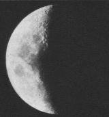
FIGURE XIII
(la Lune en son dernier quartier ; extrait de l'Astronomie L. Rudaux et G. de Vaucouleurs, Larousse, 1948)De nombreuses divinités lunaires, telles que Perséphone et Hermès, sont en même temps d'origine chthonienne et funéraire. La Lune, c'est d'abord Séléné. Fille d'Hypérion et de Théia, soeur d'Hélios, Séléné a les traits d'une jeune femme au visage d'une blancheur éclatante qui fait pâlir tous les autres astres lorsqu'elle parcourt les cieux sur son char d'argent. Déjà, des rapports nous viennent intuitivement à l'esprit : Théia est l'une des divinité primitives, fille d'Ouranos et de Gaïa ; elle est mère d'Hélios, le soleil et d'Eos, l'Aurore. Quant à Hypérion, c'est un des Titans ; il est la soeur de Théia et fut aussi son époux. Séléné a donc des traits que l'on reconnaît formellement comme chthnoniens ; la lune a un visage double et même triple : elle n'a pas la même signifiance selon qu'elle est dans son premier quartier ou dans son dernier quartier. Représentée comme sur la figure XIII, elle personnifie le Soufre blanc que l'on obtient d'un limon boueux ; on ne compte plus les amours de Séléné avec Zeus et surtout avec Pan. Pan la séduisit et l'attira dans les forêts en lui faisant don d'une toison d'une lumineuse blancheur : c'est cette toison qui correspond au Soufre blanc. La passion de Séléné la plus célèbre restera celle qu'elle éprouva pour le berger Endymion qui avait demandé aux dieux de lui accorder l'immortalité [au sens hermétique, la Pierre au rouge], quitte à rester plongé dans un sommeil sans fin. Ce sommeil éternel permet à Endymion de rester jusqu'à la fin des temps le jeune et beau berger qu'il était. Une fresque de Pompéi représente Endymion endormi [on croirait voir l'emblème initiale du Mutus Liber] ; au-dessus d'Endymion apparaît Séléné, représentée avec des cornes [qui signalent sa nature mercurielle], elles-mêmes soutenant un croissant de Lune dont elle est l'incarnation divine. Par certaines nuits de pleine lune, il se produit de la rosée, tout spécialement au mois de mai. A cette époque de l'année, le soleil traverse le signe des Gémeaux qui est celui consacré au double Mercure ; cette observation s'accorde avec l'emploi de la rosée en mai, médiateur hermétique entre le ciel et la terre.
Si nous examinons la lune cornée, qui est l'un des noms du feu des Sages, nous nous apercevons que des animaux porteurs de cornes, tels que le taureau et la vache lui sont consacrés ; dans les régions méridionales, la faucille lunaire [qui a quelque rapport avec la faux que l'on a examiné dans le rébus de Saint-Grégoire] est représentée horizontale formant ainsi une barque : c'est la barque divine des Egyptiens, l'Arche de Noé, le bateau des Argonautes, etc. En astrologie comme en alchimie, la lune est importante pour les voyages maritimes et il n'est que de voir la fontaine du Vert-Bois pour comprendre l'importance de l'allégorie. Le cousinage de l'eau et de la lune est très ancien. Au début des temps historiques, se trouvaient dans l'Egypte, la Chaldée et la fertile terre de Canaan, des civilisations agricoles. La comparaison de la terre humide et fertile, d'où provenaient beaucoup de plantes et de fruits, avec le sein d'une mère, en découlait facilement. Il en sortit le culte de la Grande Mère qui devait prendre tout spécialement de l'importance dans le grand oeuvre : la Terre Mère s'élève ainsi jusqu'au ciel et trouve son expression dans la lune croissante et dans le principe humide. Précisément, nous parlions tout à l'heure de la Lune en son dernier quartier qui symbolise le Soufre blanc. La Lune montante symbolise, pour sa part, le Mercure philosophique : c'est alors Diane aux cornes lunaires ainsi que l'exprime le dessin suivant
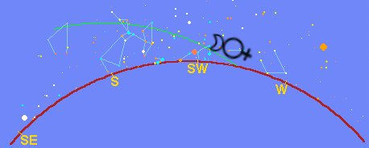
FIGURE XIV
(schéma obtenu à partir du logiciel Cybersky)Le soir arrive ; le soleil est couché ; demeure la clarté crépusculaire. La lune montante est ce jour là en conjonction avec Vénus ou la Terre damnée, comme on voudra. Le contact des deux astres donne l'aspect de Mercure ou de Diane aux cornes lunaires. C'est l'heure où la déesse chasseresse, Artémis, erre, agitée, dans les bois ; certains auteurs l'ont identifié à la pulsion vitale de l'âme, inquiète et non contrôlée par la raison [on peut lui trouver des rapports avec Arès au plan psychologique ; on peut voir aussi dans cette « inquiétude de l'âme » un moment tumultueux de la dissolution des deux Soufres dans le dissolvant]. Artémis, la soeur d'Apollon, est l'enfant de Latone, là encore déesse chthnonienne. Elle est vierge et semblable au croissant lunaire montant. Elle fut honorée comme protectrice des grands animaux : daims, boeufs, ours et chevaux, qui forment une partie du bestiaire hermétique. Ce bestiaire se confond d'ailleurs avec celui qui a été peint, spiritualisé, par les hommes, quand ils ont projeté sur la voûte céleste leurs dieux intérieurs en leur donnant le nom de constellation, apposant par là le sceau du divin entre le Ciel et la Terre. Artémis a l'habitude de se tenir près des fontaines, des sources et des bois humides, en compagnie de ses nymphes.
Une autre Lune existe, la pleine Lune, qui naît à l'Orient et provoque une deuxième Aurore dans un ciel noir. La pleine Lune est assimilée à Héra [Junon] ; épouse de Zeus, elle symbolise la maternité et c'est sur elle que compte l'Artiste, oeuvrant à son fourneau, pour déclencher la parturition hermétique d'où sortira l'astérie céleste, l'escarboucle aux mille feux. Cette pleine lune brille en plein toute la nuit, et se retrouve le matin à l'Occident alors que le soleil pointe à l'horizon oriental ; pour peu que Vénus se présente comme messager du soleil, la rencontre de Junon et de Lucifer ne peut pas laisser indifférent l'étudiant en art sacerdotal.
En plus de la lune elle-même, il reste à considérer les points opposés où elle coupe le plan de l'écliptique : tête du Dragon [Caput draconis] et queue du dragon [Cauda draconis], le dragon que le chevalier doit combattre au début de l'oeuvre, celui dont les dents semées ont fait germer tout un peuple qui s'apparente aux Titans [voir Matière], celui qui se mord la queue et figure ainsi les deux extrémités de l'oeuvre. Dom Pernéty nous dit ceci de la lune :Quand on fait la généalogie d'Osiris, on est au fait de celle d'Isis son épouse, puisqu'elle était sa soeur. On pense communément qu'elle était le symbole de la Lune, comme Osiris était celui du soleil, mais on la prenait aussi pour la Nature en général, et pour la Terre, suivant Macrobe. De là vient, dit cet Auteur, qu'on représentait cette déesse ayant le corps tout couvert de mamelles. Apulée est du même sentiment que Macrobe, et en fait la peinture suivante [Métam. I, 2] :Arrêtons-là pour le moment cet improbable rapport chronologique du Monde ; il n'est pas sans intérêt, pourtant : souvenons-nous de ce que dit Fulcanelli à propos du Déluge :
« Une chevelure longue et bien fournie tombait par ondes sur son cou divin ; elle avait en tête une couronne variée par la forme et par les fleurs dont elle était ornée. Au milieu sur le devant paraisait une espèce de globe, en forme presque de miroir, qui jetait une lumière brillante et argentine, comme celle de la Lune. A droite et à gauche de ce globe s'élevaient deux ondoyantes vipères, comme pour l'enchâsser et le soutenir ; et de la base de la couronne sortaient des épis de blé. Une robe de fort lin la couvrait tout entière. Cette robe était si éclatante, tantôt par sa grande blancheur, tantôt par son jaune safrané, enfin par une couleur de feu si vive, que mes yeux en étaient éblouis. Une simarre remarquable par sa grande noirceur, passait de l'épaule gauche au desous du bras droit, et flottait à plusieurs plis en descendant jusqu'aux pieds ; elle était bordée de noeuds et fleurs variées, et parsemée d'étoiles dans toute son étendue. Au milieu de ces étoiles se montrait la Lune avec des rayons ressemblant à des flammes. Cette Déesse avait un cistre à la main droite, qui, par le mouvement qu'elle lui donnait, rendait un son aigu, mais très agréable ; de la gauche elle portait un vase d'or dont l'anse était formée par un aspic, qui élevait la tête d'un air menaçant ; la chaussure qui couvrait ses pieds exhalans l'ambroisie, était faite d'un tissu de feuilles de palme victorieuse. Cette grande Déesse dont la douceur de l'haleine surpasse tous les parfums de l'Arabie heureuse, daigna ma parler en ces termes : Je suis la Nature, mère des choses, maîtresse des éléments ; le commencement des siècles, la souveraine des Dieux et des Déesses ; c'est moi qui gouverne la sublimité lumineuse des cieux, les vents salutaires des mers, le silence lugubre des enfers. Ma divinité unique est honorée par tout l'univers, mais sous différentes formes, sous divers noms et par différentes cérémonies. Les Phrygiens, les premiers nés des hommes, m'appellent la pessinontienne mère des Dieux : les Athéniens, Minerve Cécropienne ; ceux de Cypre, Vénus Paphienne ; ceux de Crête, diane Dictyme ; les Siciliens qui parlent trois langues, Proserpine Stygienne ; les Eléusiniens, l'ancienne Déesse Cérès, d'autres Junon ; d'autres Bellone ;quelques-uns Hécaté ; quelques autres, Rhamnufie. Mais les Egyptiens qui sont instruits de l'ancienne doctrine, m'honorent avec des cérémonies qui me sont propres et convenables, et m'appellent de mon véritable nom, la Reine Isis »
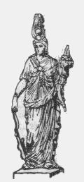
FIGURE XV
Isis (il s'agit d'une Isis « romaine », très tardive. Vous trouverez l'Isis hermétique à la section Chevreul - critique historique I -)Isis était plus connue sous son propre nom dans les pays hors de l'Egypte, que ne l'était Osiris, parce qu'on la regardait comme la mère et la nature des choses. Ce sentiment universel aurait dû faire ouvrir les yeux à ceux qui la regardaient comme une véritable Reine de l'Egypte, et qui prétendent en conséquence adapter son histoire feinte à l'histoire réelle des Rois de ce pays-là. Les Prêtres d'Egypte comptaient, suivant le témoignage de Diodore, vingt mille ans depuis le règne du soleil jusqu'au temps où Alexandre le Grand passa en Asie. Ils disaient aussi que leurs anciens Dieux régnèrent chacun plus de douze cents ans, et que leurs successeurs n'en régnèrent pas moins de trois cents ; ce que quelques-uns entendent du cours de la Lune, et non de celui du Soleil, en comptant même les mois pour des années. Eusèbe, qui fait mention de la chronologie des Rois d'Egypte, place Océan, le premier de tous, vers l'an du monde 1802, temps auquel Nemrod commença le premier à s'arroger la supériorité sur les autres hommes. Eusèbe donne à Océan pour successeur, Osiris et Isis. Les Pasteurs régnèrent ensuite pendant 103 ans, dont le dernier fut Miris ou Pharaon, dit Menophis, environ l'an du monde 2550. A cette dynastie succéda celle des Larthes, qui dura 194 ans ; puis celle des Diapolytans qui fut de 177 ans.
"Il est écrit que la pluie diluvienne dure quarante jours et que les eaux recouvrent la terre l'espace de cent cinquante jours, soit cent quatre vingt-dix au total...Le déluge était fini. Il avait duré cent quatre-vingt-dix-sept jours cycliques, ou, à trois années près, deux siècles réels."
Ces années qui se succèdent entre les règnes ne sont peut-être pas sans rapport fortuit avec ce que nous dit Fulcanelli...D'après Pernerty, le portrait d'Isis qu'Apulée dresse est une allégorie de l'oeuvre assez palpable pour ceux qui sont versés dans les ouvrages hermétiques. La couronne et les couleurs des habits indiquent différentes époques de l'oeuvre. Il est clair qu'Isis désignait outre la Lune, la Terre et la Nature. D'abord, par sa couronne qui se signale comme un globe brillant comme la Lune ; puis par les deux serpents qui sont assimilables à ceux qui s'enroulent autour du caducée de Mercure ; enfin par les épis qui sortent du globe et qui sont les mêmes que ceux que l'on aperçoit sur le vitrail des Jacobins [Myst. ; Alchimie] que l'on a analysé dans la section du rébus de St-Grégoire. Il n'est pas jusqu'aux couleurs de l'oeuvre qui ne soient évoquées, dans l'énumération de celles des vêtements d'Isis : une simarre ou longue robe frappante par sa grande noirceur couvre tellement par le haut une autre robe de fin lin, d'abord blanche puis safranée, enfin de couleur de feu. Les philosophes appellent la couleur noire, le noir plus noir que le noir même [nigrum nigro nigrius]. Homère s'exprime de même et en donne une semblable à Théris lorsqu'elle se dispose à aller solliciter les faveurs et la protection de Jupiter pour son fils Achille [Arcanum Hermeticae Philosop. opus]. Le poète dit qu'il n'y avait pas dans le monde d'habillement plus noir que le sien. La couleur blanche succède à la noire, la safranée à la blancheur, et la rouge à la safranée comme le rapporte Apulée. Mais on peut y voir un symbolisme plus exotérique et objecter que cette robe noire est tout simplement le symbole de la nuit ; et que la chose est indiquée par le croissant de la Lune placé au milieu avec les étoiles dont elle est toute parsemée ; la Lune comme Reine de la Nuit, comme Arcana nox. Les épis de blé montrent le cousinage entre Isis, Cérès et Cybèle. Isis (= Déméter) renvoie à la Terre et, au vrai, à la matière première, Cérès représente la sève sortie de la terre, c’est-à-dire la première matière (= crescere = croître,grandir). Isis, Cérès et Cybèle constituent le triptyque de début de l’œuvre et comme le signale Fulcanelli [Les Mystères, p.81] : «...trois têtes sous le même voile. »
Le cistre et le vase ou petit seau, sont les deux choses requises pour l'oeuvre, c'est-à-dire le laiton philosophique et l'eau mercurielle ; car le cistre était communément un instrument en cuivre et les verges qui le traversaient étaient aussi de cuivre et quelquefois de fer : c'est évoquer ici Vénus et Mars. Les mythographes nous enseignent que :La Lune ou Séléné, fille d'Hypérion et de Théia, ayant appris que son frère Hèlios, qu'elle aimait tendrement, avait été noyé dans l'Éridan, se précipita du haut de son palais. Mais les dieux, touchés de sa piété fraternelle, la placèrent dans le ciel, et la changèrent en astre. Pindare l'appelle l'oeil de la nuit, et Horace la reine du silence [Harpocrate]. De même que les poètes confondent souvent Apollon, Phébus et le Soleil dans la même personnalite, de même ils ont identifié trés souvent Artémis et Séléné, Diane et la Lune[Diane aux cornes lunaires, Lune cornée a été identifiée au sublimé corrosif par nombre d'alchimistes mais nous avons toutes les raisons de penser que le dissolvant des Sages ou Mercure philosophique est formé d'autres substances ; cf. section laboratoire_2].
La plus grande divinité, sidérale, après le Soleil, c'était la Lune. Son culte, sous mille formes diverses, était répandu chez tous les peuples. Les magiciennes de Thessalie prétendaient avoir un grand commerce avec la Lune. Elles se vantaient de pouvoir, par leurs enchantements, ou la délivrer du dragon (1) qui cherchaità la dévorer, ce qui se faisait au bruit des chaudrons, à l'époque des éclipses, ou la faire descendre à leur gré sur la terre. Le lundi,jour de la semaine, lui est consacré (Lunae dies).
Le soleil est identifié par la plupart des alchimistes au Soufre rouge mais d'autres l'ont reconnu comme étant le point central, le point fixe de l'oeuvre. Il est représenté par Hélios, fils d'Hypérion et de Théia. Il est aussi désigné par Osiris et a été confondu très tôt avec le dieu Apollon. Hélios ne figure pas cependant au nombre des grands dieux grecs. il est le serviteur de Zeus. Hélios est le seul dieu qui puisse embrasser d'un seul regard la surface entière de la terre et renseigner l'Olympe sur ce qui s'y passe. Ainsi, on le voit, dans les légendes, avertir Héphaïstos qu'Aphrodite le trompe avec Arès, ou signifier à Déméter qu'Hadès est l'auteur du rapt de Perséphone. Il n'est pas certain, au plan hermétique, qu'il soit à comparer à Apollon : Apollon et Diane sont les hiéroglyphes du feu secret et n'ont pas de point commun avec les deux Soufres que requiert l'oeuvre. Le Soleil dans un autre sens, peut être comparé à Saturne : tous deux ne désignent pas en clair des substances chimiques mais plutôt des aspects de l'oeuvre et des principes plutôt que des corps. Le Soleil est la manifestation de la divinité ; il est associé à l'aigle, au cerf, au lion ainsi qu'à l'or, alchimiquement désigné comme le soleil des métaux. Entre les métaux et les planètes, le rapprochement résulte surtout de leur couleur et aussi, par un pur hasard, de leur nombre : sept [avant la découverte d'Uranus par William Herschel en 1781]. Les astres, en effet, se manifestent à la vue avec des colorations sensiblement distinctes et la nature de ces couleurs a fortifié le rapprochement des planètes et des métaux. C'est ainsi que l'on conçoit l'assimilation
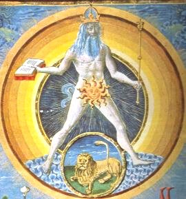
FIGURE XVI
(Sol, De sphaera, bibliothèque Estense de la maison d'Este, Modène, XVe siècle)de l'or, le plus éclatant et le roi des métaux, avec la lumière jaune du soleil, le dominateur du Ciel. La plus ancienne indication que l'on possède à cet égard se trouve dans Pindare. La cinquième ode des Isthméennes débute par ces mots :
"Mère du soleil, Thia, connue sous beaucoup de noms, c'est à toi que les hommes doivent la puissance prépondérante de l'or."
Dans Hésiode, Thia est une divinité qui est, nous l'avons dit, mère du soleil et de la lune, c'est-à-dire génératrice des principes de lumière. Le papyrus de Leide [IIIe siècle av. J.-C.] permet de comparer les signes et abréviations des planètes avec les signes des alchimistes et le signe de l'or est le même que le signe astronomique du soleil ; c'est le plus vieil exemple connu de cette identification. A l'article Soleil du Dictionnaire mytho-hermétique de Dom Pernety, nous trouvons :
Chez les chymistes le Soleil est l'or vulgaire. Les Philosophes appellent soleil leur soufre, leur or. Le Soleil des Sages de source mercurielle, est la partie fixe de la matière du grand oeuvre, et la Lune est le volatil ; ce sont les deux dragons de Flamel. Ils appellent encore Soleil le feu inné dans la matière. Comme le volatil et le fixe sont tirés de la même source mercurielle, les Philosophes disent que le Soleil est le père, et la Lune la mère de la pierre des Sages. Quelquefois ils l'entendent à la lettre quand ils parlent de la matière éloignée de l'oeuvre, parce qu'il s'agit alors de cette vapeur que le Soleil et la Lune céleste semblent former dans l'air, d'où elle est portée dans les entrailles de la terre pour y former la semence des métaux, qui est la propre matière du grand oeuvre. Les Adeptes ont donné par similitude et par allégorie les noms d'arbre solaire et d'arbre lunaire au soufre rouge, et au soufre blanc qu'ils font parvenir à la perfection de leur poudre de projection [...] et l'Arbre est aussi le nom que les philosophes ont donné à la matiere première de la pierre philosophale, parce qu'elle est végétative. Le grand arbre des Philosophes, c'est leur mercure, leur teinture, leur principe, et leur racine ; quelquefois c'est l'ouvrage de la pierre. Un auteur anonyme a fait à ce sujet un traité intitulé: de l'arbre Solaire, de Arbore solari. On le trouve dans le 6ème tome du Théatre Chymique. Le Cosmopolite dans son Enigme adressée aux enfants de la vérité, supose qu'il fut transporté dans une île ornée de tout ce que la nature peut produire de plus précieux, entr'autres de deux arbres, l'un Solaire et l'autre Lunaire, c'est-à-dire, dont l'un produirait l'or, et l'autre de l'argent.Mais le soleil, de jaune qu'il est, peut devenir noir. Pernety nous dit :"Presque tous les disciples d'Hermès donnent à leur pierre ignée le nom de soleil ; et lorsque dans la dissolution du second oeuvre, la matière devient noire, ils l'appellent soleil ténébreux ou éclipse de soleil, Raymond Lulle en parle très souvent dans es ouvrages. [...]"
et cela nous permet de mieux comprendre pourquoi le Soleil et Saturne sont si proches en alchimie : la grande éclipse de Lune et de Soleil est ce Saturne hermétique, ce Cronos qui dévore sa progéniture. Parler du soleil, on l'a vu, c'est parler du Soufre rouge et donc, c'est évoquer les principes métalliques. La diversité du soufre et du mercure [cf. section sur le Mercure de nature], plus ou moins purs, et plus ou moins digérés, leur union et leurs différentes combinaisons forment la nombreuse famille du règne minéral. Les pierres, les marcassites, les minéraux diffèrent encore entre eux suivant la différence de leurs matrices et le plus ou moins de cuisson ; c'est ce que nous avons appris de Beaumont dans une note sur les Emanations volcaniques. Dom Pernety nous dit encore :
il n'y a aussi qu'un seul esprit fixe, composé d'un feu très pur, et incombustible, qui fait sa demeure dans l'humide radical des mixtes [...] L'or est humecté, réincrudé, volatilisé et soumis à la putréfaction par l'opération du mercure : et celui-ci est digéré, cuit, épaissi, desséché et fixé par l'opération de l'or philosophique, qui le rend par ce moyen une teinture métallique. L'un et l'autre sont le mercure et le soufre philosophique. Mais ce n'est pas assez qu'on fasse entrer dans l'oeuvre un soufre métallique comme levain, il en faut aussi un comme sperme ou semence de nature sulfureuse, pour s'unir à la semence de substance mercurielle. Ce soufre et ce mercure ont été sageemnt représentés chez les Anciens par deux serpents, l'un mâle et l'autre femelle, entortillés autour de la verge d'or de Mercure. La verge d'or est l'esprit fixe, où ils doivent être attachés. Ce sont les mêmes que Junon envoya contre Hercule, dans le temps que ce héros était encore au berceau.Par là sont évoqués clairement le Soufre rouge [Âme de la Pierre] et le Soufre blanc ou toison de l'or. La verge d'or de Mercure représente le résultat virtuel de la coagulation des deux Soufres, symbolisés par les deux serpents qui s'enroulent autour du caducée de Mercure et cette époque de l'oeuvre correspond à l'éclipse de Lulle. C'est pourquoi, avec raison, Pernety emploie l'expression « esprit fixe » pour qualifier le double Mercure ; S'évaporerait-il ? les deux Soufres n'auraient pas le temps de s'entrelacer...Il faut donc qu'il y ait un lien du Mercure. Et en cela gît l'une des clefs de l'Oeuvre.Ce soufre est l'âme des corps, et le principe de l'exubération de leur teinture ; le mercure vulgaire en est privé ; l'or et l'argent vulgaires n'en ont que pour eux. Le mercure propre à l'oeuvre doit donc premièrement être imprégné d'un soufre invisible [D'Espagnet], afin qu'il soit plus disposé à recevoir la teinture visible des corps parfaits, et qu'il puisse ensuite la communiquer avec usure. Nombre de chymistes suent sang et eau pour extraire la teinture de l'or vulgaire ; ils s'imaginent qu'à force de lui donner la torture, ils lui feront dégorger, et qu'ensuite ils trouveront le secret de l'augmenter et de le multplier, mais [...] il est impossible que la teinture solaire puisse être entièrement séparée de son corps. L'art ne saurait défaire dans ce genre ce que la Nature a si bien uni. S'ils réussissent à tirer de l'or une liqueur colorée et permanente, par la force du feu ou par la corrosion des eaux fortes, il faut la regarder seulement comme une portion du corps, mais non comme la teinture ; car ce qui constitue proprement la teinture, ne peut être séparé de l'or. C'est ce terme de teinture qui fait illusion à la plupart des Artistes. [...] C'est pour ces raisons que d'Espagnet leur conseille de ne pas dépenser leur argent et leur or dans un travail si pénible, et dont ils ne pourraient tirer aucun profit.C'est dans des symboles mixtes, complexes que se sont exprimés les Anciens : les Egyptiens représentaient la matière du grand oeuvre dans leurs hiéroglyphes sous la forme d'un boeuf qui était à la fois le symbole d'Osiris et d'Isis, qu'on supposait être frère et soeur, époux et épouse et l'un et l'autre petit-fils du Ciel [Ouranos] et de la Terre [Gaïa]. Le Soufre rouge est représenté par Flamel comme un dragon aptère pour signifier le principe fixe ou mâle et c'est le même type de dragons que les Egyptiens ont peints en cercle, la tête mordant la queue pour dire qu'ils étaient sortis d'une même chose, et qu'elle se suffisait à elle-même. Ce sont ces dragons que les Philosophes chymiques ont mis à garder sans dormir les pommes dorées du jardin des Hespérides et ce sont les mêmes sur lesquels Jason, dans la Toyson d'or, versa le jus préparé par Médée ; il n'y a point d'alchimiste qui n'en ait parlé depuis les écrits hermétiques jusqu'à Fulcanelli en passant par Artephius, Morienus, Philalèthe, etc. Ce sont aussi ces serpents, signifiant les deux natures métalliques, qu'Hercule -l'Artiste- doit étrangler dans son berceau, c'est-à-dire vaincre et tuer, pour les dissoudre [putréfaction] au début du 3ème oeuvre, dans la phase de dissolution afin qu'ils puissent engendrer [résurrection] un Roi nouveau dans la suite du 3ème oeuvre. C'est ce que Fulcanelli laissait entendre en disant que la phase humide était suivie d'une phase sèche [assation] et ce, dans le cadre de la voie sèche. Flamel dit :"...qu'il faut les faire pourrir et corrompre. Etant donc mis ensemble dans le vaisseau du sépulcre, ils se mordent tous deux cruellement, et par leur grand poison [ioV] et rage furieuse, ne se laissent jamais depuis le moment qu'ils sont pris et entresaisis [si le froid ne les empêche] que tous deux de leur bavant venin et mortelles blessures, ne se soient ensanglantés par toutes les parties de leurs corps, et finalement s'entretuant, ne se soient étouffés dans leur venin propre, qui les change après leur mort, en eau vive et permanente [...] Ce sont ces deux spermes masculin et féminin, décrits au commenceemnt de mon Sommaire philosophique, qui sont engendrés [dit Rasis, Avicenne, et Abraham Juif] dans les reins, entrailles, et des opérations des quatre éléments..." [Fables, t.I, p. 152]
Par là est commentée l'opération qui consiste à introduire les natures métalliques dans le vase de nature. Nous ajouterons que par la voie sèche, celle de l'Arcanum duplicatum, les natures doivent être introduites sous une apparence divine. Au plan mythologique, voici les correspondances :
Le Soleil, en grec hlioVLe Soleil ou Hèlios, fils d'Hypérion
[Hypérion, fils d'Uranus et frère de Saturne, épousa Théia, selon Hésiode, et fut père du Soleil et de la Lune. Selon d'autres poètes, il épousa Basilée, sa soeur, dont il eut un fils et une fille, Hélios et Séléné, tous deux remarquables par leur beauté et leur vertu, ce qui attira sur Hypérion la jalousie des autres Titans. Ceux-ci, ayant conspiré entre eux, convinrent de tuer Hypérion et de noyer ses enfants. Souvent Hypérion est pris pour le Soleil lui-même dans Homère et d'autres poètes]
et de Basilée [Théia], fut noyé dans l'Éridan par les Titans, ses oncles [il a donc un destin commun avec Phaéton qui est son fils]. Basilée, cherchant le long du fleuve le corps de son fils, s'endormit de lassitude, et vit en songe Hélène qui lui dit de ne pas s'affliger de sa mort, qu'ïl était mis an rang des dieux, et que ce qui s'appelait autrefois, dans le ciel, le feu sacré, s'appellerait désormais Hélios ou le Soleil. Les Grecs et les Romains l'appellent très souvent Phébus et Apollon. Cependant, les anciens poètes font ordinairement une distinction entre Apollon et le Soleil, et, reconnaissent en eux deux divinités différentes. Ainsi Homère, dans l'adultère de Mars et de Vénus, dit qu'Apollon assista à ce spectacle, comme ignorant le fait ; et que le Soleil, instruit de toute l'intrigue, en avait donné connaissance à Vulcain.
Hèlios s'éprit d'un vif amour pour Rhodos, fille de Neptune et de Vénus, et nymphe de l'île à laquelle il donna son nom. Il eut de cette nymphe sept fils, les Héliaques, qui se partagèrent l`île de Rhodes. Cette île fut consacrée au Soleil, et ses habitants, qui se disaient descendants des Héliaques, se vouèrent particulièrement à son culte. Ce dieu aima encore et épousa Perséis ou hersa, fille de Téthys et de l'Océan ; il en eut Éétés, Persé, Circé et Pasiphaé. Le culte du Soleil était répandu dans tout le monde ancien. Les Grecs l'adoraient et juraient, au nom de cet astre, entière fidélité à leurs engagements. Sur une montagne près de Corinthe, il y avait plusieurs autels consacrés au Soleil, et, après les guerres médiques, les habitants de Trézène dédièrent un autel à Hèlios libérateur.
Chez les Égyptiens, le Soleil était l'image même de la divinité. Une ville tout entière lui était consacrée, Héliopolis. Ovide s'est plu à faire la description du palais du Soleil : c'est un séjour de cristal, de diamant, de pierres et de métaux précieux, tout resplendissant de lumière : le dieu siège sur un trône plus riche et plus brillant encore que le reste du palais : telle est la lumière qui étincelle et jaillit de toutes parts, que l'oeil d'un mortel n'en saurait soutenir l'éclat. Hélios, dans son appareil de splendeur, monté le matin sur son char attelé de chevaux qui ne respirent que le feu et l'impatience, et il s'élance dans le ciel par sa route accoutumée, dès que l'Aurore [Vénus, Messager du soleil] lui a ouvert les portes du Jour. S'il lui arrive parfois d'être en retard, c'est, disent les poètes, qu'il s'est oublié dans la couche de Thétis, fille de Nérée, la plus belle des nymphes de la mer. Le soir, il descend au sein des ondes afin de goûter un repos bien mérité, pendant que ses chevaux répareront aussi leurs forces, afin de recommencer bientôt aprés leur course quotidienne avec une nouvelle ardeur.
On le représente d'ordinaire sous les traits d'un jeune homme à la chevelure blonde, au visage brillant et empourpré : il est couronné de rayons,et parcourt le Zodiaque sur un char tiré par quatre chevaux. Les anciens le représentaient encore par un oeil ouvert sur le monde.
¯Puisque nous en sommes au Soleil, il est convenable que nous parlions ici des comètes en les reliant à l'Art sacerdotal. Nous avons très brièvement évoqué les comètes par une évocation de Newton dans la section des Gardes du corps de François II. L'étude de la comète n'est pas séparable de celle du soleil, car si on y réfléchit bien, la comète possède une partie fixe et une partie volatile ; elle exprime donc à sa manière un symbolisme fort intéressant : c'est d'abord, au vrai, la Lumière sortant par soy-même des Ténèbres
[titre d'un ouvrage alchimique : véritable Théorie de la Pierre des Philosophes écrite en vers Italiens et amplifiée en Latin par un Auteur anonyme, en forme de commentaire, Bibliothèque des Philosophes chimiques, t. III, 1740 ; attribué à Crasselame et traduit par Bruno de Lanssac]
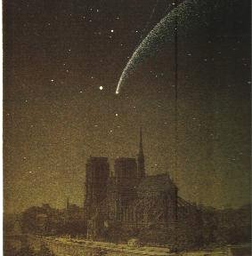
FIGURE XVII
(alliage hermétique : Notre-Dame de Paris et la comète, Archives Gallimard)De tous les astres, les comètes devaient apparaître aux Anciens comme les plus singuliers et les plus étranges. Ces corps sont restés peu connus jusqu'à 1986, date où une sonde est passée près de la comète de Halley. Les comètes paraissent surgir des profondeurs de l'espace, venant d'une direction quelconque, pour s'enfuir et disparaître dans une autre...Une comète est couramment représentée comme une grosse étoile ornée d'une queue plus ou moins brillante et large. Déjà, nous lui trouvons des traits -au sens propre du terme- qui sont conformes à la cabale : l'étoile signale son caractère fixe tandis que sa queue ou traînée signale sa nature mercurielle, augmentée par sa nature fugitive. Les queues des comètes sont toujours dirigées à l'opposé du Soleil, que la comète parvienne à l'astre ou qu'elle s'en éloigne. C'est à Kepler, en 1617, que l'on doit la première explication vraiment rationnelle et nous verrons que cette explication s'accorde bien aussi avec l'idée hermétique de l'astre et de sa chevelure. Kepler considéra que ces curieuses formations procèdent d'une force répulsive -nous trouvons là l'équivalent de l'aimant des Anciens, mais comme inversé- agissant sur la matière gazeuse -c'est-à-dire sur l'Esprit- de la tête pour en chasser les éléments - ainsi, la traînée de la comète ne correspond-elle qu'à une longue agonie : c'est l'équivalent du Caput mortuum de l'Oeuvre. Voila rassemblés les principaux éléments cométaires sur lesquels nous allons à présent nous attarder. Le « souffle » ou vent solaire [est-ce Borée ou Zéphyre ?] donne ainsi naissance aux queues par la pression de radiation exercée par la lumière sur les molécules des gaz hermétiques. Comprend-on ici la beauté poétique qui se dégage de l'analogie entre la lumière astrale et la lumière de la comète ? Car il s'agit plus que d'une lumière réfléchie pour des corps de nature passive et mercurielle comme la Lune, Vénus et...Mercure. Cette activité que l'on trouve dans la queue de la comète n'est compatible qu'avec la présence d'un élément soufré important ; l'astrophysique moderne pourra-t-elle nous éclairer à ce sujet et nous renvoyer le miroir de la vérité alchimique ? C'est à voir. Le mois de mars 1986 est une date importante dans l'histoire de l'astronomie planétaire : une armada de sondes spatiales rencontra la comète de Halley. Le but de ce rendez-vous était ambitieux : il s'agissait pour la première fois d'analyser les gaz et les poussières au voisinage immédiat de la comète et de photographier son noyau, ce minuscule corps caché dans la tête de la comète. Les analyses ont donc porté sur les parties fixe et volatile de la comète. Les poussières de Halley sont révélatrices de la partie non volatile. Initialement mêlés à la glace du noyau, les grains de poussière sont arrachés lorsque la glace se sublime et que les gaz se dilatent. D'un côté, la poussière s'est avérée être un mélange d'une substance légère formée d'hydrogène, de carbone, d'azote et d'oxygène [partie volatile] et d'un matériau lourd, pierreux, constitué principalement de magnésium, de silicium, de fer et d'oxygène [Soufre rouge et lien du Mercure]. De l'autre côté, le noyau, partie entièrement fixe, quoique fusible, fut dévoilé. Ce fut le moment le plus passionnant du voyage de la sonde Giotto vers la comète de Halley. Avant 1986, on n'avait jamais observé de noyau cométaire, car ceux-ci [à l'image du Soufre hermétique] sont petits et cachés par les chevelures. Les missions de 1986 ont confirmé la théorie élaborée il y a près de 40 ans par l'astrophysicien américain Fred Whipple : celle de la « boule de neige sale ». Cett théorie est en partie confirmée : le noyau de la comète est irrégulier et criblé de cratères : il en jaillit des jets brillants de gaz et de poussières. En outre, le noyau est formé de trois types de composés : les glaces, des pierres et un matériau léger, réfractaire et renfermant probablement des polymères organiques.
Les comètes sont d'une grande importance dans l'étude de l'origine du système solaire ; elles sont formées de matière ancienne, révélatrice des conditions qui régnaient lors de la formation du système et l'hypothèse la plus vraisemblable est qu'au début de l'histoire de notre système, il y avait un nombre extrêmement important de ces corps qui ont contribué à former les planètes par des phénomènes d'accrétion successifs ; il y a plus : on pense que les premières molécules organiques n'ont pas une origine terrestre mais céleste et que ce seraient les comètes qui auraient ainsi « fécondé » en quelque sorte les planètes. Seule, la Terre possédait des caractéristiques permettant le développement de la vie végétale et animale...Certaines des visites des comètes sont mémorables. C'est une comète qui, en 1066, fut considérée par les Normands comme un présage de la victoire de Hastings, qui donna le royaume d'Angleterre au duc Guillaume. Cette histoire nous permet de revenir sur la tapisserie de Bayeux et le roi Harold que nous avons examiné dans la section des blasons alchimiques.
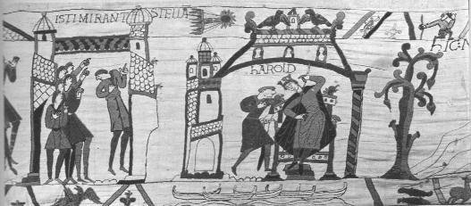
FIGURE XVIII
(détail de la tapisserie de Bayeux -musée de la Reine-Mathilde- où est représentée la comète de Halley)Cette comète fut considérée comme un présage funeste pour le roi Harold qui fut vaincu et tué en 1066, à Hastings. C'est aussi le passage de la comète de Halley en 1301 qui inspira Giotto pour peindre, dans la chapelle des Scrovegni à Padoue, l'étoile des rois Mages au-dessus de la crèche de Bethléem. C'est encore dans la comète de Halley que les pays chrétiens virent, en 1456, un terrible présage ; en effet, trois auparavant, les Turcs avaient conquis Constantinople, détruisant définitivement le vieil empire romain d'Orient. La comète apparut alors comme un signe de la colère divine et on a même affirmé que le pape Callixte III, pour conjurer cette funeste manifestation, décréta que les cloches sonneraient tous les jours à midi et que le peuple se rassemblerait pour réciter la prière de l'Angélus, réservée jusque-là au matin et au soir.
Nous avons vu que les comètes, surgies de nulle part, illustraient avec une rare pertinence le titre d'un ouvrage d'alchimie, la Lumière sortant par soy-même des Ténèbres. Voici un exrtait du Chant premier de ce livre :
"Le Chaos ténébreux étant sorti comme une masse confuse du fond du Néant, au premier son de la Parole toute-puissante, on eût dit que le désordre l'avait produit, et que ce ne pouvait être l'ouvrage d'un Dieu, tant il était informe. Toutes choses étaient en lui dans un profond repos, et les éléments y étaient confondus, parce que l'Esprit divin ne les avait pas encore distingués."
La comète apparaît ainsi comme un opérateur du désordre. Pline, dans son Histoire Naturelle, rapporte que les comètes sont des astres qui sèment la terreur. Les peuples d'Egypte et d'Ethiopie [deux terres alchimiques largement évoquées par Dom Pernety dans ses Fables] en connurent une à laquelle le roi Typhon donna son nom. D'apparence ignée et enroulée en spirale, elle était si terrible à voir que c'était moins une étoile qu'un noeud de feu. Cette comète possédait donc des caractères attestant ainsi de sa nature mercurielle et chimérique. Nous avons déjà insisté sur l'importance symbolique de Typhon [1,2,3,4], anagramme de Python [1,2,3,4], serpent que Cadmus cloue contre le chêne. Voici ce que Pernety nous dit de Typhon [Fables, chap. VI] :
Diodore fait naître Typhon des Titans. Plutarque le dit frère d'Osiris et d'Isis ; quelques autres avancent qu'il naquit de la Terre, lorsque Junon irritée la frappa du pied ; que la crainte qu'il eut de Jupiter, le fit sauver en Egypte, où ne pouvant supporter la chaleur du climat, il se précipita dans un lac où il périt [nous gagerions qu'il s'agit de l'un des neuf lacs situés dans le désert de Thaïat, ou de Saint-Macaire, à l'ouest du Delta, où l'on rencontre le natron.] Hésiode nous en fait une peinture des plus affreuses [Théog.], qu'Appollore semble avoir copiée. La Terre, disent-ils, outrée de fureur de ce que Jupiter avait foudroyé les Titans, se joignit avec le Tartare, et faisant un dernier effort, elle enfanta Typhon. Ce monstre épouvantable avait une grandeur et une force supérieure à tous les autres ensemble. Sa hauteur était si énorme, qu'il surpassait de beaucoup les plus hautes montagnes, et sa tête pénétrait jusqu'aux astres. Ses bras étendus touchaient de l'orient à l'occident, et de ses mains sortaient cent dragons furieux, qui dardaient sans cesse leur langue à trois pointes. Des vipères sans nombre sortaient de ses jambes et de ses cuisses, et se repliant par différentes circonvolutions, s'étendaient sur toute la longueur de son corps, avec des sifflements si horribles, qu'ils étonnaient les plus intrépides. Sa bouche n'exhalait que des flammes ; ses yeux étaient des charbons ardents, avec une voix plus terrible que le tonnerre ; tantôt il meuglait comme un Taureau, tantôt il mugissait comme un lion et quelquefois il aboyait comme un chien. Tout le haut de son corps était hérissé de plumes, et la partie inférieure était couverte d'écailles [...] son mariage avec Echidna [1,2,3,4,5], le rendit père de divers monstres, dignes de leur origine, tels que la Gorgone [1,2,3,4,5,6,7], le Cerbère [1,2], l'Hydre de Lerne [1], le Sphinx [1], l'aigle qui dévorait le malheureux Prométhée [1], les Dragons gardiens de la Toison d'or [1] et du Jardin des Hespérides [1,2,3,4,5,6,7], etc.[...] Typhon était frère d'Osiris ; qu'il le persécuta jusqu'à le faire mourir de la façon dont nous l'avons dit ; qu'il fut ensuite vaincu par Isis, secourue par Horus ; et qu'il périt enfin par le feu. Les historiens rapportent aussi que les Egyptiens avaient la Mer en abomination, parce qu'ils croyaient qu'elle était elle-même Typhon [nous venons de voir plus haut que Typhon semble né de la Terre et du Tartare : c'est ainsi que les alchimistes décrivent leur Mercure] et l'appelaient écume ou salive de Typhon [Kich. Obélis. Pamph.], noms qu'ils donnaient aussi au sel marin. Pythagore, instruit par les Egyptiens, disait que la Mer était une larme de Saturne. La raison qu'ils en avaient, était que la Mer, selon eux, était un principe de corruption, puisque le Nil qui leur procurait tant de biens, se viciait par son mélange avec elle. Ces traditions nous apprennent encore que Typhon fit périr Orus dans la Mer où il le précipita, et qu'Isis sa mère le ressuscita après l'en avoir retiré. [...] il n'est pas difficile de concevoir pourquoi on faisait de Typhon un monstre effroyable, toujours disposé à faire du mal, et qui avait l'audace même de faire la guerre aux Dieux. Les métaux abondent en ce soufre impur et combustible, qui les ronge en les faisant tourner en rouille chacun dans son espèce. les dieux avaient donné leurs noms aux métaux ; et c'est pourquoi Hérodote dit que les Egyptiens ne comptaient d'abord que huit grands Dieux, c'est-à-dire les sept métaux, et le principe dont ils étaient composés. Typhon était né de la terre, mais de la terre grossière, étant le principe de la corruption.Mais, nous dira-t-on, quel rapport entre Typhon et la comète ? Posons d'abord que Typhon est le principe de corruption, c'est-à-dire un agent capable de former de la rouille. Quest-ce que la rouille ? Le produit de la corrosion des métaux ferreux, constitué principalement d'oxyde de fer, et qui se forme facilement au contact de l'air humide, c'est-à-dire de l'air où entre en jeu de la vapeur d'eau et de l'acide carbonique : ainsi se forme le rubigo ou ferrugo, ioV, c'est-à-dire l'oxyde de fer hydraté et les sels basiques de même teinte. A l'état anhydre, le rubigo devient le colcothar du Moyen Âge, qui est à proprement parler le résidu de la calcination des sulfates de fer ; ce processus de calcination, sur le plan hermétique, trouve son exacte traduction dans la chute de l'Ange comme nous l'avons expliqué dans la section sur la réincrudation. Les écailles de Typhon correspondent au Saquama des Romains, c'est-à-dire à l'écaille tirée des armes pendant leur fabrication « ex acie aut mucronibus », [Pline, Hist. Nat., XXXIV, 45]. Quest-ce que l'acide carbonique ? L'esprit universel des Anciens, confondu ensuite avec l'acide vitriolique. Cet acide carbonique, Esprit universel, était aussi appelé par les Anciens l'air fixe. Il peut être facilement obtenu en versant de l'huile de vitriol sur la pierre calcaire dont le symbole est la Terre ou stibium de Tollius. L'analyse des gaz par la sonde Giotto, dans sa traversée de la chevelure, a permis de montrer que le noyau éjectait 20 tonnes de gaz par seconde [masse totale du noyau évaluée à 100 milliards de tonne] et les informations fournies par le spectromètre indiquent que le gaz contient 80 % d'eau, 10 % de monoxyde de carbone, 3 % de dioxyde de carbone, etc. On est donc en droit de penser que la chevelure de la comète peut être [avec un grain de cabale] comparée à l'Esprit universel des Anciens. Nous avons également insisté sur la nature mercurielle de ce gaz. La figure suivante permettra de mieux visualiser cette réflexion.[nous saisissons ainsi que le principe qu'évoque Pernety, la rouille, dont l'équivalent en cabale est la grenade, joue un rôle fondamental dans l'oeuvre à sa 3ème époque, là précisément où les natures métalliques sont infusées dans le dissolvant. Le principe dont parle Pernety et qui compose les métaux n'est autre que la quintessence que nous avons évoquée à la section Matière]
[...] Les plumes qui couvraient la partie supérieure du corps de Typhon, et la hauteur qui portait sa tête jusqu'aux nues, indiquent sa volatilité et sa sublimation en vapeurs. Ses cuisses, ses jambes couvertes d'écailles et les serpents qui en sortent de tous côtés, sont le symbole de son aquosité corrompante et putréfactive. Le feu qu'il jette par sa bouche, marque son adustibilité corrosive et désigne sa fraternité prétendue avec Osiris, parce que celui-ci est un feu caché naturel et vivifiant, l'autre est un feu tyrannique et destructif. C'est pourquoi d'Espagnet l'appelle le tyran de la Nature, et le fratricide du feu naturel, ce qui convient parfaiteemnt à Typhon. Les serpents sont chez les Philosophes l'hiéroglyphe ordinaire de la dissolution et de la putréfaction ; aussi convient-on que Typhon ne diffère point du serpent Python, tué par Apollon. On sait aussi qu'Apollon et Horus étaient pris pour le même Dieu. [...] Les uns disent que Typhon se jeta dans un marais où il périt ; d'autres qu'il fut foudroyé par Jupiter, et qu'il périt par le feu. Ces deux genres de mort sont bien différents ; et il n'y a que la Chymie Hermétique qui puisse accorder cette contradiction ; Typhon y périt en effet, et par l'eau et par le feu en même temps : car l'eau Philosophique, ou le menstrue fétide, ou la mer des Philosophes, qui n'est qu'une même eau formée par la dissolution de la matière, est aussi un marais, puisqu'étant enfermés dans le vase elle n'a point de cours. Cette eau est un vrai feu, disent presque tous les Philosophes, puisqu'elle brûle avec bien plus de force et d'activité que ne fait le feu élémentaire. Les Chymistes brûlent avec le feu, et nous brûlons avec l'eau, disent Raymond Lulle et Riplée. Notre eau est un feu, ajoute ce dernier [12 Portes], qui brûle et tourmente les corps bien plus que le feu d'enfer.
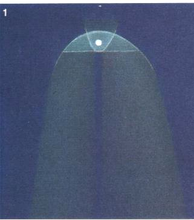
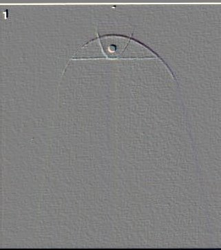
FIGURE XIX
(image de la comète West, 1975, représentée d'après l'observation au téléscope à gauche ; à droite avec un filtre d'estampage)On remarque un cercle qui s'apparente au point fixe du soleil, à la pointe du compas et qui figure aussi le globe de Vénus. Ce cercle est entouré par le bas d'une courbe en forme de parabole où l'on peut deviner un croissant : il ne faut donc pas beaucoup d'imagination pour voir ici l'équivalent d'un symbole mercuriel.
Le premier homme à observer Mars avec un instrument fut Galilée ; en 1610, il décrivit dans son journal le disque et les phases de la planète. Mars, astre de couleur rouge, est inséparable d'Arès et sa symbolique apparaît beaucoup moins simple que la juxtaposition au dieu de la destruction. Le Mars primitif protégeait au contraire la végétation et assurait son épanouissement. Une fête lui était consacrée au cours du moi qui porte son nom, alors que le soleil traverse le signe du Bélier à l'équinoxe de Printemps. Les mythographes ont montré que les fêtes de Mars se déroulaient au moment où les armées cessent d'hiverner et où les combats reprennent. Nous avons eu l'occasion de montrer que Mars dissimulait avant tout les vitriols, dans sa représentation hermétique ; l'examen de ces vitriols montre qu'on peut aussi bien attribuer une couleur rouge, verte ou bleue, même parfois blanche à Mars. Mais c'est surtout du vitriol vert que l'on se sert, en combinaison avec le sel de potasse, voilé sous la figure de Vénus-Aphrodite. Quand on examine les mouvements combinés de Mars et de la Terre et en prenant comme origine le moment où l'alignement des deux planètes sera tel que Mars, en opposition, se trouvera vers le périhélie, c'est-à-dire au point le séparant de nous au minimum, le cycle complet représente une période de quinze ans environ,
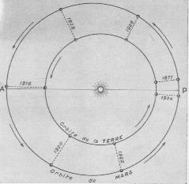
FIGURE XX
(relations entre les orbites de Mars et de la Terre ; extrait de l'Astronomie L. Rudaux et G. de Vaucouleurs, Larousse, 1948)pendant laquelle se produisent six oppositions, entre les deux périhéliques. La longitude du noeud ascendant de Mars est de 18° dans le Taureau, ce qui le place à peu de distance de celui de Mercure. La combinaison de Vénus -ou si l'on préfère de la Terre hermétique- et de Mars donne naissance à un minéral qui s'appelle le gypse ou pierre du Levant ou encore pierre de Jésus. il s'agit donc d'un vitriol calcaire, qui se présente en stalactites et en grands morceaux cristallisés dans toutes les carrières de plâtre. Nous en avons longuement parlé dans diverses sections [index] et n'y reviendrons pas ici. Redisons seulement que l'équivalent du gypse est la terre de Samos dont on en extrait deux substances : le Soufre blanc et le principal composant du Mercure. Dom Pernety nous parle ainsi du Bélier qui, chacun le sait, est la maison zodiacale de Mars [Fables, chap. VIII]:
La nature du Bélier qu'on regardait comme chaude et humide, répondant parfaitement au Mercure philosophique, les Egyptiens n'oublièrent pas de mettre cet animal au nombre de leurs principaux hiéroglyphes. Ils débitèrent dans la suite la fable de la fuite des Dieux en Egypte, où ils dirent que Jupiter se cacha sous la forme de Bélier, et l'ayant représenté en conséquence avec une tête de cet animal, ils lui donnèrent le nom d'Amun ou Ammon. Toutes les autres fables que les Anciens ont débitées à ce sujet, ne méritent pas d'être rapportées. Une d'entre toutes suffira pour faire voir qu'elles ne furent inventées en effet que pour indiquer le Mercure des Philosophes. Bacchus, dit-on, étant dans la Libye avec son armée, se trouva extrêmement pressé de la soif, et invoqua Jupiter pour en avoir du secours contre un mal si pressant. Jupiter lui apparut sous la forme d'un Bélier, et le conduisit à travers les déserts à une fontaine où il se désaltéra, et où, en mémoire de cet événement, on éleva un Temple en l'honneur de Jupiter, sous le nom de Jupiter Ammon, et on représenta ce Dieu avec une tête de Bélier. Ce qui confirme mon sentiment, est que cet animal était un des symboles du Mercure. Le Bélier apparaît à Bacchus dans la Lybie ;parce que la Libye signifie une pierre d'où découle de l'eau, de liy, venant de leibw, je distille ; le mercure dont la nature est chaude et humide ne se forme que par la résolution de la matière Philosophale en eau :Encore faut-il ici bien différencier Arès d'Ariès ; Arès correspond précisément à Mars et c'est la substance qu'il faut aller chercher dans le ventre d'Ariès. Isaac Newton a cru qu'Ariès voilait l'antimoine parce que le soleil est exalté dans le signe du Bélier et que l'antimoine est employé pour purifier l'or. Le Bélier, par ailleurs, est l'image de la toyson d'or qui fait l'objet du voyage de Jason. Arès, dieu de la guerre, est fils de Zeus et d'Héra et c'est un fou qui ne connait pas de loi [c'est le fou de l'oeuvre comme l'appelle Fulcanelli]. Brillamment armé du casque, de la cuirasse, de la lance et de l'épée, il prête donc sa cuirasse à notre chevalier qui doit affronter le dragon au début de l'oeuvre pour en retirer le Caput mortuum. Aphrodite lui est vouée et leur destin est scellé par Héphaïstos comme nous l'avons montré dans d'autres sections [index]. Voici ce que nous enseigne la mythologie grecque au sujet d'Arès :« Cherchez, dit le Cosmopolite [Nov. lum. Chem.], une matière de laquelle vous puissiez tirer une eau qui puisse dissoudre l'or sans violence, et sans corrosion, mais naturellement. Cette eau est notre mercure, que nous tirons au moyen de notre aimant, qui se trouve dans le ventre du Bélier. »
Hérodote dit que Jupiter apparut à Hercule sous la même forme, et que c'est pour cela qu'on consacra le Bélier à ce père des Dieux et des hommes, et qu'on le représente ayant la tête de cet animal. Cette faveur que Jupiter accorda aux instantes prières d'Hercule, caractérise précisément le violent défit qu'ont tous les Artistes Hermétiques de voir le Jupiter Philosophique, qui ne peut se montrer que dans la Libye, c'est-à-dire, lorsque la matière a passé par la dissolution ; parce qu'ils ont alors le mercure après lequel ils ont tant soupiré. [...] L'allégorie de la fontaine a été employée par plusieurs Adeptes, et en particulier par le Trévisan [Philos. des métaux ; cf. aussi Verbum, note 65. Jean de Meun a aussi écrit la Fontaine des amoureux de Science] et par Abraham Juif , dans les figures hiéroglyphiques rapportées par Nicolas Flamel. [...] Le Bélier était une victime que l'on sacrifiait à tous les Dieux, parce que le Mercure, dont il était le symbole, les accompagne tous dans les opérations de l'Art sacerdotal ; mais l'on disait que Mercure, quoique Messager des Dieux, l'était plus spécialement de Jupiter, et en particulier pour les messages gracieux, au lieu qu'Isis n'était guère envoyée que pour des affaires tristes, pour des guerres, des combats, etc. La raison en est toute naturelle pour un Philosophe, qui sait qu'on ne doit entendre par Isis que les couleurs variées de l'arc-en-ciel, qui ne se manifestent sur la matière que pendant la dissolution de la matière, temps auquel se donne le combat du fixe et du volatil.
Mars ou Arès, c'est-à-dire le brave, était fils de Jupiter et de Junon. Les poètes latins lui donnent une autre origine. Jalouse de ce que Jupiter avait mis au monde Minerve (1), sans sa participation, Junon (2) avait voulu, à son tour, concevoir et engendrer. La déesse Flore lui indiqua une fleur qui croissait dans les campagnes d'Olène en Achaïe, et dont le seul contact produisait ce merveilleux effet. Grâce à cette fleur, elle devint mère de Mars. Elle le fit élever par Priape, de qui il apprit la danse et les autres exercices du corps, préludes de la guerre.Les deux fils de Mars, Deimos et Phobos, qui sont les satellites de la planète Mars, ont une portée hermétique certaine. Deimos, d'abord, la Terreur, nous rappelle un caisson de Dampierre-sur-Boutonne représentant une pièce d'artillerie où s'exprime la nature d'Aphrodite. Quant à Phobos, né aussi de la déesse Aphrodite et personnification de la Crainte, il suscite la lâcheté des combattants et les pousse à s'enfuir [c'est-à-dire à se volatiliser]. Mais la richesse de l'analogie ne s'arrête pas là : par un petit trait de cabale, on peut trouver un rapport entre Apollon [joiboV] et Phobos [joboV]. le rapport semble moins évident pour la correspondance entre Artémis et Deimos [la crainte :deoV] mais tuant impitoyablement ceux qui osaient insulter sa personne divine, on peut supposer qu'elle était effectivement fort redoutée.
Les Grecs ont chargé l'histoire de Mars d'un certain nombre d'aventures. Allyrothius, fils de Neptune, ayant fait violence à Alcippe, fille de Mars, ce dieu la vengea en tuant l'auteur du crime. Neptune, désespéré de la mort de son fils, assigna Mars en jugement devant les douze grands dieux de l'Olympe, qui l'obligèrent à défendre sa cause. Il la défendit si bien qu'il fut absous. Le jugement eut lieu sur une colline d'Athènes appelée depuis l' Aréopage (colline de Mars), où s'établit le fameux tribunal athénien.
Ascalaphus, fils de Mars[on connait deux Ascalaphos : le fils d'Arès et d'Astyoché qui périt à Troie sous les coups de Déiphobos, un des fils du roi Priam ; l'un des gardiens de Perséphone qui prétendit que la déesse avait mordu une grenade. Déméter châtia le trop zélé bavard en le transformant en chouette et le hibou, en grec, est homonyme d'Ascalaphos],
qui commandait les Béotiens au siège de Troie, ayant été tué, le dieu courut le venger lui-même, malgré Jupiter qui avait défendu aux dieux de prendre parti pour ou contre les Troyens. Le roi du ciel eut un accès de colère furieuse, mais Minerve l'apaisa, en promettant de soutenir les Grecs. En effet, elle excita Dioméde à se battre contre Mars, qui fut blessé au flanc par la lance de ce héros. C'est Minerve qui avait dirigé le coup. Mars, en retirant l'arme de sa blessure, jette un cri épouvantable, et aussitôt il remonte dans l'Olympe au milieu d'un tourbillon de poussière. Jupiter le gourmande sévèrement, mais ne laisse pas d'ordonner au médecin des dieux de guérir son fils. Péon met sur sa blessure un baume qui le guérit sans peine, car, dans un dieu, il n'y a rien qui soit mortel.
Homère et Ovide ont raconté les amours de Mars et de Vénus. Mars s'était mis en garde contre les yeux clairvoyants de Phébus, qui était son rival auprès de la belle déesse, et avait placé en sentinelle Alectryon, son favori ; mais, celui-ci s'étant endormi, Phébus aperçut les coupables, et courut prévenir Vulcain (3). L'époux outragé les enveloppa dans un réseau aussi solide qu'invisible (4), et rendit tous les dieux témoins de leur crime et de leur confusion. Mars punit son favori, en le métamorphosant en coq (5) :depuis cette époque, cet oiseau tâche de réparer sa faute en annonçant par son chant le lever de l'astre du jour. Vulcain, à la prière de Neptune, et sous sa caution, défait les merveilleux liens. Les captifs, mis en liberté, s'envolent aussitôt, l'un dans la Thrace, son pays natal, l'autre à Paphos, dans sa retraite préférée.
Les poètes donnent à Mars plusieurs femmes et plusieurs enfants. Il eut de Vénus deux fils, Deimos et Phobos (la Terreur et la Crainte) [qui se trouvent être par hasard les deux satellites de Mars], et une fille, Hermione ou Harmonie (6), qui épousa Cadmus. Il eut de Rhéa Romulus et Rémus ; de Thébë, Évadné, femme de Capanée, un des sept chefs thébains ; et de Pirène, Cycnus qui, monté sur le cheval Arion, combattit contre Hercule et fut tué par ce héros. Les anciens habitants de l'Italie donnaient à Mars, pour épouse, Néréine. Ce dieu a pour soeur ou pour femme Bellone. C'est elle qui attelait et conduisait son char ; la Terreur (Deimos) et la Crainte (Phobos) l'accompagnaient. Les poètes la dépeignent au milieu des combats,courant çà et là, les cheveux épars, le feu dans les yeux, et faisant retentir dans les airs son fouet ensanglanté.
Comme dieu de la guerre, Mars est toujours accompagné de la Victoire. Cependant, il n'était pas toujours invincible. Son culte paraît avoir été peu répandu chez les Grecs. On ne parle d'aucun temple élevé en son honneur, et l'on ne cite que deux ou trois de ses statues, en particulier celle de Sparte, qui était liée et garrottée, afin que le dieu n'abandonnât pas les armées durant la guerre.
Mais, à Rome, Mars était tout spécialement honoré. Dès le règne de Numa, il eut au service de son culte et de ses autels un collège de prêtres, choisis parmi les patriciens. Ces prêtres, appelés Saliens, étaient préposés à la garde des douze boucliers sacrés, ou anciles, dont l'un, disait-on, était tombé du ciel. Tous les ans, à la fête du dieu, les Saliens, portant les boucliers, et vêtus d'une tunique de pourpre, parcouraient la ville en dansant et sautant. Leur chef marchait à leur tète, commençait la danse, et ils en imitaient les pas. Cette procession très solennelle se terminait au temple du dieu par un somptueux et délicat festin. Parmi les temples nombreux que Mars avait à Rome, le plus célèbre fut celui qu'Auguste lui dédia sous le nom de Mars Vengeur. On lui offrait comme victimes le taureau, le verrat, le bélier, et, plus rarement, le cheval. Le coq et le vautour (7) lui étaient consacrés. Les dames romaines lui sacrifiaient un coq le premier jour du mois qui porte son nom, et c'est par ce mois que l'année romaine commença jusqu'au temps de J. César.
Les anciens Sabins l'adoraient sous l'effigie d'une lance (Quiris): d'où le nom de Quirinus donné à son fils Romulus, et celui de Quirites employé pour désigner les citoyens romains. Il y avait à Rome une fontaine (8) vénérée et spécialement consacrée à Mars. Néron s'y baigna. Ce mépris des croyances populaires ne fit qu'augmenter l'aversion qu'on éprouvait pour ce tyran. À dater de ce jour, sa santé étant devenue languissante, le peuple ne douta point que, par son sacrilège, il s'était attiré la vengeance des dieux. Les anciens monuments représentent le dieu Mars d'une manière assez uniforrne, sous la figure d'un homme armé d'un casque (9), d'une pique et d'un bouclier (10) ; tantôt nu, tantôt en costume de guerre, même avec un manteau sur les épaules. Quelquefois il porte toute sa barbe, mais le plus souvent il est imberbe, et parfois il tient à la nain le bâton (11) de commandement. Sur sa poitrine on distingue l'égide avec la tête de Méduse (12). Il est tantôt monté sur son char traîné par des chevaux fougueux,tantôt à pied, toujours dans une attitude guerrière. Son surnom de Gravidus signifie : « celui qui s'avance à grand pas ». Notre gravure représente Mars au repos : il a ses armes auprès de lui ; et l'amour, à ses pieds, semble le guetter en vain : il est encore soucieux et à peine remis de ses combats. Le mardi, jour de la semaine, lui était consacré (Martii dies).Jupiter pose des problèmes à l'étudiant en alchimie tant il semble protéiforme. On sait que près de son temple, les chameaux urinaient, ce qui donnait de l'ammoniaque, d'où le nom de cette base. Mais, Jupiter c'est aussi Ammon et alors, il désigne Ariès le signe du Bélier, c'est-à-dire la Toyson de l'or sur laquelle a disserté Salomon Trismosin. Ensuite, Jupiter, c'est AmmoV, le sable. Enfin, Jupiter par Zeus est aussi l'équivalent de l'Esprit universel qui féconde la matière et la foudre qui produit, dans l'embrasement, de l'eau-forte, laquelle a son tour, va contribuer à former du nitre, épithète réservé à Aphrodite par abus de langage...De tous ces Jupiter, quel est le bon ? Quelle est la nature exacte de la substance chimique que voile cet hiéroglyphe sybillin ? Une chose est certaine : Jupiter demeura le plus grand des dieux pendant la durée de l'Antiquité romaine, le souverain du Ciel et de la Terre. Il porta des épithètes suggestifs comme Fulminator, Fulgurator, Tonitrualis, Pluvius, Tonans et le premier de ces épithètes a fait l'objet, d'ailleurs, d'une tentative d'identification de l'identité de Fulcanelli [qui à notre sens a fait long feu]. Identifié à Zeus, c'est d'abord le dieu des phénomènes atmosphériques et il trône en majesté, entouré de ses attributs : l'aigle, la foudre et la victoire. Géant parmi les dieux, Jupiter est aussi géant dans le ciel de l'astronome. Il est particulièrement bien visible dans le ciel d'Hiver et tous les peuples de l'Antiquité ont considéré Jupiter comme l'une des lumières errantes les plus splendides du ciel. Seule Vénus est plus lumineuse mais Vénus ne brille qu'aux crépuscules tandis que Jupiter s'impose dans le ciel de la pleine nuit. Un simple effet de phase apparaît, ce qui traduit un éloignement important du principe mercuriel ; nous sommes ici dans un autre monde et autant Mercure est le serviteur fugitif, autant Jupiter est le maître du jeu. L'aspect de Jupiter, au télescope, permet de repérer imméditement une alternance de bandes contrastées qui ceinturent l'astre et qui disparaissent à partir d'une certaine latitude. On peut donc symboliser ces bandes par une véritable ceinture. Une autre caractéristique, célèbre, est la fameuse tache rouge. Située dans la zone tempérée australe, elle semble flotter comme une île sur un océan. Il a fallu attendre le XXe siècle pour étudier la composition de la planète : on a identifié de l'ammoniac et du méthane et l'hydrogène domine son atmosphère. Celle-ci se rapproche donc beaucoup de celle du soleil et signe une nature non tellurique. En somme, Jupiter eut-il été plus grand, nous aurions un système double comme il en existe très fréquemment dans notre galaxie et, d'ailleurs, on a pu déterminer que Jupiter rayonne de l'énergie, ne faisant donc pas que refléter passivement la lumière. A sa naissance, Jupiter brillait comme une étoile mais sa masse étant inférieure à la masse critique qui aurait permis au globe de se contracter, Jupiter finit par se refroidir et s'effondrer sur lui-même ; c'est heureux puisque si notre système avait été double, les planètes n'auraient pu se former. Jupiter est donc une planète qui semble entièrement fluide, sans aucun noyau solide. Les nuages de
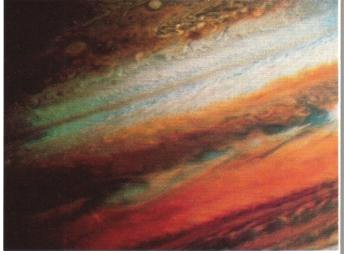
FIGURE XXI
(image de la sonde Voyager I : les couleurs de la voie humide sur Jupiter)l'atmosphère de la planète sont constitués de cirrus d'ammoniac et des couches d'hydrogénosulfure d'ammonium et d'eau caractérisent les niveaux inférieurs. Jupiter est aussi caractérisé par une gamme de couleurs spectaculaire. On ne connait pas les produits responsables de cette couleur mais il se pourrait que la tache rouge, par exemple, soit due à la présence de phosphore rouge. Différentes combinaisons soufrées peuvent être la cause de cette explosion de couleurs et le soufre -nous l'avons vu en examinant le foie de soufre- peut conduire à la formation de polysulfures de couleur jaune, rouge ou brune qui nous indiquent, d'ailleurs, des hypothèses pour expliquer les couleurs observées dans la voie, dite humide, de l'oeuvre. Nous avons dit que l'animal consacré à Zeus était l'aigle. Voyons donc ce que Pernety nous en dit [Fables, chap. IX] :
L'aigle est le roi des oiseaux, et consacré à Jupiter, parce qu'elle fut d'un heureux présage pour ce Dieu, lorsqu'il fut combattre son père Saturne, et qu'elle fournit des armes au même Jupiter, lorsqu'il vainquit les Titans, etc. Son char est attelé de deux Aigles, et l'on ne représente presque jamais ce Dieu sans mettre cet oiseau auprès de lui. Si peu qu'on ait lu les ouvrages des Philosophes Hermétiques, on est au fait de l'idée de ceux qui ont inventé ces fictions. Tous appellent Aigle leur mercure, ou la partie volatile de leur matière. C'est le nom le plus commun qu'ils lui aient donné dans tous les temps. Les Adeptes de toutes les Nations sont d'accord là-dessus. Chez eux le Lion est la partie fixe, et l'Aigle la partie volatile. Ils ne parlent que des combats de ces deux animaux. [...] On a feint avec raison que l'Aigle fut d'un bon augure à Jupiter, puisque la matière se volatilise dans le temps que Jupiter remporte la victoire sur Saturne, c'est-à-dire lorsque la couleur grise prend la place de la noire. Elle fournit par la même raison des armes à ce Dieu contre les titans.C'est au 3ème oeuvre, et par voie sèche, que nous situons cette volatilisation à une haute température [1300°C] ainsi que nous l'avons montré dans la section sur le Mercure. Ces Aigles sont congénaires des Anges ainsi qu'il est relaté dans la Bible :"Tous les quatre avaient une face d'aigle. Leurs ailes étaient déployées vers le haut ; chacun avait deux ailes se touchant et deux ailes lui couvrant le corps ; et ils allaient où l'Esprit les poussait..." [Ezéchiel, I, 10]
L'aigle sert aussi de médiateur avec le Soleil, car lui seul peut sans crainte fixer le Soleil. On ne saurait mieux définir le début de la coagulation de l'eau mercurielle car cette fixation de l'Aigle par le soleil, c'est l'accrétion du Soufre rouge et le début de la volatilisation du Mercure car autant qu'il fixe le soleil, l'aigle s'élève dans sa course et se rapproche peu à peu de cette ionosphère [terre de la rouille] dont nous parle E. Canseliet [Alchimie]. Cette fixation n'est point statique puisque l'aigle s'élève ; elle aquiert alors des qualités dynamiques qui peuvent la faire comparer au Phénix et de fait, les Psaumes font de l'aigle un symbole de régénération spirituelle, comme l'oiseau fabuleux que nous avons évoqué dans la section des blasons alchimiques. L'aigle, par delà les frontières, nous attire jusque dans la mythologie indienne, et surtout l'opposition aigle-serpent mentionnée dans les Vedas. L'aigle est en fait de nature solaire, ennemi des serpents ou plutôt destructeur de serpents. C'est, au vrai, l'époque de la lutte de l'ange contre le démon, que ce 3ème oeuvre et ce pouvoir de destruction du serpent traduit la volatilisation progressive du dissolvant sous la poussée de Vulcain. Encore faut-il savoir appliquer le degré de feu requis, faute de quoi, l'Artiste pourrait bien connaître le sort de Phaéton que l'on a évoqué supra. L'aigle désigne donc, comme d'autres signes hermétiques, non pas une matière mais plutôt une action, ce qui rend plus difficile à traduire le symbolisme qu'il exprime. La relation à l'aétite ou pierre d'aigle est purement fortuite [Pline, Hist. Nat., X, 4 ; XXXI, 39]. Il s'agit d'une variété de fer hydroxylé ou d'argile ferrugineuse, jaune ou rougeâtre, contenant un noyau mobile, qui résonne quand on agite la pierre. Cette pierre, grosse en apparence d'une pierre plus petite, était réputée par analogie avoir une influence sur la grossesse des femmes ; préjugé qui s'est perpétué jusqu'à notre époque [à ce que rapporte Berthelot]. On pensait qu'elle était employée par les aigles dans la construction de leurs aires ; de là, le nom de pierre d'aigle. Le nom d'aétite semble avoir été employé pour toute géode renfermant un noyau mobile. D'après Solin, le son produit par cette pierre était attribué à un esprit ou âme intérieure et Zoroastre regardait l'aétite comme ayant une grande puissance magique. On trouve un passage analogue dans les Alchimistes. Un aigle tenant une pierre exprimait la sécurité chez les Egyptiens, suivant Horapollon [Berthelot, Introduction à la Chimie des Anciens]. La constellation de l'Aigle est bien visible en été ; c'est la disposition d'Altaïr [a Aquilae] et des deux étoiles brillantes [b et g Aql] qui la flanquent, qui a donné l'idée du grand oiseau céleste, déjà décrit par Aratos dans son poème, les Phénomènes. La constellation de l'Aigle abrite un objet qui n'est pas sans éveiller en nous des sentiments qui la rapprochent d'un logis hermétique ; il s'agit d'une étoile qui est considérée comme une source excitatrice d'une vaste région de l'espace dans laquelle les gaz apparaissent littéralement gavés par un flux qui les alimente sans interruption depuis au moins 10000 ans. Cette formation serait analogue à celle de la nébuleuse du Crabe [qui est un reste de super-nova]. Il se pourrait qu'il s'agisse d'un astre compact qui expulse des courants antipodaux en éparpillant autour de lui le plasma incandescent ; c'est peut-être Zeus lui-même qui déverse sa foudre à l'horizon de l'univers...
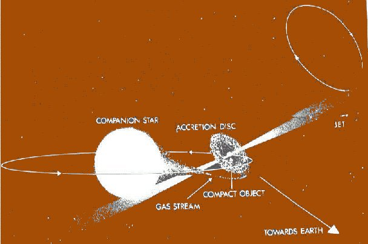
FIGURE XXII
(Schéma du système binaire de SS-433 dont la composante secondaire est une étoile à neutrons
(© Document ESO - site où peut être visualisé cet enfer : http://www.ping.be/gravitation/astrod8.html)Ce schéma du système binaire SS-433 nous montre à quoi peut ressembler la foudre de Zeus. On distingue au centre l'étoile chaude ; un jet de matière la relie à l'object compact, lui-même entouré d'un anneau d'accrétion. Les jets d'émission sont figurés de part et d'autre de l'objet compact et s'éloignent avec une vitesse de 80000 km/s.
Dix années de recherches ont conduit à une interprétation aujourd'hui généralement acceptée de l'étrange système SS-433, tel qu'il est représenté ci-dessus. Ce système se situe à une distance d'environ 5.500 parsec (18.000 années de lumière) dans une région très peuplée de notre Galaxie. Il s'agit d'une étoile double dont les deux composantes, très différentes l'une de l'autre, tournent l'une autour de l'autre en 13 jours. L'objet le plus gros est une étoile chaude ; le plus petit, compact, est entouré d'un disque d'accrétion (matière dense capturée par attraction gravitationnelle) en rotation rapide. L'étoile chaude perd ainsi sa matière et donc de sa masse à un taux très élevé. Chaque année environ un millionième de masse solaire s'en échappe pour être "avalé" par le disque d'accrétion. SS-433 est donc dans une phase de transfert de masse très rapide qui pourrait durer quelques millions d'années au plus, peut-être même beaucoup moins.
Les atomes d'hydrogène qui sont à l'origine des intenses raies d'émission dans le spectre de SS-433, appartiennent à deux jets étroits de matière qui s'éloignent de part et d'autre de l'objet compact avec des vitesses de 80.000 km/sec. On pense que deux canaux sont créés dans des directions opposées près de l'axe de rotation du disque d'accrétion. C'est dans ces canaux que circulent les jets, accélérés sous l'impulsion de fort processus énergétiques.
Ces jets ne sont pas fixes mais animés d'un mouvement de précession tout comme le mouvement conique très lent, effectué par l'axe de rotation de la Terre autour d'une position moyenne correspondant à une direction normale au plan de son orbite autour du Soleil. Ce mouvement conique terrestre s'effectue en 26.000 ans. Par comparaison, la précession de SS-433 se fait en 163 jours.
Les vitesses mesurées des raies d'émission sont expliquées par la théorie de la Relativité d'Einstein. Cette interprétation a été confirmée par des observations radio haute résolution de la structure des jets ainsi que leur mouvement de précession.
Par ailleurs, des observations radio et aux rayons X ont aussi révélé l'interaction de ces jets avec la nébuleuse W50 qui entoure SS-433. Il apparaît maintenant que cette nébuleuse est le reste gazeux d'une ancienne supernova et que l'objet issu de son explosion est bien l'objet compact de SS-433.
La masse de l'objet compact
Le modèle de SS-433 que nous venons de décrire comporte un "moteur" central, hautement énergétique, qui est à l'origine des jets de matière. C'est évidemment d'un grand intérêt du point de vue de l'astrophysique que de découvrir la vraie nature de cet objet compact.Il existe, ou, plus exactement, on connaît deux types d'objets compacts capables de fournir l'énergie nécessaire à de telles accélérations de matière : un trou noir ou une étoile à neutrons. L'un et l'autre peuvent être le résultat de l'explosion d'une supernova.
Dans les deux cas, des quantités énormes d'énergie sont libérées quand la matière du disque d'accrétion tourne en spirale à une vitesse qui augmente vers la surface de l'objet compact.
Comment déterminer si on a affaire à l'un ou à l'autre ? Un seul moyen existe : la "pesée" de l'objet compact. Si la masse de cet objet est inférieure à environ trois masses solaires, il s'agira très probablement d'une étoile à neutrons.
Dans le second cas, c'est-à-dire si la masse de l'objet est supérieure à trois masses solaires, l'objet deviendrait instable et s'effondrerait rapidement en un trou noir qui, comme on le sait sans doute, est une matière en effondrement gravitationnel irréversible et en contraction indéfinie dont le champ de gravitation est si intense que rien, même pas la lumière, ne peut s'en échapper.
Cette "pesée" est en principe possible en déterminant avec précision le mouvement orbital des deux composantes de ce système binaire. C'est d'ailleurs de cette manière qu'on a pu déterminer la masse de la Terre, de la Lune et de toutes les planètes du Système solaire et de leurs satellites.
Cependant, cela semble plus difficile dans le cas de SS-33. Il y a peu, les mesures laissaient prévoir des masses de 4 à 10 masses solaires laissant provisoirementt identifier l'objet comme étant un trou noir.
Les résultats obtenus par l'ESO
Profitant d'une instrumentation très perfectionnée et toute récente, quatre astronomes européens travaillant à La Silla au Chili viennent de procéder avec succès à une nouvelle détermination de la masse de l'objet compact de SS-433. Il s'agit de Sandro D'Odorico (ESO), Thomas Oosterloo (ESO, observatorio del Roque de los Muchachos, La Palma Spain), Tomaz Zwitter (University of Ljubljana) et de Massimo Calvani (Observatory of Padova, Italy).Avec la pratique courante de répartition très stricte du temps d'observation sur les grands télescopes, il est normalement impossible de suivre l'évolution d'un objet durant une période suffisamment longue. Cependant la période d'essai du nouvel "Multi-Mode Instrument> (EMMI), couplé au télescope NTT (télescope de nouvelle technologie) de 3,50 mètres, a offert une occasion unique pour effectuer d'excellentes mesures spectrales de SS-433 et ce, durant toute sa période orbitale de 13 jours.
Les astronomes ont ainsi obtenu quinze spectres haute résolution de SS-433 dans l'émission spectrale bleue, centrée sur une raie d'émission de l'hélium ionisé présent dans le disque d'accrétion entourant l'objet compact. Grâce à la haute qualité des données spectrales obtenues à l'aide du nouvel instrument, les astronomes ont pu obtenir des mesures précises des variations de vitesse des ions d'hélium et donc du disque d'accrétion et de l'objet compact central.
Les nouvelles données indiquent clairement l'amplitude précise de la variation de vitesse due au mouvement orbital de l'objet étudié. L'orbite peut ainsi être déterminée. Mieux, le rapport des masses des deux composantes de ce système binaire, rapport qui est déterminé par le recours à la photométrie (mesure des grandeurs relatives au rayonnement d'une source lumineuse), et, grâce aux observations dans le domaine des rayons X antérieures, a conduit à une détermination raisonnablement précise de la masse des deux composantes du système. On trouve 0, 8 masse solaire pour l'objet compact et 3,2 masses solaire pour son volumineux compagnon, l'étoile chaude.
En conclusion, cela signifie que l'objet compact dans SS-433 est suffisamment "léger" pour qu'il s'agisse d'une étoile à neutrons, issue de l'explosion antérieure d'une supernova dans le système SS-433. Il subsiste donc peu de possibilités qu'il soit un trou noir. Le diamètre d'une étoile à neutrons d'une telle masse doit être de l'ordre de 10 km, ce qui lui confère une densité peu imaginable.
La démonstration de la présence d'une étoile à neutrons dans SS-433 est un résultat d'observation important qui a des implications non négligeables pour mieux comprendre l'évolution stellaire avancée. Par contre, cette démonstration n'est pas pour contenter les partisans des trous noirs. Mais, bien sûr, elle n'exclut pas leur existence ailleurs et dans d'autres systèmes binaires célestes.
On aura remarqué que SS-433 nous offre aussi un spectacle de festin cannibale, pas du tout rare dans l'Univers. La grosse étoile chaude, par le transfert d'une partie de sa masse, est lentement "gobée" par sa compagne, véritable prédateur, à qui profite l'intense attraction gravitationnelle. Ce pourrait être l'objet d'un prochain article qui pourait être consacré à la vie et à la mort des étoiles.
(Pierre Bastin
(d'après un document de l'ESO)(Cet article a été publié dans le quotidien liégeois
La Wallonie des samedi 14 et dimanche 15 mars 1992.)
Cet objet extraordinaire se projetant dans la constellation de l'aigle nous a semblé d'un intérêt hermétique assez important pour que nous lui consacrions quelques lignes. Là encore, on pourrait lui appliquer le titre de l'ouvrage supposé de Crasselame : la Lumière sortant par soy-même des Ténèbres. Mais ici, au lieu que par le biais de la comète, elle soit appliquée au Soufre et à l'Esprit universel, c'est au feu élémentaire qu'elle est consacrée. Voyons à présent si la mythologie s'accorde avec cette analogie.
Jupiter, en grec ZeuVMais l'analogie ne s'arrête pas là. L'Anneau du Nibelung, l'un des plus grands chef-d'oeuvre de la musique, va nous permettre de mettre en scène à nouveau Zeus par le truchement de Wotan. Le 1er volet, l'Or du Rhin débute dans l'eau, dans une eau profonde et noire ; apparaissent ensuite les trois ondines, Filles du Rhin ou Nixes : nous y trouvons trois têtes sous le même voile : Cérès, Déméter et Cybèle. Un homme court après les trois Ondines et tente sa chance au fond de l'eau : c'est l'Artiste, notre alchimiste, réduit à un état piteux et ayant les traits d'Alberich, le roi des forgerons. C'est un être maudit qui a des traits lucifériens. Au plus fort de son désespoir, intervient le personnage central, muet et décisif : l'or. Un son cuivré [est-ce le bruit de l'Airain hermétique, du Laiton de B. Valentin ?] signale alors la lueur qui, sur scène, se met à grandir, annonçant la naissance de l'Or des Sages. Albérich, l'homme terrestre, dérobe l'or magique. Changement de décor...Nous voici dans la demeure des dieux, dans les nuages ; mais les Dieux, comme le dormeur du Mutus Liber que s'apprêtent à réveiller deux anges, au son de l'airain, sont assoupis et le soleil [le Soufre] les réveille. Wotan entre en scène ; c'est le roi des Dieux mais il est borgne et regarde l'univers comme la tache rouge de Jupiter regarde le monde. Fricka, la femme de Wotan, voudrait bien retenir son divin mari dans un château merveilleux ; Wotan a donc demandé aux Géants de construire un burg ; l'analogie est évidente : les Géants sont Arès et Lucifer, que l'artiste emploie pour construire son Mercure, c'est-à-dire le Palais du Roi dont l'entrée est marquée, nous disent les textes, par un féroce dragon. Mais Wotan s'est engagé dans un contrat avec les Géants qui est, à vrai dire, peu glorieux : les Géants construiront le burg s'ils recoivent en cadeau Freia, la déesse de la jeunesseJupiter, disent les poètes, est le père, le roi des dieux et des hommes ; il règne dans l'Olympe, et, d'un signe de tète, ébranle l'univers. Il était le fils de Rhéa et de Saturne qui
dévorait ses enfants à mesure qu'ils venaient au monde[déjà, nous voyons une analogie : l'objet SS-433 est formée de deux composants : l'étoile chaude et l'étoile à neutron. On peut la considérer comme l'équivalent de Cronos puisque le jet de matière résulte d'une « aspiration » de la matière de l'étoile chaude par l'étoile à neutron] .
Déjà Vesta, sa fille aînée, Cérès, Pluton, Neptune avaient été dévorés, lorsque Rhéa, voulant sauver son enfant, se réfugia en Crète, dans l'antre de Dicté, où elle donna le jour, en même temps, à Jupiter et à Junon. Celle-ci fut dévorée par Saturne. Quant au jeune Jupiter, Rhéa le fit nourrir par Adrasté et Ida, deux nymphes de Crète, qu'on appelait les Mélisses, et recommanda son enfance aux Curètes, anciens habitants du pays. Cependant, pour tromper son mari, Rhéa lui fit avaler une pierre emmaillotée. Les Mélisses nourrirent Jupiter avec le lait de la chèvre Amalthée et le miel du mont Ida de Crète. Devenu adolescent, il s'associa la déesse Métis, c'est-à-dire la Prudence. Ce fut par le conseil de Métis qu'il fit prendre à Saturne un breuvage dont l'effet fut de lui faire vomir premièrement la pierre qu'il avait avalée, et ensuite tous les enfants engloutis dans son sein.
Avec l'aide de ses frères, Neptune et Pluton, il se proposa d'abord de détrôner son père et de bannir les Titans, celte branche rivale qui faisait obstacle à sa royauté. Il leur déclara donc la guerre ainsi qu'à Saturne. La Terre lui prédit une victoire complète, s'il pouvait délivrer ceux des Titans que son père tenait enfermés dans le Tartare, et les engager à combattre pour lui. Il l'entreprit, et en vint à bout, après avoir tué Canapé, la geôlière, qui avait la garde des Titans dans les Enfers. C'est alors que les Cyclopes donnèrent à Jupiter le tonnerre, l'éclair et la foudre [les jets d'émission de l'étoile à neutron], à Pluton un casque, et à Neptune un trident. Avec ces armes, les trois frères vainquirent Saturne, le chassèrent du trône et de la société des dieux, après lui avoir fait subir de cruelles tortures. Les Titans qui avaient aidé Saturne à combattre furent précipités dans les profondeurs du Tartare [c'est-à-dire le gouffre créé par l'attraction gravitationnelle intense, visualié par le disque d'accrétion] sous la garde des Géants. Après cette victoire, les trois frères, se voyant maîtres du monde, se le partagèrent entre eux : Jupiter eut le ciel, Neptune la mer, et Pluton les Enfers. Mais à la guerre des Titans succéda la révolte des Géants, enfants du Ciel et de la Terre. D'une taille monstrueuse et d'une force proportionnée, ils avaient les jambes et les pieds en forme de serpent, quelques-uns avaient cent bras et cinquante têtes. Résolus de détrôner Jupiter, ils entassèrent Ossa sur Pélion, et l'Olympe sur Ossa d'où ils essayèrent d'escalader le ciel. Ils lançaient contre les dieux des rochers dont les uns, tombant dans là mer, devenaient des îles, et les autres, retombant à terre, formaient des montagnes. Jupiter était dans une grande inquiétude, parce qu'un ancien oracle annonçait que les Géants seraient invincibles, à moins que les dieux n'appelassent un mortel à leur secours. Avant défendu à l'Aurore à la Lune et au Soleil de découvrir ses desseins, il devança la Terre qui cherchait à secourir ses enfants ; et, par l'avis de Pallas, ou Minerve, il fit venir Hercule qui de concert avec les autres dieux, l'aida à exterminer les Géants Encelade, Polybétès, Alcyone, Porphyrion, les deux Aloïdes Éphialte et Otus, Eurytus, Clytius, Tityus, Pallas, Hippolytus, Agrius, Thaon et le redoutable Typhon qui, seul, donna plus de peine aux dieux que tous les autres.
Après les avoir défaits, Jupiter les précipita jusqu'au fond du Tartare, ou, suivant d'autres poètes, il les enterra vivants, les uns dans un pays, les autres dans un autre. Encelade fut enseveli soins le mont Etna. C'est lui dont l'haleine embrasée, dit Virgile, exhale les feux que lance le volcan : lorsqu'il essaie de se retourner, il fait trembler la Sicile, et une épaisse fumée obscurcit l'atmosphère. Polybétès fut enterré sous l'île de Lango, Otus sous I'île de Candie, et Typhon sous l'île d'Ischia.
Selon Hésiode, Jupiter fut marié sept fois ; il épousa successivement Métis, Thémis, Eurynome, Cérès, Mnémosyne, Latone et Junon, sa soeur, qui fut la dernière de ses femmes. Il s'éprit aussi d'amour pour un grand nombre de simples mortelles, et des unes et des autres lui naquirent beaucoup d'enfants qui tous furent mis au rang des dieux el demi-dieux.
Son autorité suprême, reconnue par tous les habitants du ciel et de la terre fut cependant plus d'une fois contrariée par Junon, son épouse. Cette déesse osa même une fois ourdir contre lui une conspiration des dieux. Grâce au concours de Thétis et à l'intervention du terrible géant Briarée, cette conspiration fut promptement étouffée, et l'Olympe rentra dans l'éternelle obéissance.
Parmi les divinités Jupiter tenait toujours le premier rang et son culte était le plus solennel et le plus universellement répandu. Ses trois plus fameux oracles étaient ceux de Dodone, de Libye et de Trophonius. Les victimes les plus ordinaires qu'on lui immolait étaient la chèvre, la brebis et le taureau blanc dont on avait eu soin de dorer les cornes. On ne lui sacrifiait point de victimes humaines ; souvent on se contentait de lui offrir de la farine, du sel et de l'encens. L'aigle, qui plane en haut des cieux et fond comme la foudre [quelle analogie ! cet objet SS-433 est la foudre de Zeus] sur sa proie, était son oiseau favori. Le jeudi, jour de la semaine, lui était consacré (Jovis dies).
Dans la fable, le nom de Jupiter précède celui de beaucoup d'autres dieux, même, de rois : Jupiter-Ammon en Libye, Jupiter-Sérapis en Égypte, Jupiter-Bélus en Assyrie, Jupiter-Apis, roi d'Argos, Jupiter-Astérius, roi de Crète, etc.Le plus ordinairement il est représenté sous la figure d'un homme majestueux, avec de la barbe, une abondante chevelure, et assis sur un trône. De la main droite il tient la foudre figurée de deux manières, ou par un tison flamboyant des deux bouts [c'est l'exacte image de ce jet d'hydrogène qui émane de l'étoile à neutron] ou par une machine pointue des deux côtés et armée de deux pèches. De la main gauche il tient une Victoire, et à ses pieds se trouve un aile aux ailes déployées qui enlève Ganymède. La partie supérieure du corps est nue, et la partie inférieure couverte.
Mais cette manière de le représenter n'était pas uniforme. L'imagination des artistes modifiait son image ou sa statue, suivant les circonstances et le lieu même où Jupiter était honoré. Les Crétois le représentaient sans oreilles, pour marquer son impartialité ; les Lacédémoniens, au contraire, lui en donnaient quatre, pour démontrer qu'il est en état d'entendre toutes les prières. A côté de Jupiter on voit souvent la Justice, les Grâces et les Heures. La statue de Jupiter, par Phidias, était d'or et d'ivoire : le dieu paraissait assis sur un trône, ayant sur la tête une couronne d'olivier, tenant de la main gauche une Victoire aussi d'or et d'ivoire, ornée de bandelettes et couronnée. De la droite il tenait un sceptre sur le bout duquel reposait un aigle resplendissant de l'éclat de toutes sortes de métaux. Le trône du dieu était incrusté d'or et de pierreries : l'ivoire et l'ébène y faisaient par leur mélange une agréable variété. Aux quatre coins il y avait quatre Victoires qui semblaient se donner la main pour danser, et deux autres aux pieds de Jupiter. A l'endroit le plus élevé du trône,
au-dessus de la tête du dieu, on avait placé d'un côté les Grâces, de l'autre les Heures, les unes et les autres comme filles de Jupiter.[qui symbolise pour nous le caractère permanent et immortel de l'eau mercurielle dont, rappelons-le, le sceau canonique est un serpent se mordant la queue qui insiste -si besoin en était- sur le caractère corrompu de cette partie de l'ouvrage].
Wotan se voit contraint de laisse partir Freia quand le contrat arrive à échéance [comprenez : le Mercure se volatilise], laissant Wotan prisonnier de sa lance [le 1er agent], de son burg [l'athanor] et de sa puissance [comme un trou noir dont nulle lumière ne sort : c'est notre disque d'accrétion de tout-à-l'heure]. C'est alors que survient Loge, le dieu du mensonge [c'est-à-dire la Tourbe des philosophes qui assurent dire la vérité là où ils induisent les insensés en confusion], qui met dans la balance le poids de l'or et le poids de Freia : les Géants hésitent et Freia tend l'oreille, car l'or l'attire. On en fait des bijoux et des anneaux, symbole de fidélité et symbole, pour nous, du Mercure [loyal et fugitif serviteur de l'Artiste]. Wotan, même, se laisse aller au sentiment de Loge qui dit que : « l'or est un brillant joujou à l'eau dérobée », ce que l'on traduit -par cabale- en l'Or des Sages, subtilisé au Mercure et qui représente la Pierre accomplie. Les dés sont jetés et l'anneau se referme en créant un cercle infernal où la cupidité va le disputer à la haine et au tourment. Les Géants, pour être sûrs d'être payés, ravissent Freia. Freia prend ici, manifestement, les traits de Perséphone : sitôt ravie, les pommes de jeunesse qu'elle est chargée de cultiver périclitent, et le monde s'arrête de tourner
[Perséphone n'est autre que la représentation des grains de blé, ensevelis sous terre durant l'automne et l'hiver. Au retour de la belle saison, la germination des plantes correspond au retour de Peréphone].
De tous, Loge seul ne vieillit pas et prend ici des traits mercuriels accusés [ne veut-il pas la mort des dieux, c'est-à-dire la mise au tombeau de la matière ?]. La suite se passe dans les entrailles de la Terre, dans une caverne sulfureuse qui prend de curieuses lueurs d'Aurore, à cause des ombres rougeoyantes de l'or, soumis à la torture. Nous sommes ici dans l'empire d'Héphaïstos. C'est là que travaillent, sous une main de fer, les Niebelungen et qu'ils forgent l'or sans relâche. Albérich est là, qui tient par l'oreille son frère, Mime, encore plus méprisable que lui comme la suite le montrera. Il désigne un casque magique [ le Mercure, fluide, canoniquement préparé] qui lui permet de se tenir invisible en scandant la phrase « Nuit et brouillard » qui désigne alors la disparition de la matière [c'est la grande éclipse de Raymond Lulle] mais ce heaume magique a aussi un pouvoir de métamorphose, jouant par là le même rôle que Protée [M.A. Gaudin n'a-t-il pas dit que le cuivre était le Protée de l'oeuvre tant sont diverses les couleurs que l'on peut en tirer]. Mais Albérich court à sa perte ; il se transforme en serpent d'abord, en crapaud ensuite et se fait prendre au piège par Wotan. L'or, l'anneau [qui confère la toute-puissance], le casque ne donnent pas la ruse, attribut principal du Mercure. Albérich fait prisonnier, ses esclaves, pour le libérer, apportent le trésor ; le marché veut que Freia soit entièrement recouverte d'or ; tout est bientôt entassé [poids de nature]. Le pouvoir maléfique de l'anneau apparaît alors : Wotan
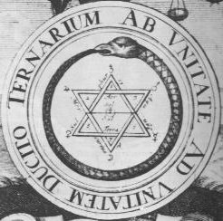
FIGURE XXIII
(l'anneau et la digamma de Salomon)vole cet anneau à Albérich qui le maudit alors. Freia libérée, tout renaît bientôt...On croit l'oeuvre achevée. C'est alors que survient Erda, la mère primordiale, le Mercure sous sa forme élémentaire. Elle tance Wotan qui finit par abandonner l'anneau maléfique. Les Géants s'en emparent et jusque là, ces jumeaux ne formaient pour ainsi dire qu'un seul corps : les voila divisés et c'est cet anneau maudit qui en est responsable ; on croirait alors assister à la lutte des contraires. Bientôt Fafner est vainqueur et son frère Fasold gît à ses pieds. Wotan est touché, saisi de peur et ne voit plus alors qu'un seul refuge : le burg qui va jouer le rôle d'athanor, lieu de défense et de protection, comme le signale Fulcanelli quand il examine l'un des tableaux pêtrés de Notre-Dame. Wotan ne sait pas exactement contre quoi il doit se défendre : il appelle cela « la nuit » [déesse que nous avons évoqué dans notre commentaire de l'Introïtus]. Mais il manque un pont pour gagner le burg. La magie éclate alors : le dieu du tonnerre frappe avec son marteau, les nuages explosent en orage puis se déploie un immense arc-en-ciel (1) dont la portée hermétique ne peut pas échapper à l'étudiant [qu'il revoit à cet égard le commentaire du Mutus Liber]. Cet arc-en-ciel, c'est le pont, c'est l'eau pontique qui assure la liaison entre les deux extrémités du vaisseau de nature. Mais tout n'est pas joué, car dans les profondeurs, les ondines se lamentent sur le sort de l'Or perdu ; le feu et l'eau, entrelacés dans la digamma de Salomon, sont ligués contre les dieux. ils pénètrent dans le Palais du roi dont l'entrée est à présent ouverte...Nous arrêterons ici cette histoire, nous réservant d'en raconter des fragments supplémentaires dans d'autres sections.
Cronos-Saturne est identifié à la phase de putréfaction des matières ; elle se situe au début du 3ème oeuvre dans la voie sèche. En astronomie, Saturne est la 7ème et dernière planète de la Tradition. En chimie, Saturne est le symbole du plomb, confondu souvent avec les Anciens avec l'étain [plumbum album] et avec l'antimoine [album astrum]. Une confusion a été entretenue soigneusement depuis Artephius qui a dit : « l'antimoine est des parties de Saturne...» Mais, E. Chevreul, dans son commentaire, énonce « le plomb est des parties de Saturne ». Alors, que choisir ? Il est certain qu'entre la teinte blanche et sombre du plomb et celle de la planète Saturne, la parenté est étroite et elle a été constamment invoquée depuis l'époque alexandrine. Chez les Sabéens, héritiers des Chaldéens, les sept planètes étaient adorées comme divinités et chacune avait sa statue : Saturne, une statue de plomb. Des contes arabes, qui rappellent les théories alchimiques sur les métaux et le mercure, sont rapportés par Celse et Origène. Celse expose la doctrine des Perses ainsi que les mystères mithriaques. Il nous apprend que ces mystères étaient exprimés par un certain symbole, représentant les révolutions célestes et le passage des âmes à travers les astres [c'est-à-dire, finalement, l'énumération des chaux métalliques]. C'était un escalier, muni de 7 portes élevées avec une 8ème au sommet et la première porte était de plomb : elle était assignée à Saturne, la lenteur de cet astre étant exprimée par la pesanteur du métal [Pline, Hist. Nat., II, 6]. Les sels de plomb sont riches de portée symbolique. Le symbole de la litharge [mot à mot, pierre d'argent], renferme par exemple celui de l'argent ; le signe du plomb se trouve dans celui de l'antimoine sulfuré. C'est à la couleur noire, à la putréfaction, que Saturne est habituellement consacré dans l'Art sacerdotal. Pernety nous en dit [Fables]:
La putréfaction est en quelque façon la clef de toutes les opérations, quoiqu'elle ne soit pas proprement le première. Elle nous découvre l'intérieur du mixte : elle est l'outil qui rompt les liens des parties ; elle fait, comme disent les Philosophes, l'occulte manifeste. Elle est le principe du changement des formes, la mort des accidentelles, le premier pas à la génération, le commencement et le terme de la vie, le milieu entre le non être et l'être. Le Philosophe veut qu'elle se fasse, quand le corps dissous par une résolution naturelle, est soumis à l'action de la chaleur putrédinale. [...] la première [des couleurs] est la noire, appelée tête de corbeau, et de beaucoup d'autres noms que nous avons rapportés ci-devant dans l'article intitulé Clef de l'oeuvre.Nous allons donc partir à la recherche du Lion vert qui est la Clef de l'oeuvre. Ce chapitre figure à la p. 147 des Fables de Dom Pernety ; nous en tirons ici des commentaires que nous adaptons à notre sujet. B. Valentin [Douze Clefs] nous dit que celui qui a de la farine saura bien faire la pâte et que celui qui a la pâte trouvera bien un fourneau pour la cuire. A en croire les alchimistes, faire l'oeuvre est une chose aisée et il faut peu de frais, gagé il est vrai par un temps plus long et par la patience, qui, elle, doit être à toute épreuve. Cela d'ailleurs varie selon la voie d'attaque choisie. La voie humide nous échappe jusqu'à présent et nous n'envisageons pour le moment que la voie sèche. Mais de nouvelles recherches tendent à montrer que le secret de la voie humide est du côté des dissolutions auriques : la préparation du pourpre de Cassius, de certains sels d'étain, mêlés à une certaine proportion de verre d'antimoine, permettent d'obtenir des pierres précieuses que les Anciens ne pouvaient que difficilement séparer des véritables. Le cas de la topaze, les modifications de sa couleur en fonction de la chaleur de cuisson, tout indique que nous avons là, peut-être, l'explication des régimes de Philalèthe.
Or, Pernety, souvent, ne parle que de la voie humide et cela lui arrive aussi de mélanger les deux voies...Flamel [Fig. Hiér.] dit que :"la préparation des agents est une chose difficile sur toute autre au monde."
Voila qui n'est guère encourageant. Un autre auteur, Augurelle [dont on ne trouve point de trace] nous assure qu'il faut un travail d'Hercule [Douze travaux] et le Jean d'Espagnet ne fait pas difficulté de dire qu'il y a beaucoup d'ouvrage à faire :
"Dans la sublimation philosophique du mercure, ou la première préparation, il faut un travail d'Hercule, car sans lui Jason n'aurait jamais osé entreprendre la conquète de la Toyson d'or." [Oeuvre secret d'Hermès]
Mais, il s'agit d'une singulière sublimation et qui n'a que peu de rapport avec celle de nos chimistes. Elle consiste dans la dissolution et la putréfaction de la matière et cette sublimation n'est autre que la séparation du pur et de l'impur, ou si l'on veut une purification de la matière. C'est cette solution qui est la clef de l'oeuvre et le vrai Saturne hermétique. Tous les philosophes en conviennent et tous parlent de la même manière à ce sujet. Mais il y a deux travaux dans l'oeuvre, dont la distinction n'est pas toujours évidente car les alchimistes ont fait en sorte de créer la confusion entre l'objet et le sujet, si l'on permet cette analogie psychanalytique. Il faut deux travaux dans l'oeuvre : l'un pour faire la pierre, l'autre pour faire l'élixir. Pour faire la pierre, il faut préparer les Soufres, c'est-à-dire le Soufre rouge d'un côté, qui assure la teinture et de l'autre côté, le Sel ou soufre blanc qui n'est rien d'autre que la toyson d'or qui fait l'objet de la légende des Argonautes. Pour faire l'élixir, il faut avoir deux principes, l'un qui se trouve dans le ventre d'Ariès et l'autre qu'on ne eput comparer qu'à l'écume de mer. A partir de ces deux agents, et avec quelque industrie, on arrivera à préparer le Mercure. Mais on a fait accroire aux souffleurs que le premier but était la préparation de la Pierre au rouge et le deuxième, celui de la soi-disant panacée universelle. En résumé là-dessus, il semble raisonnable de restituer les concordances suivantes :
à préparation de la pierre : Soufre blanc et Soufre rouge ;
à préparation de l'élixir : formation du filet d'Ariadne, correspondant au mariage d'Arès et d'Aphrodite conduisant, par le moyen de Vesper, à l'obtention du Mercure philosophique canoniquement préparé.Il faut commencer à préparer les agents, et c'est de cette préparation que les Philosophes n'ont point parlé, parce que tout dépend d'elle, et que le second oeuvre n'est, suivant leur dire, qu'un jeu d'enfants et un amusement de femmes. Il ne faut donc pas confondre les opérations du second oeuvre avec celles du premier, quoique Morien [Entretiens du Roi Calid] nous assure que le second oeuvre, qu'il appelle disposition, n'est qu'une répétition du premier. C'est d'ailleurs ce que dit aussi Fulcanelli, en substance, en nous assurant que deux solutions sont mêlées par les Artistes qui conduisent à des substances différentes par un moyen identique [cf. à ce sujet sections : compendium - bain des astres - laboratoire2 - tartre vitriolé]. Quelle que puisse être cette préparation, il est certain -nous affirme Dom Pernety- qu'elle doit se commencer par la dissolution de la matière, quoique plusieurs lui aient donné le nom de calcination ou de sublimation :
"Il s'agit d'abord de faire le Mercure philosophique ou le dissolvant avec une matière qui renferme en elle deux qualités, et qui soit en partie volatile, et fixe en partie."
Voila qui est bien difficilement traduisible en mots simples. D'après tout ce que nous avons supputé dans les autres sections, nous pouvons dégager les éléments suivants.
Par voie sèche, on trouve la voie du tartre vitriolé, celle des carbonates et de l'alkali fixe, celle enfin de la saturnie végétale.
à La voie du tartre vitriolé implique une calcination qui est en même temps une sublimation : un dépôt se forme [corps fixe de l'opération ou Caput] tandis qu'un esprit s'élève [phlegme puis eau-forte].
à La voie des carbonates peut au départ avoir des points communs avec celle du tartre vitriolé, et notamment lors de la préparation et du traitement du nitre [salpêtre]. Il y a un passage dans Lemery où des opérations semblent contracter des rapports avec le travail hermétique [purification] :"Lorsqu'on a une grande quantité de salpêtre commun à purifier, on le met dans une ou dans plusieurs chaudières étamées, & l'on verse dessus autant qu'il faut d'eau commune pour le dissoudre ; on met du feu dessous, & quand le sel étant fondu, la liqueur commence à bouillir, on en enlève avec une écumoire la première écume, qu'on appelle bouë de salpêtre, on continuë à faire bouillir doucement cette liqueur, jusqu'à ce qu'elle ait acquis un peu plus de consistance ; on y jette alors un peu de vitriol blanc ou d'alun en poudre pour le clarifier, il s'élève à la superficie une écume noire qui s'épaissit, on la sépare peu à peu avec l'écumoire autant exactement qu'il est possible ; quand la liqueur est dépouillée de cette écume, on la verse toute bouillante avec des grandes cuillers, ou autrement dans un vaisseau haut & etroit, qu'on appelle cave à rasseoir, & on la couvre d'un morceau de drap, pour entretenir quelques-tems sa chaleur, & empêcher qu'elle ne refroidisse trop tôt ; on la laisse en repos une heure & demie ou deux heures, pendant ce temps-là il se précipite au fond du vaisseau des fèces jaunes en matière de lie, & la liqueur devient claire & belle ; on la sépare alors de dessus les fèces pendant qu'elle est encore un peu chaude, la versant par inclination dans des vaisseaux qu'on appelle jattes ou bassines à rocher ; on couvre ces vaisseaux d'un drap, & on laisse la liqueur au repos pendant un jour ou deux, ou jusqu'à ce que le salpêtre se soit congelé en beaux crystaux grands, clairs, blancs, transparens, qui sont ordinairement de figure sexangulaire] : on retire alors ces crystaux de dedans les jattes, & on les met dans une cuve percée au fond, où ils égoutent, c'est le salpêtre rafiné."
Dans cette opération, une première écume apparaît : c'est la boue du salpêtre -sorte de fèce qui reste en surface- à enlever avec une écumoire. Puis on ajoute du vitriol blanc [c'est-à-dire du vitriol vert calciné en blancheur] : une deuxième écume, noire, apparaît alors que l'on peut assimiler à la tête de corbeau. Là encore, on la sépare avec une écumoire. Quand la liqueur a été dépouillée dette écume -vêtement noir- on la dispose dans un vaisseau recouvert d'un drap puis il se précipite des fèces jaunes. Par décantation, le salpêtre cristallise peu à peu en cristaux blancs. Dans ces opérations, la noirceur a bien précédé la blancheur. Plus tard, le salpêtre va nous servir à préparer l'alkali fixe :
"Mettez 16 onces de salpêtre dans un creuset qui soit grand & fort ; placez ce creuset entre les charbons ardens, & quand le salpêtre sera fondu, jettez-y une cuillerée de charbon en poudre grossière, il se fera une grande flamme & une détonation, lesquelles étant passées, vous en remettrez encore autant, & vous continuerez ainsi jusqu'à ce qu'à ce que la matière ne s'enflamme plus, mais qu'elle reste fixe au fond du creuset : versez-la alors dans un mortier bien chaud, & quand elle sera refroidie, mettez-la en poudre & la faites fondre dans une quantité suffisante d'eau : filtrez la dissolution par le papier gris, & faites évaporer toute l'humidité dans une terrine de grais, ou dans un vaisseau de verre, au feu de sable, il vous restera un sel qu'il faut garder dans une phiole bien bouchée. Ce sel a un goût semblable à celui du sel de tartre ; & il en diffère peu en vertu...Si l'on met ce sel à la cave, il se résoud en une liqueur semblable à l'huile de tartre."
On obtient là ce qu'on appelle de l'huile de tartre par défaillance qui est du carbonate de potasse hydraté. La matière est pour ainsi dire nourrie par les cuillerées de charbon qu'on administre. On doit en mettre tant qu'on n'a pas obtenu quelque fixité, face au feu.
Ce qui prouve qu'il faut une dissolution, c'est que le Cosmopolite nous dit de chercher une matière de laquelle nous puissions faire une eau qui dissolve l'or naturellement et sans violence. Or, une matière ne peut se réduire en eau par la dissolution, quand on n'emploie pas la distillation de la chimie vulgaire, qui est exclue de l'oeuvre. Cette dissolution radicale, c'est celle que permet le Mercure philosophique. On ne saurait donc affirmer que la couleur noire qui apparaît lors de la préparation du salpêtre nous indique le bon chemin. Comme le dit Dom Pernety [Fables] :
La noirceur est le vrai signe d'une parfaite solution. Alors la matière se dissout en poudre plus menue, pour ainsi dire, que les atomes qui voltigent aux rayons du soleil, et ces atomes se changent en eau permanente. Les Philosophes ont donné à cette dissolution les noms de mort, destruction et perdition, enfer, tartare, ténèbres, nuit, veste ténébreuse, sépulcre, tombeau, eau venimeuse, charbon, fumier, terre noire, voile noir, terre sulfureuse, mélancolie, magnésie noire, boue, menstrue puant, fumée, noir de fumée, feu venimeux, nuée, plomb, plomb noir, Plomb des Philosophes, Saturne, poudre noire, chose méprisable, chose vile, sceau d'Hermès, esprit puant, esprit sublimé, soleil éclipsé, ou éclipse de soleil et de la lune, fiente de cheval, corruption, écorce noire, écume de la mer, couverture du vase, chapiteaux de l'alambic, naphte, immondice du mort, cadavre, huile de Saturne, noir plus noir que le noir même. Ils l'ont enfin désignée par tous les noms qui peuvent exprimer ou désigner la corruption, la dissolution et la noirceur. c'est elle qui a fourni aux Philosophes la matière à tant d'allégories sur les morts et les tombeaux. Quelques-uns l'ont même nommée calcination, dénudation, séparation, trituration, assation, à cause de la réduction des matières en poudre très menues. D'autres, réduction en première matière, mollification, extraction, commixtion, liquéfaction, conversion des éléments, subtilisation, division, humation, impastation et distillation. Les autres, xir, ombres cimmériennes, goufre, génération, ingression, submersion, complexion, conjonction, imprégnation. Lorsque la chaleur agit sur ces matières, elles se changent d'abord en poudre, et eau grasse et gluante, qui monte en vapeur au haut du vase, et redescend en rosée ou pluie, au fond du vase [Artephius] , où elle devient à peu près comme un bouillon noir un peu gras. C'est pourquoi on l'a appelée sublimation, et volatilisation, ascension et descention. L'eau se coagule ensuite daavntage, devient comme de la poix noire, ce qui la fait nommer terre fétide et puante. Elle donne une odeur de relent, de sépulcres et de tombeaux. Hermès l'a appelée la terre des feuilles.Que de choses sont dites en quelques lignes ! Malheureusement, Dom Pernety n'est pas toujours d'une logique à toute épreuve et il lui arrive de confondre des objets spirituels qui sont des hiéroglyphes de cabale, avec des objets réels, qui sont finalement assez proches de leurs dénominations chimiques anciennes. Si nous voulons rétablir le sens secret de ces paroles, il nous faut relire la fable d'Ovide [Met., III, 1] : Soldats nés des dents du serpent de Mars. Nous en parlons dans la section sur la Matière.« Mais son vrai nom, dit Flamel [Fig. Hiér.], est le laiton ou laton, qu'il faut blanchir. Les anciens Sages, ajoute-t-il, l'ont décrite sous l'histoire su Serpent de Mars, qui avait dévoré les compagnons de Cadmus, lequel le tua en le perçant de sa lance contre un chêne creux ».
à La saturnie végétale : on emploie de l'oxyde de plomb [minum] et des aluminates. cf. laboratoire3.
¯
Voici ce que nous disent les mythographes sur Saturne :
Fils puiné d'Uranus [symboliquement, l'éveil du feu primordial] et de l'antique VestaMais il y a d'autres choses à dire sur Saturne. Chacun le sait, cette planète comporte un anneau. Cet anneau trouve sa correspondance dans le serpent Ouroboros qui est ce feu circulaire où les alchimistes ont trouvé leur dissolvant. Saturne fut observé pour la première fois au téléscope par Galilée [1564-1642] en 1610. Il crut observer une planète triple, avec un globe central plus grand que les deux autres, lesquels rapetissaient lentement jusqu'à disparaître. Dans une lettre à Julien de Médicis, datée du 13 novembre 1610, Galilée annonce les résultats de ses observations de Saturne :
[déesse du foyer, c'est-à-dire de l'athanor ou feu secret : elle est représentée par le feu, son symbole vivant], ou du Ciel et de la Terre, Saturne[Saturne combine donc les deux éléments du feu : le feu primordial qui régit les liaisons moléculaires ou feu de nature et le feu de l'art représenté par le dissolvant des sages],
après avoir détrôné son père, obtint de son frère aîné Titan [par cabale, de TitanoV, chaux : la chaux vive associe le symbole du feu aqueux et de la terre] la faveur de régner à sa place. Titan toutefois y mit une condition, c'est que Saturne ferait périr toute sa postérité mâle [dissolution des Soufres], afin que la succession au trône fut réservée aux propres fils de Titan. Saturne épousa Rhéa [Cybèle] dont il eut plusieurs fils qu'il dévora avidement, ainsi qu'il en était convenu avec son frère. Sachant d'ailleurs qu'un jour il serait lui aussi renversé du trône par un de ses fils, il exigeait de son épouse qu'elle lui livrât les nouveaux-nés. Cependant Rhéa parvint à sauver Jupiter
[ici, Jupiter symbolise le jeune homme ou captation progressive du résultat de la Grande coction qui doit chasser le vieillard ou Saturne, représentant le Mercure philosophique].
Celui-ci, étant devenu grand, fit la guerre à son père, le vainquit, et, après l'avoir traité comme Uranus avait été traité par son fils, il le chassa du ciel. Ainsi la dynastie de Saturne se continua au détriment de celle de Titan. Saturne eut trois fils de Rhéa qui parvint à les sauver avec la même adresse : Jupiter, Neptune
[symbolise surtout la fraicheur que l'on retrouve sous des huttes de feuillage où l'on pouvait retouver l'essence même du dieu Neptune]
et Pluton [on lui sacrifiait des animaux au pelage sombre, brebis et porcs noirs], et une fille, Junon, soeur jumelle et épouse de Jupiter. Quelques-uns y ajoutent Vesta, déesse du feu, et Cérès, déesse des moissons. Il eut en outre un grand nombre d'enfants de plusieurs autres femmes, comme le centaure Chiron de la nymphe Philyre, etc. On dit que Saturne, détrôné par son fils Jupiter, et réduit à la condition de simple mortel, vint se réfugier en Italie, dans le Latium, y rassembla les hommes féroces, épars dans les montagnes, et leur donna des lois [il y a là un parallèle avec le périple d'Osiris]. Son règne fut l'âge d'or, ses paisibles sujets étant gouvernés avec douceur [conduite du feu qui doit être égal ou procéder par degrés dans cette partie de l'oeuvre]. L'égalité des conditions fut rétablie ; aucun homme n'était au service d'un autre ; personne ne possédait rien en propre ; toutes choses étaient communes, comme si tous n'eussent eu qu'un même héritage. C'était pour rappeler la mémoire de cet âge heureux qu'on célébrait à Rome les Saturnales. Ces fêtes dont l'institution remontait dans le passé bien au-delà de la fondation de la ville, consistaient principalement à représenter l'égalité qui régnait primitivement parmi les hommes. Elles commençaient le 16 décembre de chaque année : d'abord elles ne durèrent qu'un jour, mais l'empereur Auguste ordonna qu'elles se célébreraient pendant trois jours auxquels plus tard Caligula en ajouta un quatrième. [...] En grec, Saturne est désigné sous le nom de Cronos, c'est-à-dire le Temps. L'allégorie est transparente dans cette fable de Saturne. Ce dieu qui dévore ses enfants n'est, dit Cicéron, que le Temps lui-même, le Temps insatiable d'années, et qui consume toutes celles qui s'écoulent. Afin de le contenir, Jupiter l'a enchaîné, c'est-à-dire l'a soumis au cours des astres qui sont comme ses liens
[Jupiter représente le lien du Mercure, comme nous l'avons montré dans la section des blasons alchimiques : il symbolise du sable ou de la silice, qui donne de la fixité à l'alumine. Mais il symbolise plus que cela et on doit tenir compte qu'il est avant tout le maître de l'Air. A ce titre, sa fonction dans l'oeuvre procède de celle du Mercure dans lequel les Soufres sont sublimés et volatilisés dans le Ciel chymique et la Rosée de mai n'est autre que l'expression de cette sublimation, toute de cabale d'ailleurs. Le lecteur pourra consulter un passage de la section sur la Prima materia où nous donnons, à cet égard, une explication entièrement rationnelle de la planche IV du Mutus Liber.].
Les Carthaginois offraient à Saturne des sacrifices humains : ses victimes étaient des enfants nouveaux-nés. A ces sacrifices, le jeu des flûtes et des tympanons ou tambours faisait un si grand bruit que les cris de l'enfant immolé ne pouvaient être entendus. A Rome, le temple que ce dieu avait sur le penchant du Capitole fut dépositaire du trésor public [aerarium], par la raison que, du temps de Saturne, c'est-à-dire durant l'âge d'or, il ne se commettait aucun vol.
[Voila encore, sans qu'on le sache de façon expresse un trait de cabale des plus savoureux : car il ne saurait y avoir de volatilisation à l'époque de l'oeuvre où les Soufres se corporifient, c'est-à-dire, précisément, à l'âge d'or...]
Sa statue était attachée avec des chaînes qu'on ne lui ôtait qu'au mois de décembre, époque des Saturnales. Saturne était communément représenté comme un vieillard courbé sous le poids des années, tenant une faux à la main pour marquer qu'il préside au temps [cf. Fig. Hiér.]. Sur beaucoup de monuments, il est représenté avec un voile, sans doute parce que les temps sont obscurs et couverts d'un voile impénétrable. Saturne ayant le globe sur sa tête est considéré comme étant la planète de ce nom. Une gravure, dite étrusque, le représente aîlé, avec sa faux posée sur un globe ; c'est ainsi que nous représentons toujours le Temps. Le jour de Saturne est celui que nous nommons samedi [Saturni dies].
« Et voilà que Saturne, à ma très grande admiration, s'est révélé être non pas une étoile seule, mais trois, ensemble, qui, se touchent presque ; elles sont totalement immobiles l'une par rapport à une autre et disposées de cette manière : celle du milieu est bien plus grande que les latérales, lesquelles sont situées l'une à l'orient et l'autre à l'occident sur la même ligne droite ; elles ne sont pas placées exactement suivant la direction du zodiaque, mais l'occidentale s'élève un peu, vers le nord ; peut-être sont-elles parallèles au plan de l'équateur. En les observant avec une lunette qui ne soit pas à très fort grossissement, on ne voit pas apparaître trois étoiles bien distinctes, mais il semble que Saturne soit une étoile allongée en forme d'olive, mais en se servant d'une lunette qui multiplie plus de mille fois en surface, on aperçoit les trois globes bien distincts, et qui presque se touchent, ne laissant pas entre eux de séparation plus large qu'un mince fil obscur, J'ai donc découvert la cour de Jupiter et maintenant deux serviteurs pour ce vieillard qui l'aident à marcher sans jamais s'écarter de lui ....».Mais, en 1612, dans la troisième lettre à Marco Veiseri, Galilée signale une modification dans l'aspect de la planète triple qui le laisse perplexe :« J'ai vu encore Saturne triforme cette année, vers le solstice d'été, puis ayant ensuite cessé de l'observer pendant plus de deux mois, comme quelqu'un qui n'éprouve aucun doute sur sa constance, je suis finalement revenu l'admirer ces jours passés, et je l'ai retrouvé solitaire, sans l'assistance des étoiles habituelles, et, en somme, parfaitement rond et fini comme Jupiter; et tel il se maintient pour l'instant. Or, que peut-on dire devant d'aussi étranges métamorphoses ? Peut-être les deux étoiles mineures se sont-elles consumées, comme les taches solaires ? Peut-être sont-elles disparues et brusquement enfuies ? Peut-être Saturne a-t-il dévoré ses propres fils ? Ou, peut-être était-ce illusion et fraude, et les lentilles m'ont-elles si longtemps abusé, avec tant d'autres qui prés de moi, les ont plus d'une fois observées ?...»Or, voici ce qu'a observé Galilée dans sa lunette :
Villa delle Selve, 1er décembre 1612,
De Votre Illustrissime Seigneurie le Très Dévoué Serviteur, Galileo Galilei Linceo.
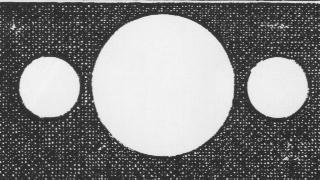
FIGURE XXIV
(interprétation par Galilée de l'image de Saturne)Quel enseignement, quelles allégories pouvons-nous tirer des observations de Galilée ? Saturne-Cronos a été confondu, on le disait plus haut, avec le dissolvant, c'est-à-dire le Mercure philosophique dont le rôle est de dissoudre les matières, de les détruire. Or, nous avons trois matières dans l'Art sacré : le Soufre blanc ou Sel, le Soufre rouge ou teinture et l'Esprit, assimilé au Mercure au sein duquel survient la sublimation philosophique. Il est clair que c'est cette représentation tripartite que nous offre la FIGURE XXIV. C'est d'abord sous cette forme que paraît Cronos à Galilée ; puis il observe que l'image se transforme en ellipse qui affecte la forme d'un oeuf. Lui-même parle de deux serviteurs du vieillard. Ces serviteurs ne sont autres que les deux Soufres, autrement connus sous la désignation de chien d'Arménie et chienne du Corascène, ou encore sous celle des deux colombes de Diane. Dans une observation ultérieure, l'image évolue et ne laisse plus apparaître qu'un globe. Galilée écrit alors : « Peut-être Saturne a-t-il dévoré ses propres fils ? ». Sans le vouloir, Galilée se sert des mêmes mots qu'auraient employés les alchimistes pour désigner la putréfaction qui résulte de la dissolution des Soufres dans le Mercure. Mais, bien sûr, nous savons aujourd'hui que les positions réciproques de la Terre et de Saturne ayant changé, les anneaux [en lesquels Galilée voyait les étoiles accompagnant la planète] se présentaient de profil à l'observateur terrestre, disparaissant ainsi de son champ de vision ; ce phénomène se produit à peu près tous les quatorze ans. L'analogie hermétique ne s'en poursuit pas moins si l'on veux bien laisser libre cours à son imagination et capter la poésie de l'image hermétique qui en résulte. Ces deux étoiles qui accompagnent Saturne dans sa course sont donc en tous points comparables à celles qu'évoque E. Canseliet dans la préface des Mystères :
"Il y a donc deux étoiles qui, nonobstant l'invraisemblance, n'en forment réellement qu'une. Celle qui brille sur la Vierge mystique, - à la fois notre mère et la mer hermétique, - annonce la conception et n'est que le reflet de l'autre qui précède l'avènement miraculeux du Fils." [Myst., préface à la 2ème édition, p. 21]
Et l'on aura compris que la mer hermétique est représentée par Saturne, hiéroglyphe céleste du Mercure philosophique. Ces deux étoiles n'en forment qu'une puisque leur aspect correspond à un anneau, pris en coupe. La structure de cet anneau est restée mal connue jusqu'à ce que la sonde Voyager 1, en novembre 1980, ait permis de mettre en évidence une danse fascinante des satellites et des anneaux autour de la planète. Au-delà du bord extérieur des anneaux visibles depuis la Terre, deux petis satellites côtoyaient de part et d'autre un anneau extérieur, l'anneau F. Par leur action gravitationnelle, ces satellites minuscules contraignent les particules de l'anneau à rester à l'intrieur d'une bande étroite, les empêchant ainsi de se diriger vers l'anneau A ou d efuir vers l'espace ; on les a comparé à des chiens de berger. L'allégorie est claire ; ces satellites jouent le même rôle que le lien du Mercure qui empêche la volatilisation du Compost. Plus près de la planète, et gravitant près du bord externe de l'anneau A, un autre chien de berger fait fonction de gardien pour les éléments tentés de fuir cet anneau vers l'extérieur.
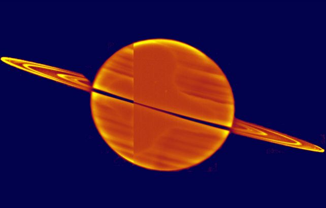
FIGURE XXV
(la lumière solaire à travers les anneaux de Saturne. image extraite du site http://apod.geoman.net/fr/html/ap000624.html )
Normalement, les astronomescollés au sol voient le spectaculaire système d'anneaux de Saturne totalement illuminé par la réflexion de la lumière solaire. Pourtant, cette intrigante image a été réalisée dans le but de tirer avantage de l'inhabituelle orientation selon laquelle le Soleil illumine les anneaux par en dessous. Les trois brillantes structures des anneaux sont visibles car les anneaux eux-mêmes ne sont pas solides. Composés de nombreux morceaux de roche séparés, les anneaux permettent aux rayons solaires de les traverser -- offrant une spectaculaire démonstration qu'ils ne sont pas continus mais des bandes ininterrompues de matériau. L'image est un compositage en fausse-couleur créé à partir de photographies du télescope spatial Hubble prises en novembre 1995.
[àhttp://apod.geoman.net/fr/html/ap000624.html ]Le système d'anneaux de Saturne fait de la planète l'un des plus beaux objets dans le système solaire. Les anneaux sont divisés en plusieurs parties, incluant les anneaux très lumineux A et B, et un anneau C plus pâle. Le système d'anneaux a plusieurs trouées. La plus notable est celle de la "Division de Cassini" qui sépare les anneaux A et B. Giovanni Cassini a découvert cette division en 1675. La "Division Encke", qui sépare l'anneau A en deux, est nommée d'après Johann Encke, qui la découvrit en 1837. Les sondes spatiales ont démontré que les anneaux principaux sont formés en fait d'un grand nombre de plus petits anneaux. L'origine des anneaux est obscure. On pense qu'ils pourraient avoir été formés à partir de grandes lunes qui auraient été brisées par l'impact de comètes et de météorites. La composition des anneaux n'est pas connue avec certitude, mais on sait qu'ils contiennent une quantité significative d'eau. Ils peuvent être composés d'icebergs et/ou de boules de neige de quelques centimètres à quelques mètres d'épaisseur. La majeure partie de la structure complexe de certains anneaux est le résultat d'effets gravitationnels des satellites les plus proches. Ce phénomène est illustré par la relation entre l'anneau F et les deux petites lunes qui escortent le matériel de l'anneau.
Des structures radiales, semblables aux rayons d'une roue, ont aussi été trouvées par les sondes Voyager dans le grand anneau B. On croit que ces structures sont composées de fines particules de l'épaisseur d'un grain de poussière. On a observé ces rayons se former et s'évanouir dans le laps de temps des images prises par les sondes Voyager. Alors qu'un effet de charge électrostatique pourrait créer de ces rayons en faisant monter des particules de poussière au-dessus de l'anneau, la cause exacte de leur formation n'est pas encore bien comprise
[àhttp://planetscapes.com/solar/french/saturn.htm#moons]
Cette spectaculaire photo nous montre, s'il était besoin, que le caractère tripartite du Mercure se retrouve même jusque dans l'anneau de Saturne. Nous apercevons en effet trois structures dans cet anneau. L'anneau n'est pas unique mais composé, on le sait maintenant de sept structures différentes. Une bande opaque, noire, sépare les anneaux A et B. Qu'évoquent pour nous ces chiffres, ces bandes, tout ce système solaire en miniature ?
Nous avons posé en hypothèse tout à l'heure que les anneaux représentaient les Soufres, plus ou moins bien visibles, plus ou moins dissous dans le Mercure, représenté par la masse de Saturne, selon leurs dispositions par rapport à la Terre. Ces Soufres disparaissent dans un cycle de 14 ans. Les deux chiffres 3 et 7 sont d'un symbolisme très chargé et nous en avons parlé dans d'autres sections [Gardes du corps - Réincrudation - lexique]. On se bornera à rappeler que le chiffre 3 se rapporte habituellement à la forme du triangle. Retenons ici que notre Pierre est triangulaire dans sa forme, quadrangulaire dans son état et circulaire dans son origine. Nous aboutissons au chiffre 7, caractéristique du culte d'Apollon [lexique], par l'inscription dans le cercle d'un triangle [symbole mâle, du fixe ou du Soufre] et d'un carré [symbole féminin, de la Terre].
Nous avons vu que la visibilité des anneaux se modifiait dans le temps. Ils apparaissent en plein lorsque Saturne est alignée sur l'axe de ses solstices [Eté, Hiver] et ils disparaissent lorsque Saturne est alignée sur l'axe de ses équinoxes [Printemps, Automne]. Ce qu'il faut bien comprendre ici, c'est que si nous ramenons notre année tropique à l'année alchimique, nous remarquons que celle-ci est composée de quatre saisons qui correspondent chacune aux Quatre Eléments : au Printemps est dévolu la Terre ; l'Eté est la saison de Feu ; l'Automne est la saison de l'Eau et l'Hiver se rapporte à l'Air. Veut-on en avoir la preuve ? Il faut lire ce qu'en dit Basile Valentin dans son Char Triomphal de l'antimoine :"L'antimoine a les quatre extrémités et qualités en soi avec leurs propriétés. Il est froid et humide, chaud et sec. Il se règle selon les quatre saisons de l'année. Il est fluide et fixe. Celui qui est fluide n'est pas sans poison; et celui qui est fixe est libre de tout poison. C'est pourquoi il est certain que plusieurs écrivent diverses fictions de l'antimoine, lorsqu'ils parlent de ses facultés malignes..."
Nous voyons donc que la dissolution, la putréfaction, la noirceur enfin pour la nommer, symbolisée par nos anneaux se distingue par leur disparition, [revenez à la phrase qu'a écrite Galilée] ce qui arrive à l'Eté et à l'hiver saturniens. En revanche, les Soufres apparaissent aux Printemps et à l'Automne saturniens. Nous pouvons résumer ces observations sur cette figure :
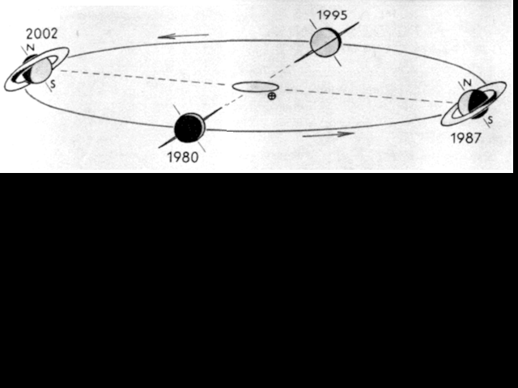
FIGURE XXVI
(les saisons de Saturne et sa position par rapport au soleil et à la terre ; http://www.astrosurf.com/skylink/publi/crepus04/ann_sat.html)Nous verrons, de la Terre, l'anneau de Saturne dans les conditions suivantes qui se reproduisent avec une périodicité qui est celle des alternances saisonnières de la planète. Du solstice nous faisant découvrir le plus complètement l'ensemble, par exemple du côté nord, à l'équinoxe amenant la disparition de l'anneau, il s'écoule un peu plus de sept ans ; de cet équinoxe jusqu'à l'époque où nous verrons au mieux le système par sa face australe, sept années passent encore ; puis un même laps de temps amènera une nouvelle disparition, et ainsi de suite. Donc, tous les quatorze ans et demi l'anneau disparaît, et, au milieu de chaque intervalle, tantôt le nord, tantôt le sud du système se trouve incliné au maximum dans la direction de notre rayon visuel et entre ces conditions extrêmes, se réalisent progressivement toutes les perspectives intermédiaires auxquelles correspond la visibilité du système, de l'ombre que le globe porte sur l'anneau, et de celle que ce dernier projette sur le globe. Parlons de ces conditions extrêmes. L'équinoxe du Printemps saturnien survient lorsque Saturne parvient à l'équivalent du point g de notre Terre, c'est-à-dire au moment où Saturne traverse le plan de son écliptique au noeud supérieur. Ceci se réalise par deux fois, d'abord vers 22° du signe du Cancer et vers 22° du signe du Capricorne [au 1er janvier 1900]. Nous pouvons donc résumer l'ensemble des observations concernant Saturne :
à équinoxe de Printemps : Saturne àCancerà anneaux + è Soufre
à équinoxe d'Automne : Saturne àCapricorneà anneaux + è Soufre
à solstice d'Eté : Saturne àBalanceà anneaux -
à solstice d'Hiver : Saturne àBélierà anneaux -Si nous considérons les positions extrêmes, nous avons 4 possibilités par rapport à la conjonction, l'opposition et les deux quadratures. Par exemple, les anneaux étaient « les moins visibles » lorsque la Terre et Saturne étaient tous les deux en 1980 dans le signe de la Vierge et dans le signe des Poissons en 1995. Ils étaient « les plus visibles » en 1987 lorsque la Terre et Saturne se trouvaient dans le signe du Sagittaire, et ils le seront encore en 2002 lorsque la Terre et Saturne se trouveront dans le signe des Gémeaux. Nous voila donc amenés à définir au mieux l'année alchimique saturnienne. Les Soufres apparaissent lorsque la Terre - en fonction des positions de Saturne - est dans les signes du Sagittaire et des Gémeaux et la dissolution est totale lorsque la Terre se projette dans les signes de la Vierge et des Poissons.
Le Mercure, ne l'oublions pas, est un feu aqueux ou une eau ignée. Reprenons ce que nous avons dit dans la section Prima materia des époques de l'oeuvre. Calid appelle l'attention des Adeptes sur l'importance des signes astronomiques dans les opérations du Grand oeuvre :
"Beaucoup de gens se trompent et n'arrivent pas à bonne fin. Car, dans toute expérience, il faut observer la marche de la lune et celle du soleil. il faut savoir l'époque où le soleil entre dans le signe du Bélier, dans le signe du Lion, ou dans celui du Sagittaire ; car c'est d'après ces signes que s'accomplit le grand oeuvre."
Celui qui a quelque connaissance en astrologie verra tout de suite que Calid nomme ici le triangle de feu constitué des signes dits positifs, correspondant aux qualités de chaud, sec et qui renvoient par tradition à un tempérament colérique, aux réactions violentes et rapides. L'artiste doit savoir, ici, bien diriger son feu car si les qualités reconnues à la triplicité de feu sont le courage, la hardiesse et l'énergie, les défauts [violence, précipitation, véhémence, impatience, imprévoyance] pourraient s'exprimer de façon fatale et les fleurs, se trouver brûlées. Le Bélier ou Ariès est le signe de la Toyson d'or [Soufre blanc] ; le Lion est le signe du soleil [Soufre rouge] ; enfin, le Sagittaire est le signe dédié à Jupiter [l'Aigle : accrétion du Soufre à la toison d'or]. A ce triangle de feu, répond le triangle d'eau avec le Cancer [Lune], le Scorpion [venin àioVà chaux métalliques] et les Poissons [bain des astres] où s'exprime la dissolution. Au triangle d'eau répond le triangle de terre : Taureau [Vénus-Aphrodite], Vierge [Mercure] et Capricorne [Saturne]. Enfin, nous avons le triangle d'air, avec : Gémeaux [double Soufre sublimé], Balance [Justice à Thémis] et Verseau [Saturne].
Toutefois, ce schéma n'apparaît pas satisfaisant et nous nous devons de manifester quelque perplexité à nos lecteurs. Que vient faire la Vierge dans un signe de Terre ? et le Verseau dans un signe d'air ? Et Fulcanelli n'a-t-il pas dit que les cartes avaient été sciemment mélangées par les Adeptes ?...Il nous faut donc reprendre ce schéma à la base, à partir du texte de Calid. Posons d'abord que le triangle de feu obéit à la logique interne du schéma hermétique. Cela est possible puisque les trois signes envisagés sous ce triangle procèdent des Soufres et de leur accrétion ou conjonction. Cette opération -la conjonction radicale des deux soufres- nécessite le feu des Sages et le symbolisme apparaît logique. Si nous prenons à présent la digamma de Salomon [cf. lut de sapience], nous voyons que le signe d'eau est opposé au triangle de feu, ce qui là encore est naturel.

FIGURE XXVII
les correspondances hermétiques des signes alchimiquesSi l'on se reporte à la figure ci-dessus, en toute logique, les signes d'Eau doivent donc être : le Verseau, les Gémeaux et la Balance [bleu]. De même, les trois signes de Terre seraient : le Taureau, le Capricorne et la Vierge [marron] ; puis les signes d'Air sont : le Cancer, le Scorpion et les Poissons [vert]. Examinons à présent la cohérence du système et analysons d'abord le triangle d'Eau :
à Eau : il est constitué du Verseau, des Gémeaux et de la Balance. La figure du Verseau nous montre d'habitude un sage vieillard porteur d'une ou de deux amphores ; et ces urnes ou amphores inclinées répandent le flot de l'eau [mais on dit qu'il s'agit d'un signe d'air parce que l'on prétend que la liquidité de ce flot est toute aérienne et éthérée et que ce milieu procède des eaux de l'air répandues par les ondes]. Ce signe est placé sous la domination de Saturne. Passons aux Gémeaux. C'est en alchimie le signe du Mercure philosophique qui exprime la dissolution et qui est l'eau permanente des Adeptes. Enfin, la Balance. Elle symbolise la Justice et nous avons vu qu'elle était associée à Thémis et qu'elle voilait sans doute l'albâtre des Sages dont parle Fulcanelli. Ce triangle d'Eau est donc dédié à la préparation du Mercure des Sages, élément liquide ou plus exactement eau ignée. C'est le moyen qui va permettre la conjonction des soufres et qui est complémentaire du triangle de feu qui représente le feu aqueux qui contient en son sein les deux Soufres. Voyons le triangle de Terre :
à Terre : il serait constitué du Taureau, de la Vierge et du Capricorne. La correspondance est bonne avec Vénus-Aphrodite qui voile la terre damnée sur laquelle s'abat l'épée d'Arès. Il a valeur de matière première, de substance initiale, de Terre-élément ou de terre maternelle ; il s'agit d'une terre grasse, humide et chaude couverte de la végétation verdoyante du printemps de l'oeuvre, terre mondée par le Mercure. La Vierge est le second signe de Mercure qui agit ici d'une manière plus basse et terrestre : il s'agit d'une terre desséchée par le soleil où le cycle végétal s'achève ; c'est donc ausi le symbole d'une terre nouvelle, vierge, destinée à recevoir la semence. L'image du Capricorne nous offre une terre froide, hivernale, dans les profondeurs de laquelle s'élabore le lent et pénible oeuvre de la végétation alchimique. Voyons enfin le triangle de l'Air.
à Air : il est formé des trois signes restants : Cancer, Poissons et Scorpion. Il peut paraître paradoxal d'associer l'air à deux signes réputés aqueux mais la contradiction peut être levée si l'on considère l'action qui doit être imprimée aux éléments à cette époque de l'oeuvre. Le Mercure va assurer la conjonction des soufres en se perdant lui-même, c'est-à-dire en se volatilisant ; il est donc vrai que nous sommes dans des signes « humides » mais que l'action consiste indubitablement en une ultime sublimation.Muni de ces indications, reprenons l'exposé des repères hermétiques entre Saturne et la Terre. La Vierge est un signe de dissolution des Soufres et plus spécialement du début de la dissolution. Voyez ce que nous en disons au commentaire de l'Oeuvre secret [chap. 51] de Jean d'Espagnet, lorsque nous parlons du lait de vierge. Les Poissons sont un autre signe de la dissolution et plus spécialement de la fin de cette époque. Consultez de même l'Oeuvre secret [chap. 54] où d'Espagnet explique fort bien cette phase de l'oeuvre. On en trouve aussi un bel exemple dans le De Lapide Philosophorum de Lambsprinck, où les poissons sans chair [échéneis] nagent dans la mer hermétique. Le Sagittaire est un signe où les Soufres sont présents et où, pour employer un langage de cabaliste, l'Âme s'incarne dans le Corps. Jean d'Espagnet nous dit que :
"Trois espèces de très belles fleurs doivent être cherchées et trouvées au fond de ce jardin des philosophes : des violettes rouge vif, un lys blanc et l'amarante pourpre et immortelle." [Oeuvre secret, chap. 53]
Les violettes sont une allusion aux chaux métalliques, par le truchement d'une assonance phonétique entre les mot ion, désignant la violette ainsi d'ailleurs que la couleur violet sombre -par laquelle on sort de la putréfaction- qui évoque aussi les roches Cyanées ou symplégades à la sortie du Pont-Euxin et le mot ioV signifiant javelot et renvoyant aux mots : Sagittaire, Artémis, arc et venin et aussi rouille et vert-de-gris. Evoquons un autre texte :
"...car en ce temps Automnal, la maturité des fruits se parfait par le Sagittaire et le Scorpion, qui sont hors d'oeuvre ; ce qui démontre leur frigidité et siccité, et que ces qualités, conçues par l'esprit intelligent, sont néanmoins invisibles extérieurement en la matière de notre Magistère." [EXPLICATION TRÈS CURIEUSE DES ENIGMES ET FIGURES HIEROGLYPHIQUES, Esprit Gobineau]
La correspondance est bonne, qui s'impose à nous : la maturation des fruits représente l'accrétion du Soufre rouge à la toyson d'or ou Sel des sages, c'est le temps de formation de la Pierre par maturation et accroissement. Nous trouvons d'autres indices dans le Mutus Liber,planche 14 :

FIGURE XXVIII
(Mutus Liber, planche 14)Le second tableau montre le travail d'une fileuse ; nous connaissons l'importance du symbolisme de la fileuse ou de la pelote, qui se rapporte à la viscosité, à la « fluence » si l'on nous permet ce néologisme, de la matière à cette époque de l'oeuvre. Le travail de la fileuse s'apparente ici à l'état de viscosité d'une substance [gliocroV, avec aussi le sens de mesquin, qui s'attache à son bien, avare et nombre de textes parlent de ces défauts qui se révèlent, par cabale, d'insignes qualités pour l'oeuvre] Les chiffres VI - II - X sont énigmatiques. Si nous établisssons une correspondance avec les signes du zodiaque des mois correspondant au début traditionnel de l'oeuvre (mars-avril), nous retrouvons le triptyque de feu : Lion - Bélier - Sagittaire qui correspond au triangle de feu de la FIGURE XXVII. Cela est à rapprocher de ce que nous disons de Saturne dans le commentaire de la villa Palombara [àréincrudation] où nous parlons des rapports entre les notes tironiennes et les symboles alchimiques. Il s'agit d'une sorte de sténographie, inventée par Marcus Tullius Tiro [Tiron], affranchi de Cicéron, et qui fut très employée jusqu'au XIe siècle.
Voyons à présent les Gémeaux. Voici ce que nous en dit Batsdorff :
"La vraie chaleur requise à ces effets ne doit être ni plus ni moins ardente que celle du soleil, c'est-à-dire médiocre et tempérée, pour ce que le feu lent est espérance de salut, et parfait toutes choses, dit la Tourbe : mais cette chaleur nécessaire es principes altératifs de notre opération est au signe des Gémeaux et quand les couleurs sont venues au blanc la multiplication doit paraître jusqu'à ce qu'une parfaite siccité se connaisse à la Pierre." [Toyson d'or]
Ce qui paraît singulier dans cet extrait, c'est que les Gémeaux sont asssociés à la multiplication alors que, signe du double Mercure, ils devraient être associés à la dissolution. Quelle est cette nouvelle énigme ? Il nous faut manifestement reconsidérer la signification du signe des Gémeaux. Dans la section des blasons alchimiques, nous avions eu, déjà, l'occasion de dire que le signe des Gémeaux était celui du double Mercure ou Mercure philosophique et que c'était la pierre d'angle de l'oeuvre, la grande inconnue X du problème, l'objet spirituel par excellence voilé par les Adeptes sous l'allégorie traditionnelle de la lutte du fixe et du volatil, du mâle et de la femelle ou enfin du soleil et de la lune. Mais il nous semble, à présent, que cette interprétation n'est pas complète, car plus que le signe du Mercure philosophique, c'est-à-dire du dissolvant, il faut y voir le signe de la liaison entre les deux Soufres. Ainsi se trouve rétablie la correspondance avec ce que nous avons noté plus haut : le signe des Gémeaux correspond à une phase de l'oeuvre où les Soufres sont apparents et conjoints : c'est une phase de cristallisation qui suit nécessairement la phase de dissolution, ou si l'on préfère la noirceur. Mais au plan symbolique, le signe des Gémeaux reste dominé par Mercure, ce qui est conforme à la doctrine hermétique puisque c'est le Mercure qui est, au sens propre du terme le maître des deux Soufres, même si on le connait aussi comme le serviteur fugitif de l'Oeuvre, puisqu'il est promis à la disparition pour laisser place à plus jeune que lui.
Examinons à présent les correspondances entre l'anneau et les principes hermétiques. Nous avons dit que l'anneau de Saturne était constitué de 7 bandes, de A à F et que la division de Cassini séparait les anneaux A et B. La matière de ces anneaux n'est pas connue avec précision, mais on pense que cette matière, qui est très divisée, serait le résultat de la collisions de plusieurs lunes avec des comètes et des météorites. Nous avons déjà parlé plus haut des comètes dont la nature mercurielle nous a paru être décelable. Les météorites ont été abordées lorsque nous avons examiné le mythe de Cybèle dans la section des Principes. En ne considérant que les principaux anneaux, on peut admettre que les anneaux A et B sont équivalents à nos Soufres et que la division de Cassini, noire, peut symboliser la noirceur dans l'Oeuvre, la dissolution des Soufres. Nous n'irons pas au-delà de cette interprétation quelque peu scolaire, par crainte de franchir des bornes défendues que la raison réprouve.
Outre les anneaux, il nous reste à parler de certains satellites de Saturne qui se distinguent, en fait, comme des serviteurs de notre Mercure.
Saturne possède 18 satellites officiellement reconnus et baptisés. Elle a en plus d'autres satellites non confirmés. L'un tourne dans l'orbite de Dioné, un second se trouve entre les orbites de Téthys et de Dioné, et un troisième est localisé entre Dioné et Rhéa. Les satellites non confirmés ont été découverts dans les photographies de Voyager, mais leur existence n'a pas été confirmée par plus d'une observation. Récemment, le télescope spatial Hubble a produit des images de quatre objets qui pourraient bien être de nouvelles lunes. Plusieurs observations générales peuvent être faites au sujet des satellites de Saturne. Seule Titan a une atmosphère appréciable. La plupart des satellites ont une rotation synchrone. Les exceptions sont Hypérion, qui a une orbite chaotique, et Phoebé. Saturne possède un système régulier de satellites, ce qui signifie que les satellites ont des orbites presque circulaires et reposent dans le plan équatorial. Les deux exceptions sont Iapetus and Phoebé. Tous les satellites ont une densité de < 2 gm/cm3. Ce fait indique qu'ils sont composés de 30% à 40% de roc et 60% à 70% de glace. La plupart des satellites réfléchissent de 60% à 90% de la lumière qui les frappent. Les quatre satellites les plus extérieurs en réfléchissent moins et Phoebé réfléchit seulement 2% de la lumière qui le frappe.
Il y a beaucoup à dire sur les propriétés de certains des satellites de Saturne. Voyons d'abord Rhéa. Fille de Gaia et d'Ouranos [1,2,3,4,5,6,7,8,], cette Titanide qui fait figure de divinité primitive, a donné le jour à Déméter [1,2,3,4], Héra [1,2], Hadès, Poséïdon [1,2,3] et Zeus [nous ne donnons que les renvois récents : 1,2,3,4]. On connaît l'histoire de la pierre qu'elle donna à manger à son époux, Cronos, en lieu et place de Zeus, dont elle avait acouché en Crète. Rhéa fut assimilée par les peuples de l'Asie Mineure à Cybèle qui nous est bien connue. De toutes ces divinités, nous n'avons pas encore évoqué Hadès, dieu des Enfers. Hadès acquit la possession souveraine sur le monde inférieur qui correspond à la Terre [Terre damnée], après le partage de l'Univers en trois parties [Esprit, Âme, Corps], mais il est hasardeux de préciser si cette Terre damnée correspond à la chair, au Corps proprement dit, où si cette Terre damnée procède de l'incarnation de l'Âme dans la chair. La différence est d'importance au plan dynamique ; car dans le premier cas, il s'agit d'un état et dans l'autre, d'une transition. Quoi qu'il en soit, son frère Zeus régnait sur les Cieux [le Ciel chymique] et Poséidon, sur les mers [la mer hermétique]. Pour notre partie, Hadès symbolise à merveille cette phase de noirceur qui correspond à l'éclipse de Soleil et de Lune de Lulle, cette époque où les Soufres disparaissent. Nous retiendrons d'abord qu'Hadès enleva Perséphone à la Terre et à sa mère, Déméter. Le nom de la fille de Déméter, Perséphone, cache un point de science hermétique remarquable dont nous avons parlé dans la section sur les Gardes du corps. On se bornera ici à faire remarquer l'assonance spirituelle entre les mots roia et ion. Car ce fruit sacré, qui avait perdu Perséphone, était rigoureusement interdit aux Initiés. Symbole de fécondité, la grenade porte en elle la faculté de faire descendre les âmes dans la chair. On ne peut pas trouver meilleure définition des travaux consacrés à l'amalgame philosophique du 3ème oeuvre où le but est précisément d'assurer la germination et la pollinisation d'une Terre particulière [le Corps hermétique] par une Âme qui détermine l'orientation de la Pierre.
Hadès se tient au fond des Enfers, du Tartare si l'on préfère pour donner une connotation plus alchimique au propos. Il tient un sceptre avec lequel il gouverne sans pitié les âmes des morts qui peuplent son sombre royaume et il porte sur la tête un casque qui rend invisible. Que voila de signes qu'un hermétiste, même apprenti, ne peut manquer d'apprécier. D'abord le sceptre, analogue au caducée d'Hermès, par lequel on gouverne le double Mercure, derrière lequel les alchimistes ont habilement masqué...le double Soufre. Là gîsent un secret et une indication qui permettent de comprendre pourquoi Fulcanelli disait que les Artistes avaient sciemment effacé la trace de la véritable signification des signes du zodiaque, dans leur rapport au Grand oeuvre hermétique. Ces deux serpents que l'on voit entortillés autour du caducée de Mercure représentent en fait les Soufres sublimés dans le Mercure. C'est ce qu'exprime
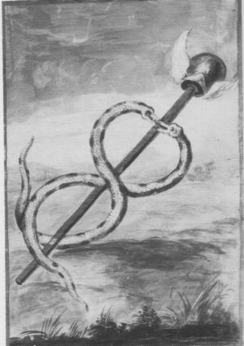
FIGURE XXIX
(figure du caducée, Livre d'Abraham Juif, in Fig. Hiér.)la FIGURE XXIX qui nous montre la véritable nature du signe des Gémeaux. Il faut y voir une séquence dynamique : dans un premier temps, les Soufres sont sublimés dans le Mercure et il s'agit des serpents entrelacés dont la nature mercurielle est annoncée par les ailes situées au niveau du casque, qui indiquent de quelle nature est cette singulière sublimation. Dans un second temps, les Soufres se corporifient, ce qui est indiqué par la barre du caducée ou encore par l'image du sceptre. C'est bien du reste ce que nous en dit Fulcanelli quand il fait remarquer que la Matière est appelée tantôt Soufre, tantôt Mercure selon la manière dont elle se présente.
Dioné est la mère d'Aphrodite [entrées récentes : 1,2,3,4,5,6]. Elle contracte des rapports avec Vénus, c'est-à-dire avec l'une des matières, contenant un sel de potassium, qui est nécessaire à la préparation du Mercure philosophique.
Téthys occupe l'une des premières places parmi les divinités primordiales de la Grèce. Son nom signifie « nourricière » et elle est un symbole de la fécondité des eaux. On voit à quel point elle joue un rôle majeur dans l'élaboration de la Pierre qui se joue dans l'eau de notre dissolvant, à la fois eau ignée et feu aqueux. Elle régit aussi la bonne marche des sources et des fontaines.
Téthys, fille du Ciel et de la Terre, épousa l'Océan, son frère, et devint mère de trois mille nymphes appelées les Océanides. On lui donne encore pour enfants, non seulement les fleuves et les fontaines, mais encore Protée, Ethra, mère d'Atlas, Persa, mère de Circé, etc. On dit que Jupiter ayant été lié et garrotté par les autres dieux, Téthys, avec l'aide du géant Egéon, le remit en liberté. Elle se nommait Téthys d'un mot grec qui signifie nourrice, sans doute parce qu'elle est la déesse de l'eau, matière première qui, suivant une croyance antique, entre dans la formation de tous les corps. Le char de cette déesse est une conque d'une forme merveilleuse et d'une blancheur d'ivoire nacré. Quand elle parcourt son empire, ce char, traîné par des chevaux marins plus blancs que la neige, semble voler à la surface des eaux. Autour d'elle les dauphins en se jouant bondissent dans la mer ; elle est accompagnée par les Tritons, qui sonnent la trompette avec leurs conques recourbées, et par les Océanides couronnées de fleurs, et dont la chevelure flotte sur leurs épaules au gré des vents. Téthys, déesse de la mer, épouse de l'Océan, ne doit pas être confondue avec Thétis, fille de Nérée et mère d'Achille.Les mythographes, sans le savoir, donnent à lire des trésors pour le cabaliste. Il est bien vrai que Téthys s'unit à son frère en un inceste que, certes, la morale doit réprouver, mais qui tient aux caractère singulier des deux membres du couple alchimique. Retenons que l'Océan tient le milieu du Ciel et de la Terre et que Téthys est la gardienne des fontaines. Nous en saurons assez pour comprendre qu'elle est aussi la gardienne, celle qui prend soin, de notre Mercure. Ce Mercure est aussi la matière première et nous dirons même, primordiale, et la croyance antique que l'Eau comme principe entre dans la formation de tous les corps fait partie de ces croyances primitives parfaitement exactes et dont la justesse ne laisse pas d'étonner et d'admirer à la fois la prescience et la perspicacité des Anciens [consultez à cet égard le Mercure de nature]. Téthys ordonne aussi de quel ordre est la sublimation philosophique puisque la couleur de son char, blanche, nous donne la clef de cette opération. Il n'est pas jusqu'au résultat final qui ne soit annoncé par l'évocation du dauphin, notre basileuV, dont la naissance est annoncée au son de l'airain. Et nous avons vu que l'airain ou « laton non net qu'il faut savoir blanchir » constitue le chemin obligé du ciel chymique par la voie sèche.Titan a été examiné dans d'autres sections. Il nous rapproche du sujet des Sages : il est, en effet ; ce satellite tire évidemment son nom des Titans [titan, proche de titanoV = chaux], fils d'Ouranos et de Gaïa ; Ouranos est le firmament qu'évoque Philalèthe ; Cronos [assimilable à l'épée du chevalier] libère les Titans du sein de la Terre [Gaïa]. Après la chute de Zeus, ils furent plongés dans le Tartare [TartaroV= Tartaros personnifié s'unit à Gaïa et engendre Typhée ( = Tujwn) ; le monstre de Cilicie fut précipité dans le Tartare par Zeus]. Il faut citer ici cet extrait de Gobineau de Montluisant :
"Le Globe de l'Eau et de la Terre nous désignent les Eléments inférieurs, tels que l'Eau et la Terre, dans lesquels le Feu céleste et l'humide radical très subtil, par le moyen de l'air, s'insinuent jusqu'au profond, et y circulent incessamment par leur propre vertu, sous la forme invisible d'un Esprit surcéleste et de vie, qui, selon David, Psaume 18, v. 6, 7, 8, a son Tabernacle dans le Soleil ; d'où par sa vertu énergique, comme un Epoux, qui se lève de sa couche nuptiale, il s'élance pour parcourir la voie des Eléments ainsi qu'un superbe Géant [allusion aux Titans ètitanoV, qui désigne de la chaux] qui mesure son élan et ses forces dans la vaste étendue de l'air ; sa sortie est du plus profond des Cieux; de là il procède, pénètre partout, et ne laisse rien privé de la chaleur de sa présence vivifiante..." [Explication très curieuse des Hiéroglyphes...]
Esprit Gobineau de Montluisant arrive à ce tour de force de résumer toute l'opération du 3ème oeuvre en quelques phrases. L'humide radical et le feu céleste résument la nature exacte du Mercure et en dévoilent les composants ; la circulation incessante est nécessaire à la cristallisation de la Pierre. Le tabernacle du soleil désigne la résidence du Soufre qui, par le moyen de l'Esprit firmamental [surcéleste], saura y accéder.
Hypérion - son cas est des plus intéressants car il indique le moyen de savoir comment envelopper les Soufres [àuper-ion]. Il fait partie des Titans et s'unit à soeur Théia, qui lui donna Hélios, dieu du soleil, dont Apollon conduit le char, Séléné, la Lune, et Eos, l'Aurore. Sa progéniture présente, on le comprendra sans peine, une importance exceptionnelle pour l'alchimiste. Selon d'autres poètes, Hypérion épousa Basilée, sa soeur, dont il eut donc pour enfants, Hélios et Séléné, tous deux remarquables par leur beauté et leur vertu, ce qui attira sur Hypérion la jalousie des autres Titans. Ceux-ci, ayant conspiré entre eux, convinrent de tuer Hypérion et de noyer ses enfants. Hypérion, il faut le noter, est souvent pris pour le soleil lui-même dans les poésies homériques. Quoi qu'il en soit, l'opération ourdie par les Titans n'est pas autre chose que la dissolution ou noirceur, qui intervient au début du 3ème oeuvre, lorsque les Soufres [Hélios et Séléné] sont dissous dans le Mercure, c'est-à-dire noyés dans l'eau mercurielle. La mythologie s'avère ici en tous points conforme à l'enseignement hermétique. Parler d'Hypérion, c'est parler de tout le processus alchimique. On se référera donc à notre plan général.
Pan - le nom de ce satellite nous rappelle la formule d'E. Canseliet au sujet du Mercure : « En To Pan », c'est-à-dire : « Un le tout » par laquelle le disciple de Fulcanelli rappelait l'unité de la matière et de l'esprit, en empruntant à Cléopâtre [dont le vrai nom est Alcyoné, Iliade, chant IX], l'Ouroboros de sa royale Chrysopée. Alcyone est, avec Céyx, le symbole de la fidélité conjugale ; nous y voyons les Soufres réincrudés, réunis de façon radicale. En héraldique, nous retenons qu'il s'agit du nom donné au cygne dans son nid voguant sur les flots et le cygne a des rapports avec le Mercure puisque Basile Valentin assure qu'il faut : « bailler un cygne à l'homme double igné ». Et le cygne est d'essence mercurielle : kuknoV est homonyme de KuknoV, fils de Poséïdon [lui-même divinité primordiale qui a en charge l'Eau].
Prométhée - il contracte des rapports avec la terre adamique et fournit le Feu élémentaire qui permet de nourrir la Pierre, dans l'oeuf philosophal ou dans l'athanor, comme on voudra. Créer le Feu élémentaire en tenant prisonnier un rayon de soleil était encore trop peu pour Prométhée puisque la légende assure qu'il tua et dépeça un taureau : d'un côté, la chair du taureau fut recouverte de sa peau et de l'autre côté, il posa les os sur lesquels il disposa la graisse de l'animal. Prométhée offrit à Zeus de s'attribuer l'une des deux parts, l'autre revenant aux hommes. Zeus attiré par la blancheur de la graisse choisit celle qui ne renfermait que les os. Est-ce hasard, la part qui revenait à l'homme était évidemment la plus corruptible, la plus corrompue ou périssable, celle sur laquelle se produit la putréfaction. Cette partie peut être assimilée à la noirceur et concerne la dissolution des Soufres [via l'incarnation de l'Âme dans la Chair]. L'autre partie est la blancheur et les os du taureau nous rappelle les « os de Grand'mère » dans la fable de Deucalion et Pyrrha, où la Terre est symbolisée, dans le cas présent, c'est la graisse de terre, c'est-à-dire du talc. Ce point a été examiné dans d'autres sections [1,2,3,4,5,6,7,8,9,10,] et paraît devoir être signalé à la sagacité de l'étudiant. Poursuivons : Zeus décida de se venger deux manières. D'abord, il voulut se venger des mortels et envoya Pandore, créée par Héphaistos, répandre tous les malheurs sur la Terre, en ouvrant sa fameuse boîte. il paraît que seule l'Espérance demeura au fond de la boîte. Par cabale, nous la rapprocherons de Vesper. Ensuite, Zeus se vengea de Prométhée en dépêchant Héphaistos qui enchaîna Prométhée où chaque jour, c'est bien connu, un aigle vint ronger le foie sans cesse renaissant du malheureux. Diodore de Sicile pense que cette fable peut être rapportée à l'inondation que le débordement du Nil causait aux terres qui avaient été mises sous le contrôle de Prométhée par Osiris, en attendant son retour. Les Aigles représenteraient le Nil et ses remous, submergeant les terres. Quoi qu'il en soit, Prométhée finit par obtenir la clémence de Zeus qui lui imposa la curieuse obligation de toujours porter au doigt un anneau de fer attaché à un petit morceau de roche. Voici l'opinion des mythographes sur Prométhée :
Prométhée remarqua que, parmi toutes les crétures vivantes, il n'y en avait pas encore une seule capable de découvrir, d'étudier, d'utiliser les forces de la nature, de commander aux autres êtres, d'établir entre eux l'ordre et l'harmonie, de communiquer la pensée avec les dieux, d'embrasser par son intelligence non seulement le monde visible, mais encore les principes et l'essence de toutes choses : et du limon de la terre, il forma l'homme. C'est Minerve qui intervient alors en offrant à Prométhée tout ce qui pourrait contribuer à sa perfection. C'est là que Prométhée dérobe le feu. Ce feu divin qu'il apporta sur la terre, Prométhée le prit, dit-on, au char du Soleil, et le dissimula dans la tige d'une férule, bâton creux. Irrité d'un si audacieux attentat, Jupiter ordonna à Vulcain de forger une femme qui fut douée de toutes les perfections et de la présenter à l'assemblée des dieux. Minerve la revêtit d'une robe d'une blancheur éblouissante, lui couvrit la tête d'un voile et de guirlandes de fleurs qu'elle surmonta d'une couronne d'or.Minerve apprit à cette femme l'art de faire de la toile. Enfin, tous les dieux lui ayant fait des présents, elle en reçut le nom de Pandore [du grec pan et doron, don]. [...] Le jour des noces, à rome, avait lieu une cérémonie curieuse et symbolique. On ordonnait à la nouvelle mariée de toucher au feu et à l'eau. « Pourquoi ? observe Plutarque. Est-ce parce que, entre les éléments dont sont composés tous les corps naturels, l'un de ces deux, à savoir le feu, est le mâle, et l'eau, la femelle, l'un étant le principe de mouvement, l'autre la propriété de substance et de matière ? Ou n'est-ce pas plutôt parce que le feu purifie, que l'eau nettoie, et qu'il faut que la femme demeure pure, et qu'il faut que la femme demeure pure et sans tache toute sa vie ? »A la question que se posait Plutarque, l'hermétiste répondra que cette femme correspond à la Vierge, symbolisant notre Mercure, dont les qualités fondamentales sont de pouvoir sécréter à la fois le feu et l'eau...Quant à l'intervention de Minerve, identifiée à l'Athéna des Grecs, elle se signale avant tout par l'apport d'une énergie et d'une inspiration aptes à induire un rayonnement spirituel étendu et constant. N'est-ce pas le propre du Mercure dont le but est de corporifier les esprits et de sublimer les corps ? Car ce rayonnement n'est autre que l'infusion lente et progressive du Soufre [Âme] dans le Sel [Corps], c'est-à-dire dans la toison d'or. On pourrait encore se référer à l'oiseau de Minerve [le coq] dont nous parlons dans le commentaire de l'Oeuvre secret de Jean d'Espagnet.Hélène - c'est le dernier des satellites de Saturne que nous étudierons dans le sens de nos recherches. Hélène est réputée être la fille de Jupiter et de Léda mais sa beauté fut cause de tant de malheurs chez les Grecs, qu'on a voulu voir en elle la fille de Némésis. Fille de la Nuit, portique du 3ème oeuvre qui commence par la dissolution des Soufres, Némésis pour tenter d'échapper à Zeus qui la convoitait, se métamorphosa en oie ; mais Zeus prit la forme d'un jars pour s'unir à elle. La déesse pondit un oeuf qui fut confié à Léda - qui ne serait donc que la mère adoptive d'Hélène - d'où sortirent les Dioscures et Hélène. Némésis est l'emblème du modérateur dans l'oeuvre et elle veille à ce que les orgueilleux mortels ne tentent pas de s'égaler aux dieux ; elle abaisse ceux qui ont reçu trop de dons ; elle conseille la modération et la discrétion : on la représente alors tenant son index devant sa bouche. Elle est donc l'équivalent d'Harpocrate. Et l'on retrouve dans l'iconographie alchimique bien des gravures où l'on devine l'influence persistante de Némésis.
Au-delà de Saturne pour les Anciens, c'était le mondes des fixes puisqu'ils ne connaissaient pas les trans-saturniennes. En astrologie, par exemple, autant on peut à la rigueur estimer que les Anciens ont eu le temps suffisant pour faire des repérages entre le parcours des planètes visibles et des événements survenus dans la vie de rois ou de peuples, autant nos astrologues modernes ne peuvent pas se prévaloir d'une telle connaissance a priori d'Uranus, Neptune et de Pluton. En toute logique, cet exposé devrait en rester là à notre grand regret. Heureusement, la mythologie vient à notre secours puisque les planètes trans-saturniennes ont été nommées comme les autres, du nom des dieux grecs et romains.¯
[sites consultés sur Uranus : http://jmm45.free.fr/planetes/uranus/uranus.htm - http://astropole.free.fr/planetes/uranus.htm - http://titione75.free.fr/univers/planete/titania.htm - http://systeme.solaire.online.fr/Annexe/Uranus.htm - http://www.home.ch/~spaw2681/junior/uran.htm -]
Septième planète du système solaire, elle fut découverte à l'aide d'un télescope par William Herschel en 1781. Herschel découvrit un petit objet rond doté d'une teinte verdâtre. Uranus avait déjà été observée plusieurs fois auparavant mais elle fut ignorée et cataloguée comme simple étoile [la première observation enregistrée d'Uranus date de 1690 lorsque John Flamsteed la catalogua comme l'étoile 34 Tauri]. Herschel l'appela « the Georgium Sidus » [la planète Géorgienne] en l'honneur de son mécène, Georges III roi d'Angleterre ; d'autres l'appelèrent « Herschel ». Le nom d'Uranus fut tout d'abord proposé par l'allemand Johann Bode en conformité avec les noms des autres planètes mais il ne fut communément admis qu'à partir de 1850.
La plupart des planètes effectuent leur rotation sur un axe presque perpendiculaire au plan de l'écliptique mais l'axe d'Uranus est presque parallèle à ce plan. Lors du second passage de Voyager, le pôle sud de la planète était dirigé vers le Soleil. Les régions polaires d'Uranus reçoivent ainsi plus d'énergie du Soleil que les régions équatoriales. Uranus est cependant plus chaude à l'équateur qu'aux pôles. Le mécanisme lié à ce phénomène est encore inconnu. Uranus et Neptune possèdent de nombreux points communs avec les noyaux de Jupiter et Saturne sauf l'enveloppe massive d'hydrogène liquide métallique. Il semblerait qu'Uranus ne possède pas de noyau rocheux comme Jupiter et Saturne ; ses éléments seraient en fait répartis plus ou moins uniformément. Uranus possède quatre gros satellites [Obéron, Titania, Umbrel et Ariel] ainsi qu'un satellite plus petit mais très curieux, Miranda d'aspect très chaotique outre d'autres satellites plus petits dont certains sont qualifiés d'irréguliers. Uranus effectue une rotation autour de son axe en 18 heures, mais son axe de rotation étant situé dans le plan orbital, la « nuit » dure 42 ans [la moitié de la durée de sa rotation autour du soleil qui est de 84 ans]. Les astronomes se posent encore plusieurs questions au sujet d'Uranus : Pourquoi Uranus émet-elle plus d'énergie qu'elle n'en reçoit du Soleil comme les autres géantes gazeuses ? Son intérieur est-il froid ? Pourquoi son axe est-il si incliné ? Est-ce le résultat d'une énorme collision ?
à Uranus ou Caelus, en grec OuranoV, le Ciel, était selon Hésiode, fils d'Ether et de la Terre. Il épousa Titée, c'est-à-dire la Terre ou Vesta, qui doit être distinguée de la Vesta qui est déesse du feu et de la virginité. Uranus prenait en aversion tous ses enfants : dès leur naissance, il les renfermait dans un abîme et ne leur laissait pas voir le jour. Ce fut là le motif de leur révolte. Saturne, qui succéda à son père Uranus, montra la même cruauté que lui. Quant à Titée, femme d'Uranus, elle fut la mère des Titans [Titan, Hypérion, Rhéa ou Cybèle, Thémis, etc.]. Elle eut aussi du Tartare le géant Typhée qui se dinstingua dans la guerre contre les dieux. Le ciel [caelum] signifie aussi la voûte et a valeur d'axe [axis è axe, char, pôle nord, voûte du ciel] ou se rapporte à un point fixe, central. [le ciel est par ailleurs homonyme, en latin du burin ou ciseau [caelum] par lequel on travaille le marbre statuaire]. Or nous avons vu qu'Uranus avait cette particularité unique d'avoir un axe de rotation pratiquement parallèle au plan de l'écliptique et que la nuit, en conséquence, y durait 42 ans. Cette durée exceptionnelle n'est pas sans nous rappeler le titre d'un ouvrage anonyme, la Lux obnubilata...ainsi que le Chaos primordial, dominé par les ténèbres. Et, au vrai, le processus uranien semble se situer à l'origine des choses, et comme un instant de la colère du Chaos. C'est l'éveil du feu primordial en même temps qu'une poussée visant à une élévation dans le ciel. Les enfants d'Ouranos sont à l'image de médiateurs intervenant dans le procesus alchimique.
à L'exemple qui nous paraît le plus probant est celui par lequel, partant des Titans, nous parvenons à la chaux, en grec titanoV. Ce terme signifie aussi gypse ou peut-être une sorte d'émail ; il a aussi valeur de marbre ou d'éclat de marbre. Le rapport phonétique est évident avec les Titans ou Titan[fils d'Ouranos et de Gaïa, cachés par Ouranos dans le sein de la terre d'où les libéra Cronos. Après la chute de Cronos et l'avènement de Zeus, ils se révoltèrent contre lui et furent plongés dans le Tartare. Zeus les délivra par la suite] ;
on ne peut pas hésiter à faire le rapprochement entre la chaux et ces Titans, enfants de la terre primitive, ce qui est exactement le cas pour la prima materia dont nous parlons dans la section qui s'y rapporte. Le Tartare -TartaroV- s'unit à Gaïa et engendre Typhée, autre allégorie. Typhée -TujvV- se dressa isolément contre Zeus et fut précipité selon les versions sous le Tiphaonion ou fut foudroyé dans le Tartare. Par cabale phonétique, on peut rapprocher TujvV de TijuV, c'est-à-dire de Tiphys, pilote du vaisseau Argo.
à Un autre exemple est celui d'Aphrodite : La naissance d'Aphrodite est bien connue : Cronos, à l'instigation de sa mère, Gaïa, mutile de sa harpê son père Ouranos et jette dans la mer les débris de la virilité paternelle. Ceux-ci surnagent et il s'en dégage une blanche écume d'où naît Aphrodite. Portée par le souffle de Zéphyre, elle aborde le rivage de Chypre où elle est parée de riches vêtements et de bijoux merveilleux.
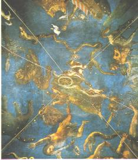
FIGURE XXX
(le ciel firmamental ; salle du zodiaque, détail, Lorenzo Costa le Jeune, 1579 ;
palais ducal, Mantoue, Italie)Le firmament [ouranoV] renvoie aussi au firmament de Philalèthe, qui semble donc être la surface du compost qui, de liquide, doit progressivement s'empâter. Il s'agit donc d'un firmament « philosophique ». Le firmament [ouranoV] renvoie aussi, il est vrai, au dieu qui fut à la fois le fils et l'époux de Gaïa ; il détestait tellement ses enfants qu'il les faisait enfermer au fond des Enfers dans le Tartare [le « truc » de l'oeuvre, à en croire E. Canseliet...] ; la mutilation d'Ouranos mit un terme à ce massacre en introduisant au monde, par l'apparition d'Aphrodite, l'ordre et la fixité des espèces. Ouranos est envisagé ici comme le Mercure visqueux [Mercure filant] qui, d'un coup de faucille porté par Cronos, perd sa faculté de « sécrétion indéfinie », c'est-à-dire sa nature humide : l'eau permanente peut alors commencer à se congeler et nous renvoyons le lecteur à l'allégorie du rémora et de la salamandre de De Cyrano Bergerac. Nous ferons en outre remarquer au lecteur qu'il existe un lien de cabale entre Uranus et Aphrodite, car Ourania « la Céleste » est le surnom d'Aphrodite. Nous ne pouvons donc plus douter de ce qu'Uranus incarne, en puissance, tous les pouvoirs du Mercure philosophique et qu'il représente le « Ciel chymique » en devenir, annonçant par là, l'idée de la sublimation philosophique, opération par laquelle les Soufres se subliment dans le Mercure. Jean-Pierre Vernant, dans un livre remarquable, L'Univers, les dieux, les hommes [Seuil, 1999] résume la situation d'Ouranos d'une phrase lapidaire qui nous paraît définitive : « Le ciel divinisé enfanté par Gaïa » et cette phrase peut tenir lieu de véritable Sommaire philosophique. Elle permet de donner une image du firmament des alchimistes, où les dieux sont projetés dans les constellations, à l'image de nos Soufres sublimés dans le Mercure, firmament reposant sur le piédestal de la divinité chthonienne, de la Terre primitive, que l'artiste doit élire au début du travail.
[sites consultés pour Neptune : http://planetscapes.com/solar/french/neptune.htm - http://rd.lycos.de/fcgi-bin/RedirURL.fcg - http://www.ville.montreal.qc.ca/planetarium/Information/SystSol/neptune.html - ]
Uranus pose des problèmes d'identification : comment saisir une sublimation virtuelle ? Alors même que la sublimation est elle-même une dissolution qui ne dit pas son nom ? Neptune est d'un abord plus aisé. Identifié à Poséidon, c'est la divinité de l'humidité. Fils de Cronos et de Rhéa, il fait partie des divinités primordiales entre lesquelles les Eléments furent partagés. On connait Poséidon pour ses amours avec des immortelles, comme Déméter ou même avec des monstres comme Méduse. Avec Apollon, il contribua à édifier les murailles de Troie. Au reste, pendant la guerre de Troie, il prit le parti des Troyens. Les marins le vénèrent et l'implorent afin d'obtenir une bonne traversée. Son pouvoir s'étend non seulement sur l'élément marin, mais aussi sur les eaux douces et les nymphes et on peut trouver aisément un parallèle entre son domaine d'activité et celui de Téthys. Neptune gouverne son empire avec un calme imperturbable, sur lequel doit se régler l'alchimiste, dans le degré de feu qu'il impose à son Mercure. Il est d'un certain intérêt de remarquer qu'on représente Neptune en taureau dans ses amours avec une fille d'Eole ; sous la forme du fleuve Enipée pour rendre Iphiomédie mère d'Iphialte et d'Otus ; sous celle d'un bélier, pour séduire Bisaltis ; sous celle d'un cheval pour tromper Cérès ; enfin sous celle d'un grand oiseau dans l'intrigue de Méduse, et d'un dauphin avec Mélantho. Eole, on le sait, est le dieu des Vents, de ces vents par lesquels notre artiste tâche d'évoluer sur son bateau Argos : un des secrets de l'oeuvre consiste à savoir à quelle époque il faut profiter du soutien de Borée ou du soutien de Zéphyre. Rappelons que Borée est un vent du Nord, froid et rigoureux tandis que Zéphyre est un vent d'Est qui apporte le fraîcheur et la pluie bienfaisante. Jeune homme ailé, il annonce l'humide printemps. On rapporte que Poséidon est père de Pélias dont les rapports avec l'Art sacré sont étroits : Pélias fut exposé à sa naissance avec son frère Nélée et sauvé par des bergers. Tous deux apprirent plus tard qu'ils étaient d'origine divine, et s'étant rendu à Iolcos, ils délivrèrent leur mère persécutée par sa belle-mère Sidéro. On raconte ensuite que plus tard, s'étant rendu roi de Iolcos, Pélias vit arriver Jason, fils de son demi-frère Aeson, qui réclama le royaume. Pour le débarasser de ce témoin gênant, Pélias l'envoya conquérir la Toison d'or en Colchide. Lorsque Jason revint, son épouse Médée incita les fils de Pélias à couper leur père en morceaux et à le faire bouillir sous prétexte de le rendre immortel. Examinons les correspondances hermétiques de ce tissu allégorique :
à L'exposition de Pélias et de Nélée correspond à l'exposition à l'air de pyrites martiales ou d'alun. Dans le premier cas, on cherche à obtenir du sulfate de fer ou vitriol vert et dans l'autre, on pratique l'alunation, c'est-à-dire que l'on extrait l'alun de sa minière. Dans un cas comme dans l'autre, c'est une matière soufrée qui nous occupe et l'on pourrait se poser des questions quant à la raison qui nous permet ainsi de lier Pélias avec un sulfate. Ce serait oublier la flamme livide avec laquelle brûle le soufre qui, comme dit Pline « communique dans l'obscurité, aux yeux des figures des assistants, la pâleur des morts », l'avaient fait choisir de bonne heure pour l'accomplissement de certaines cérémonies religieuses. Compte tenu de sa prétendue origine, on lui supposait aussi une vertu purificatrice ; car le soufre passait pour « renfermer en lui une grande force de feu » [Pline, Hist. Nat. XXXV, 15]. Le soufre fut donc pendant longtemps regardé comme une condensation de la matière du feu, dont on fit plus tard une entité sous le nom de phlogistique. La liaison entre Pélias et le soufre est bien sûr de pure cabale, par le biais d'une assonance phonétique entre PeliaV et pelioV [être livide]. Et c'est le nom de Nélée [NhleuV] qui donne la clef de la matière en dévoilant la véritable identité d'Arès, par le biais d'une autre assonance entre NhleuV et nhleiowV [sans pitié, impitoyable], qui est le propre des vitriols que l'on utilise comme premier agent par la voie sèche [àtartre vitriolé]. Le fait que Nélée et Pélias aient été sauvés par des bergers [voyez ce que Jules Pelouze dit sur la teinture et sur les propriétés de la laine] est un indice supplémentaire pour notre hypothèse.
à Sidero est la marâtre qui infligea de mauvaix traitements à sa belle-fille et qui fut égorgée sur l'autel d'Héra par Pélias. Il n'est, là, point besoin de cabale pour deviner en Sidhrw, le sel de fer qui voile par tradition l'identité d'Arès, c'est-à-dire l'un des soufres rouges qui permettent d'orienter la Pierre. Le fait que Sidéro ait été tuée dans l'autel d'Héra n'est point pour surprendre : Héra, dans l'une de ses attitudes, est représentée tenant dans une main la pomme de grenades[l'Airain des sages, puisque la pomme peut se traduire, en grec, par le mot de brebis. Aussi la pomme de grenade n'est-elle autre chose que le Rebis en son premier état par les mots :mhlon et roia - voir à ce sujet la section Matière].
Or, la grenade désigne expressément le Soufre rouge et dans le cas présent, l'hématite, par SideroV.
à l'hisoire des Argonautes peut faire l'objet d'une section entière. Pour le moment, nous renverrons le lecteur à ce que nous en avons dit dans la section chimie et alchimie.
à le projet de dépeçage de Pélias nous renvoie au démembrement du Corps qui figure dans de si nombreuses gravures. Le mythe d'Osiris se ressent de la même origine. Cet arcane, nous l'avons évoqué dans la section prima materia à l'occasion de l'allégorie de Merlin. Nous dirons ici que la « cuisson du vieillard », c'est-à-dire la Grande coction, représente la dissolution des Soufres dont l'un, appelé encore Soufre blanc par les uns et Sel par les autres, n'est autre que le Corps. Cette matière doit être rajeunie, « réincrudée ». Le démembrement du corps est requis pour la purification par laquelle va s'opérer le rajeunissement et la renaissance qui conduira à la gloire éternelle : l'escarboucle alchimique. A cette occasion, nous ne pouvons résister au plaisir de montrer au lecteur un rare exemple de tableau alchimique dont nous démonterons toute la richesse symbolique.
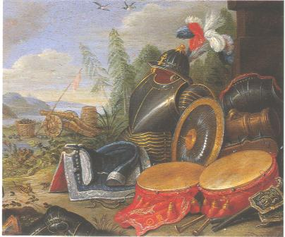
FIGURE XXXI
(Trophée d'armes, Van Kessel, Dunkerque)Le peintre de ce superbe tableau aurait été bien étonné de l'interprétation que nous allons donner de son oeuvre, et comme d'habitude, c'est avec un grain de Sel qu'il faudra la comprendre. Car ce tableau regorge d'objets très chargés de symbolisme hermétique et nous pourrions presque dire qu'il s'agit d'un jeu d'alchimie en pièces détachées à l'instar de ces maquettes de bâteaux à voile qui font la joie des amateurs. Nous repérons un panache tricolore, un casque, une armure en pièces, un bouclier, deux tambours, une selle ; plus loin au second plan, un canon en ordre de marche. Au ciel, deux oiseaux qui volent à tir d'aile. L'armure, bien qu'elle soit en acier, nous la croirons faite d'airain et elle correspond au Corps dépecé qu'on vient de voir. Le panache tricolore est blanc, rouge et violet. Ce sont les couleurs qui se succèdent dans l'oeuvre et qui suivent la noirceur. Cete noirceur est symbolisée par cette armure d'airain démontée. Le casque représente le mode d'emploi de cette armure singulière [rappelons que les termes cado et cassito sont pour nous homonymes et qu'ils expliquent la relation au casque - cassis - omniprésent dans la tradition alchimique séculaire].
Le bouclier tire aussi son origine de l'Air, c'est-à-dire de Zeus : en effet, Zeus possédait un bouclier qui avait été confectionné par Héphaïstos. Il était constitué de la peau de la chèvre Amalthée [dont nous avons eu déjà l'occasion de parler dans le commentaire qui accompagne les Figures Hiéroglyphiques], garnie de franges [kraV = tête, i.e. Caput èkrasiV = alliage] bordée de têtes de serpent et portait en son milieu une tête de Gorgone, sans doute Méduse [cf. la section des Gardes du corps]. Le bouclier de Zeus ou égide avait la valeur d'une tempête, d'une nuée orageuse. Mais le bouclier que nous présentons est différent et l'on remarque la structure radiaire qui émane de son centre ou omphalos. Cette structure radiaire s'apparente à un filet, par proximité du point fixe, au pôle, qui prend donc les caractères d'une étoile ; celle-ci rayonne sur le Compost et Fulcanelli nous assure que la surface du compost est composée de lignes entre-croisées qui ont la valeur hermétique et le sens d'un filet qui retient. L'étoile des Mages possède ici le même sens que le rémora hermétique et que notre bouclier. Ce filet ou « agrégon » est reproduit sur presque toutes les images de la Pierre sacrée et figure le « nombril » de la Terre hermétique. Cet hiéroglyphe céleste, des monnaies de Delphes et de Sardes nous le montrent associé au serpent ou dragon, qui n'est jamais, nous le savons, que l'expression de la signature mercurielle du sujet initial. D'après J. Richer, le système
grec, des plus subtils, aurait été d'établir des sanctuaires en des lieux privilégiés, situés
sous des constellations remarquables ; puis de réunir ces points entre eux de manière
à réaliser un quadrillage. Ainsi s'exprimerait une sorte de topologie hermétique,
pendant de l'agriculture céleste, dont le point de départ est bien le dragon. Le dragon
était la constellation qui occupait, nous l'avons déjà noté, le milieu du ciel et dont l'étoile
alpha n'était autre que l'étoile polaire à l'époque de la construction des pyramides. La selle permet à l'artiste de diriger confortablement sa cavale mais elle cache aussi l'un des secrets de la préparation du Mercure que nous ne pouvons aborder ici, par souci de décence. On se contentera de dire que cette selle est liée au canon par un sel dont nous avons maintes fois parlé. Quant à ce canon, le lecteur sagace qui aura fait le rapprochement entre la selle et notre sel n'aura aucune peine à identifier cette Magnésie des Sages, cette Terre damnée, avant le renversement des pôles...On se permettra d'attirer expressément l'attention de ceux qui voudraient oeuvrer au creuset sans discernement ou précipitamment sur un caisson [5ème caisson de la 3ème série] du château de Dampierre-sur-Boutonne, que commente Fulcanelli : il figure aussi une pièce d'artillerie du XVIe siècle. Le phylactère porte la phrase :
.SI.NON.PERCVSSERO.TERREBO. :
Si je n'atteins personne, du moins j'épouvanterai.Le commentaire de Fulcanelli attire l'attention d'un oeil averti sur la cabale hermétique :
"...leurs descriptions ne sont au fond qu'un bruit de paroles confuses, vaines et sans portée..."
et permet sans problème l'identification de ce sel dont les Adeptes nous disent qu'on ira le retirer « même du fumier », tellement il est commun ; l'absence de contrôle du processus d'obtention de ce sel pourrait conduire à une déflagration catastrophique et le danger a été signalé par nos alchimistes modernes.
Il nous reste à évoquer les deux tambours. Le tissu qui les entoure est disposé en sorte qu'on croirait presque qu'il a des propriétés liquides ou visqueuses. Peut-être est-ce là un trophée d'armes ayant appartenu à un prêtre de Cybèle ? Quoi qu'il en soit, il est aisé de voir quelles sont les matières que ces tambours symbolisent : ce sont les Soufres préparés, juste au moment de leur infusion dans le Mercure, en un instant où ils sont « fluents » et pas encore mis en pièces comme l'indique le résultat de la dissolution, symbolisé par l'armure. Les oiseaux évoquent les colombes de Diane, c'est-à-dire les chaux métalliques spiritualisées et sublimées dans le Mercure qui leur sert donc de tombeau tandis qu'il tient le rôle d'incubateur, de matrice, pour la Pierre.Il nous reste à dire quelques mots sur la planète Neptune. Elle apparaît au télescope sous la forme d'une minuscule image d'un vert bleuâtre. La sonde Voyager 2, qui a voyagé pendant 12 ans avant d'atteindre Neptune, a permis de montrer une gigantesque sphère bleue striée de bandes concentriques sombres ou claires. La sonde a révélé un monde turbulent, avec des tourbillons géants, rivalisant avec ceux de Jupiter
[Neptune et Jupiter sont liées dans l'astrologie traditionnelle, qui attribue la domination de ces deux planètes au signe des Poissons, mais le lecteur qui a lu notre section sur l'astrologie sait ce que nous inspire ces soi-disant maîtrises, qui ne valent que dans le monde allégorique de l'alchimie].
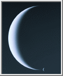
FIGURE XXXII
(Neptune, dernière image transmise par Voyager 2)Cette figure de Neptune, sous la forme d'une Lune, est à l'image même du Mercure des alchimistes. Quelqu'un l'a-t-il réellement vu ou la reverra-t-il un jour dans sa vie sous cette forme singulière ? Ce sont les secrets du monde mythique de Poséidon, dieu de l'humidité, qui sont ici scellés...et il nous reste encore des choses à écrire sur ce monde étrange.
Par exemple, nous devons signaler que les aruspices offraient particulièrement à Poséidon le fiel de la victime par la raison que l'amertume convenait aux eaux de la mer : le fiel désigne ici le mot ioV [venin, suc, poison]. Neptune est habituellement représenté tenant son trident de la main gauche, un dauphin de la main droite et posant ses pieds sur la proue d'un navire. Le trident représente le feu secret qui permet la dissolution des Soufres en humide radical métallique, ce que certains alchimistes ont voilé sous le symbole de la salamandre [Lambsprinck, Maier, Fulcanelli], c'est-à-dire de cette matière qui ne peut être détruite même au 4ème degré de feu et que seuls les physiciens du XXe siècle ont pu détruire par la fission nucléaire. Le dauphin est le basileuV de l'oeuvre, le petit roi, la fève du gâteau des Rois. Quant à la proue du navire, elle nous signale le mât et la voile d'artimon qui, seule, reçoit l'effort du vent : littéralement, artemo signifie la voile de proue, le mât, et peut être rapproché d'Artemis. Il nous reste à évoquer Amphitrite, l'épouse de Poséidon, qui est dépeinte se promenant sur les eaux dans un char en forme de coquille, rappelant la mérelle des pélerins de Compostelle [lexique], cachant une matière que nous avons évoquée tant de fois qu'il nous paraît inutile d'en reparler ici.La mythologie nous apprend que, s'étant rencontrés aux noces de Cadmos et d'Harmonie, Iasion et Déméter s'unirent sur un champ trois fois labouré et que Pluton ou Ploutos fut le fruit de leurs amours. Nous avons vu [Matière] que Cadmos symbolisait notre artiste au même titre qu'Hercule. Le champ trois fois labouré fait référence à la triple sublimation que la matière doit subir au début de l'oeuvre. Presque tous les alchimistes insistent sur l'opération mais nous mettons en garde l'étudiant qui voudrait prendre au pied de la lettre cette « triple sublimation ». Certes, on rencontre dans l'oeuvre des substances qui, pour atteindre un degré de pureté suffisant, doivent être sublimées plusieurs fois. Tel semble être le cas du Soufre blanc : Un texte remarquable, publié sous le pseudonyme de Tripied, Du Vitriol philosophique et de sa préparation [Chamuel, Paris, 1896] donne des indications utiles à cet égard. Dans la matière première, voici ce qu'écrit l'auteur :
"Nous aurons donc, dans ce cas un Vitriol Martial ; nous pouvons obtenir de la même façon celui de Vénus, ainsi que la véritable matière si cachée des anciens qui s'obtenait d'une pyrite martiale alumineuse, ou plus brièvement du sulfate de fer et d'alumine ; ce que veut nous enseigner Huginus à Barma, lorsqu'il nous dit au commencement de sa Pratique : Prenez de la vraie terre bien imprégnée des rayons du soleil, de la lune et des autres astres."
Ce passage indique nettement de l'alun double d'aluminium et de fer. Poursuivons : plus loin, Tripied donne la manière de traiter ce sulfate d'alumine ; le texte, à la fois emprunt de modernité et surrané, rejoint de nombreux manuscrits alchimiques :
"De Locques, dans son « Rudiment de Philosophie » nous donne le procédé ci-contre:
« On met le vitriol à une chaleur fort modérée, où rien ne peut monter que le phlegme , c'est-à-dire qu'il faut avoir soin de ne pas enlever l'eau de constitution, et ce tant qu'il demeure sec comme la pierre d'éponge ; on lui redonne son phlegme, onredistille, et ce par trois fois; à la seconde, il prend la couleur d'une belle émeraude, et à la troisième il devient blanc comme du beurre. On corrompt cette matière au fumier, pendant quarante jours, puis on distille l'esprit doux qui vient par vénules comme l'esprit de vin, puis l'esprit acide qui distille sous forme de fumées blanches, et enfin l'huile rouge par une forte expression de feu, sans laquelle elle ne monte pas »,
pages 83 et 84: 2e livre. En cet endroit, De Locques n'a pas été assez explicite, ce qui lui arrive, du reste, la plupart du temps. Si on le prend à la lettre et qu'on mette le vitriol tel qu'il est, à se dessécher, on n'obtiendra rien de bon, car lorsqu'on reversera le phlegme sur ledit vitriol, celui-ci ne se dissolvera point, il n'y aura par suite que la surface qui sera attaquée par les humectations et dessiccations successives, et tout le dedans de la cornue ou cucurbite restera intact. Vous aurez donc perdu votre temps et vos peines, ce qui m'est arrivé la première fois. Au lieu que si vous dissolvez préalablement tout le vitriol en eau distillée ou eau de pluie, vous pourrez à chaque cohobation le redissoudre de nouveau, et par là broyer suffisamment la matière, pour qu'au bout de deux ou trois opérations, elle finisse par tomber en consistance de beurre ou guhr le tout formant une pâte homogène, que vous n'aurez plus qu'à soumettre à la putréfaction."
Il ne peut s'agir, ici, que de la préparation de l'alumine hydratée. Découverte par Marggraf en 1754, l'alumine hydratée est un précipité incolore gélatineux, soluble dans les acides et dans les alcalis. L'alumine en gelée retient énergiquement les matières colorantes, pour donner des laques ; cette propriété est mise à profit pour le mordançage en teinture. D'après Tripied, à ce moment du grand oeuvre :
"C'est la seule matière qui contient à elle seule les soufres blanc et rouge nécessaires pour la pierre. C'est là ce vitriol qui distillé soit avec le salpêtre seulement, soit avec le salpêtre et cinabre, nous donne ce menstrue puant dont il est parlé dans la Clavicule de Raymond Lulle, le Trésor des trésors de Paracelse, et le Composé d'Albert le Grand, ouvrages traduits du latin en français par A. Poisson."
Le sel d'oseille [oxalate acide de potasse où opèrent la cohobation en trois sublimations ainsi que l'indiquent les textes classiques] est une autre substance fort intéressante : lorsqu'on le
chauffe, il se décompose en décrépitant puis il se ramollit et, enfin, quand il entre en pleine fusion, il se transforme en carbonate en totalité. Quand l'oxalate est bien pur, le carbonate qui en résulte est parfaitement blanc et ne contient pas de charbon : c'est donc un moyen de production de carbonate de potasse [alkali fixe] quand on ne dispose pas de tartre. Dans son Cours de chimie, Gay-Lussac en dit ceci, à propos de l'acide oxalique :L'acide oxalique existe dans un grand nombre de végétaux, et particulièrement dans les oxalis [murex] ; c'est de là qu'il tire son nom. On l'extrayait de cette plante où il est uni à la potasse,et il formait le sel d'oseille du commerce. On a trouvé depuis l'acide oxalique dans les Salsola soda, plantes qui croissent sur les côtes d'Espagne, et en France sur les côtes de la Méditerranée...Le bois, la laine, donnent de l'acide oxalique dans beaucoup de circonstances. On le prépare en traitant le sucre par l'acide nitrique affaibli. On distille ; il se forme de l'acide malique et de l'acide oxalique : l'acide malique se forme le premier. On distille une seconde, une troisième fois, jusqu'à ce qu'on ait que de l'acide oxalique pur. Faire ainsi des distillations successives, est ce que l'on appelle cohober, recohober...Extrait du Cours de chimie de Gay-Lussac, chapitre vingt-quatreMais revenons à Ploutos. Il a d'abord été identifié à la Richesse et c'est cette attribution qui nous semble la mieux convenir dans sa correspondance alchimique. Pluton n'a été, en effet, que secondairement assimilé au dieu Hadès, le souverain des Enfers et c'est chez les Romains qu'il prit ce caractère redoutable qui ne semble pas avoir existé chez les Grecs. On retiendra d'abord pour notre propos qu'on lui sacrifiait des animaux au pelage noir, brebis ou porcs noirs et qu'on vouait à son courroux les condamnés à mort, c'est-à-dire, dans le jargon argotique, les chaux métalliques. Mais encore une fois, cet épithète semble davantage convenir à Saturne-Cronos, et nous retiendrons surtout qu'il représentait la personnification divine de la fécondité de la terre, le garant de l'abondance des récoltes et qu'on lui donnait le nom de Dis Pater, « père des richesses ». Il ne devient dieu des Enfers qu'à dater du Ve siècle av. J.-C. ; on le connait aussi comme un fleuve charriant de l'or. Quoi qu'il en soit, son épouse est assurément Perséphone que nous avons évoquée à plusieurs reprises dans cette section.
Ploutos symbolise avant tout la richesse ou le trésor du coeur, c'est-à-dire de l'Âme. Il contracte donc des rapports avec le Soufre rouge alors qu'on aurait cru, de prime abord, que sa symbolique aurait davantage relevé du séjour des morts et du monde souterrain. Et c'est bien par là, effectivement, que les deux versions de Pluton se rejoignent. Ploutos incarnerait alors nos trésors enfouis, les richesses enfouies, à découvrir pour que l'Artiste puisse accomplir l'élévation spirituelle qui est le propre de la sublimation des Soufres dans le Mercure. Il nous faut revenir à ce mot, qui caractérise au mieux l'une des matières de l'oeuvre, exprimé par l'acronyme « V.I.T.R.I.O.L. »[ pour : Visitare Interiora Terrae Rectificando Invenies Occultum Lapidem è Explore le tréfonds de la Terre ; en purifiant tu trouveras la Pierre cachée]
et qui représente la clef de l'oeuvre en même temps qu'il explique la relation à Ploutos et aux richesses des cavernes. Ces cavernes voilent le vase de nature dans lequel l'alchimiste cuit ses Soufres préparés et Il est exact, par ailleurs, que le sel vitriol se trouve « es cavernes de la Terre » comme le disait Basile Valentin et qu'il est imprégné d'une humeur métallique [elle-même symbolisée par Junon]. Artéphius ajoute dans son Livre secret :
"Et en ceci est notre sublimation philosophique, non au Mercure vulgaire inique qui n'a nulles qualités semblables à celle desquelles est orné notre Mercure extrait de ses cavernes vitrioliques [...]"
Artéphius est suivi par le Cosmopolite qui tient un discours à peu près semblable, si ce n'est qu'il semble mettre en communication davantage le Ciel et la Terre :
"C'est une Pierre et non Pierre, En laquelle tout l'Art consiste ; La Nature l'a faite ainsi, Mais elle ne l'a pas encore menée à perfection - Vous ne la trouverez pas sur la Terre, parce qu'elle n'y prend point croissance : Elle croît seulement ès cavernes des montagnes. Tout cet Art dépend d'elle : Car celui qui a la vapeur de cette chose, A la dorée splendeur du Lion rouge. Le Mercure pur et clair : Et qui connaît le Soufre rouge qui est en lui, Il a en son pouvoir tout le fondement." [La Nouvelle Lumière chimique, discours traduit de vers]
Ce « discours traduit de vers » est un rébus qu'on trouve à déchiffrer en lisant J.-F. Robinet :
" [...] La physique qui admet pour la matière de toutes sortes de lapidifications, un suc pierreux tenu en dissolution dans l'eau souterraine qui lui sert de véhicule, varie beaucoup sur la nature de ce suc. On épuise toutes les ressources de l' imagination, et l'on ne dit rien de vraisemblable. Ce suc n' étoit chez les anciens que l' eau chargée de parties terrestres plus ou moins grossieres, qui se pétrifioit en se desséchant. Il est devenu, chez les modernes, une matiere crystalline, une terre vitrifiée, un sable très-fin lamineux, un acide terreux coagulé avec des parties salines et métalliques. Ce suc, quel qu'il soit, déposé dans différens lits de terre, y forme des crystaux et des pierres précieuses, des caillous et des marbres, des grés et des pierres communes" [La Nature]
On retrouve en substance ce qu'écrit le Cosmopolite et cette « pierre et non pierre » est à l'image de ce « suc pierreux » qui porte en soi le ferment des pierres cristallines et que l'on ne peut trouver que dans les entrailles de la Terre. Ces trésors enfouis sont représentés par les agents de minéralisation qui agissent conjointement avec l'eau, au contact des roches calcaires et des roches trapéennes, pour former les pierres précieuses ; on citera avant tout les chlorures [Voie humide], la fluorine [ spath fluor - fluorite] et certains sulfates [tartre vitriolé]. On doit rappeler ici que le nitre [nitrate de potasse] proprement dit se retirait en énormes quantités des cavernes de l'Asie, appelées colyces. Enfin, ces cavernes ne sont pas étrangères à un animal : la taupe. Si nous examinons son symbolisme, on lui attribue quelques traits lucifériens. Selon une tradition qui a court, paraît-il, en Auvergne, le diable [Lucifer, l'étoile du matin par cabale], tentant de créer l'homme, ne réussit qu'à créer la taupe, familière des cavernes obscures où se terre la Prima materia. Mais il y a plus : un mythe grec explique à la fois la cécité et l'indiscrétion de la taupe : elle serait la métamorphose de Phinée. Fils d'Agénor et roi de Salmydessos en Thessalie, Phinée fut aveuglé par les dieux pour de multiples raisons. Il aurait en effet exercé avec trop de zèle ses dons de prophétie en révélant à Phrixos la route du retour en Grèce. On sait que ce mythe est inséparable de celui de la Toyson d'or et de la légende des Argonautes. Nous reviendrons ultérieurement sur cette légende des Argonautes, déjà abordée dans la section chimie-alchimie mais qui mérite assurément d'autres développements. Selon une autre légende, Phinée aurait préféré une longue vie à la vue et aurait été plongé dans l'obscurité [le parallèle avec le Mercure -c'est le cas de le dire- saute aux yeux : Phinée symbolise l'homme double igné qui disparaît provisoirement dans le fondant]. Quoi qu'il en soit, les Boréades et Zétès le délivrèrent de ses souffrances au cours de l'expédition des Argonautes. En récompense, Phinée leur aurait ouvert la route pour atteindre la Colchide, via le Pont-Euxin et surtout, les Symplégades, roches magiques qui broyaient les vaisseaux.
Dans sa Toyson d'or, Salomon Trismosin nous donne une autre vision de la genèse des minéraux au sein de la terre :"elle [la Terre] enserre en son corps, dont s'élèvent quelquefois des vapeurs froides, nébuleuses et aériennes, qui naissent de la mixtion de ces deux régimes contraires desquelles renfermées et arrêtées dans la terre, plusieurs autres vapeurs consécutives naissent par la longueur du temps, tellement fortes sur la fin, qu'elle est souvent contrainte de leur faire voie pour les laisser exhaler par l'ouverture de son ventre, leur donnant malgré soi libre passage, lorsqu'elle eût bien désiré les pouvoir retenir dans les naturels cachots de ses plus profondes cavernes, où plusieurs à la longue se retrouvant ensemble pêle-mêle, faisaient tantôt amonceler plusieurs parties de terre en un lieu par la force assemblée de ses exhalaisons, et plusieurs autres en autres lieux..."
Trismosin évoque ici les deux Principes qui se trouvent cachés dans deux roches dont parle Fulcanelli aux Mystères ; l'une est analogue à la terre de Chio ; l'autre est congénère du lait de montagne. C'est à une véritable genèse minérale, en tout cas, que nous avons l'impression d'assister, genèse issue de vapeurs minéralisées, portées à hautes pressions et où le temps permet la progressive cristallisation des matières sublimées.
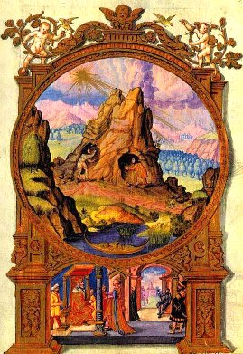
FIGURE XXIII
(Splendor solis, planche 5 : V.I.T.R.I.O.L.E.U.M.)Nous noterons encore que les cavernes peuvent apparaître dans la masse du Mercure, en larges géodes. Les cristaux apparaissent en effet dans des « cavernes » [demeure souterraine, c'est-à-dire argilla] au sein de la masse mercurielle. Dans la Toison d'or, c'est plus précisément qu'E. Canseliet entretient l'équivoque :
"De même devons-nous nous souvenir de ce que nous rapporte Fulcanelli de cette tête de diable qui se voyait à Notre-Dame de Paris, que le peuple de Paris appelait Maistre Pierre du Coignet...offrant...le saisissant hiéroglyphe du chaos primordial...et là reposent en outre la cause secrète...de la nativité nocturne, à l'abri d'une caverne profonde, du tout petit enfant de Bethléem de Juda." [voir section des Principes]
et donne le sentiment d'une genèse, là encore, qui se produit dans la masse même du Mercure, aidée en celà de la Terre blanche, mêlée au Soufre rouge. Les anciens avaient bien remarqué que certaines pierres continuent à se former journellement. Telles sont notamment les stalactites des cavernes qui avaient fort attiré leur attention. La pierre calcaire avec laquelle Rome [Fulcanelli parle de cette pierre dans le Mystère des Cathédrales] est construite, le travertin [dont parle E. Canseliet en évoquant la porte alchimique de la villa Palombara], continue à se déposer avec lenteur, à mesure que l'eau de la rivière perd l'acide carbonique qu'elle tenait en dissolution. L'auteur du Digeste pouvait avoir en vue ce dernier phénomène, lorsque [livre III , titre V, loi 18], parmi les dispositions relatives à la propriété, il prévoyait le cas de carrières telles que la pierre s'y régénère.
Il existe une quantité d'astéroïdes énorme entre Mars et Jupiter. On suppose qu'il s'agit de matériaux qui n'ont pu se condenser en un seul astre lors de la formation du système solaire ou de restes d'une planète préexistante dont ils représenteraient des fragments dispersés. On a pensé, à un moment qu'il s'agissait de noyaux d'anciennes comètes et cette hypothèse aurait été confortée par le fait que ces astres réfléchissent la lumière de manière analogue aux comètes. Quelle que soit leur origine, elle présente un intérêt alchimique certain et nous allons donc nous pencher tout spécialement sur les plus grands d'entre eux : Cérès, Pallas, Junon et Vesta, en n'oubliant pas la petite planète Hermès.
a)- Cérès représente la sève sortie de la terre, c’est-à-dire la première matière (= crescere = croître, grandir). Isis, Cérès et Cybèle constituent le triptyque de début de l’œuvre et comme le signale Fulcanelli (Les Mystères, p.81) : «...trois têtes sous le même voile. » ;
b)- Pallas est le surnom d'Athéna. Athéna est la déesse qui veille, avec une bienveillance particulière, sur l'agriculture. Or, en alchimie, véritable « agriculture céleste », la pousse des épis est assimilée à la naissance des cristaux. Il y a plus, Athéna est la déesse qui garantit l'équité des lois et leur juste application : elle tient donc de Thémis [la Justice] mais aussi de la Prudence [n'oublions pas qu'elle est fille de Métis, qui personnifie cette vertu] et de la Tempérance ; par l'influence heureuse de sa raison et de sa pensée réfléchie et subtile, elle apporte aux arts l'énergie et l'inspiration nécessaires à un rayonnement spirituel étendu et constant. Athéna possède donc toutes les caractéristiques d'un Compost canoniquement préparé. Son casque [cassus è cassito = dégoutter] atteste de son caractère chaulé et ouvert ;
c)- Junon personnifie la matière métallique pour le pseudo-Flamel :
"Ce sont ces deux Serpens envoyez par Junon, qui est la Nature métallique, que le fort Hercule, c'est-à-dire le Sage, doit étrangler en son berceau : je veux dire, vaincre, et tuer, pour faire pourrir, corrompre, et engendrer, au commencement de son Œuvre" [Fig. Hiér.]
Mais Junon est aussi identifiée au ciel inférieur des Philosophes. Le ciel firmamental est placé sous la domination de Zeus. Junon s'interpose en quelque sorte comme médiatrice entre le pouvoir du Ciel supérieur, fixe et l'Eau. C'est ce que semble exprimer Jean d'Espagnet :
"Au-dessous de lui, ils ont placé Junon, épouse de Jupiter, comme maîtresse de la région inférieure du ciel, c'est-à-dire de notre air : parce que cette région est toute troublée par des vapeurs, humide, froide, et en quelque manière impure et très proche du tempérament féminin. Mais aussi parce qu'elle est soumise aux décrets des corps supérieurs, qu'elle est susceptible de leurs impressions, et nous les communique, s'insinuant dans les choses dont la nature est épaisse pour les fléchir et les assouplir aux ordres imprimés par les choses célestes, et enfin parce que le mâle et la femelle diffèrent seulement de sexe, et non pas d'espèce, ils n'ont pas voulu que l'air ou le ciel inférieur fût un élément différent du ciel supérieur en essence et en espèce, mais seulement différent quant au lieu et aux accidents." [Philosophie Naturelle Restituée, chap. LVII]
Mais Junon, c'est aussi l'épouse jalouse de Zeus qui poursuit Latone de sa haine :
"Au bout du temps requis on voit monter à la superficie, flotter et se déplacer sans cesse sous l'effet de l'ébullition, une très mince pellicule, en ménisque, que les sages ont nommée l'Ile philosophique [Le Cosmopolite et l'auteur du Songe Verd, peut-être Bernard de Trévise], manifestation première de l'épaississement et de la coagulation. C'est l'île fameuse de Délos, en grec DhloV, c'est-à-dire apparent, clair, certain, laquelle assure un refuge inespéré à Latone fuyant la persécution de Junon..."
et qui n'est pas sans rapport avec le vase de nature :
"Un prêtre annonce que Junon a conçu. -Toutes les statues des dieux dansent et chantent à cette nouvelle.- Une étoile descend et annonce la naissance d'un Enfant Principe et Fin.- Toutes les statues tombent le visage contre terre.- Les Mages annoncent que cet enfant est né à Bethléem et conseillent au roi d'envoyer des ambassadeurs.- Alors paraît Bacchus qui prédit que cet Enfant chassera tous les faux dieux..."[les Mystères, p.69, que Fulcanelli attribue à Julius Africanus, dans Patr. grecque, tome X, p. 97 et 107].
C'est du dissolvant universel dont il est fait état. Junon préside au mariage et on l'assimile à Héra, fille de Cronos (Saturne) et Rhéa (Cybèle). Elle protégea le navire Argo, en route vers la Toison d'or. On la représente souvent avec les attributs royaux traditionnels tels que le sceptre et le diadème ; en outre, sa tête est recouverte de voile et elle tient dans l'une de ses mains la pomme de grenades, emblème de la fécondité. Le paon est l'animal qui lui est consacré. Cet animal se distingue par sa queue dont les couleurs peuvent rappeler celles de l'arc-en-ciel par des phénomènes d'irisation. Dans le 3ème oeuvre, cette irisation semble signaler la fin de la phase de putréfaction et même une phase avancée de la Grande coction. C'est ce que suggère l'auteur anonyme d'Huginus à Barma :
"Quelquefois le vase vous paraîtra comme doré, c'est là un indice de la mixtion du sperme du Soufre avec le menstrue du Mercure & de l'altération mutuelle que chacune de ces deux substances reçoit de l'autre. Au reste, lorsque le jardin philosophique est en fleurs, on y voit briller différentes couleurs qu'on a comparées à celles de la queue du paon dont elles imitent la variété & la magnificence." [Le Règne de Saturne transformé en siècle d'or, chap XLIV]
Et ce jardin en fleurs est à l'image du Jardin des Hespérides ou de l'île enchantée du Cosmopolite. Dans le chapitre sur l'Athanor, l'auteur anonyme revient sur les couleurs de la queue de paon :
"Vous mettrez donc le vase dans le globe percé, que vous remplirez de cendres. Votre feu doit être doux, & tel que la main puisse le supporter sans aucune peine ; & en 50 jours, vous verrez paraître les couleurs connues sous le nom de la queue de paon, dont il ne restera enfin que la seule couleur verte [...]" [Le Règne de Saturne transformé en siècle d'or, Usage de l'Athanor pour cet œuvre]
Cette queue de paon peut aussi désigner une matière qui se présente en cristaux prismatiques volumineux, ou en fines aiguilles, en lames, en rosaces, en lentilles, bref avec des épithètes qui attestent de son importance hermétique ; elle présente la forme des anciens fers de lance ou d'un fer de flèche - la relation avec la flèche de Longin n'a pas échappé aux cabalistes : St Longin, martyr, soldat romain, a été identifié avec le soldat qui perça d'une lance le flanc de Jésus crucifié ; de la blessure s'échappa de l'eau et non du sang...Quoi qu'il en soit, ces lames peuvent être subdivisées en minces feuillets. elles deviennent alors transparentes et décomposent la lumière en produisant de fort jolis effets de couleur. Les carriers donnent à cette variété le singuliers noms de pierre à Jésus, de miroir d'axe. Voila qui mérite une explication : chez les Romains, ces lames portaient le nom de pierres spéculaires, du latin speculum, miroir. C'est au temps de Sénèque qu'on doit rapporter l'origine et l'usage des pierres spéculaires. Les Romains s'en servaient pour garnir leurs fenêtres, pour les ruches, afin de pouvoir considérer l'ingénieux travail des abeilles. Ils les employaient aussi en guise de tuiles, disposées de manière à imiter la queue d'un paon è cf. la planche III du Mutus Liber : c'est ce qu'ils appelaient toits de paonè on voit immédiatement l'intérêt hermétique que ces remarques suggèrent et singulièrement pour les couleurs que nous signalent les Adeptes et dont on aurait peine, autrement qu'au plan symbolique, à leur trouver une correspondance physique. Le nom de pierre spéculaire était aussi donné au mica et au talc qui pouvaient, comme le gypse, se diviser en feuillets écailleux et transparents. Ce sel qui sert à la préparation de l'albâtre des Sages présente des caractères qui en font un candidate de choix pour le Mercure philosophique : il est indécomposable par le feu le plus violent, presque infusible ; ce qui signifie que mêlé à un autre sel de nature semblable, il deviendra fusible. Les correspondances hermétiques en grec sont : la chaux vive -guyoV- et en proche assonance guy -vautour, oiseau de proie et enfin guroV -cercle, rond.
d)- Vesta - nous avons déjà mentionné cet astre en examinant le symbolisme de Saturne. Vesta est avant tout la divinité du foyer, c'est-à-dire du Feu qui est son symbole vivant. Toute cité avait autrefois son foyer et son feu sacré entretenu par des prêtresses, les Vestales, qu'on enterrait vives si elles avaient failli à leur voeu de chasteté. Si le feu s'éteignait, on ne pouvait le rallumer qu'au moyen des rayons du soleil concentrés par un miroir. Mais de toute façon, même si le feu ne s'éteignait pas, il était renouvelé tous les ans, le premier jour de mars. Voila qui nous rappelle une gravure célèbre de l'iconographie alchimique.

FIGURE XXIV
(un miroir ardent pour réchauffer l'athanor des Sages, in : L. Girardin, Alchimie, 1972)Vesta [Estia] reste dans l'Olympe la « vierge vénérée » ; elle est à l'image du foyer du centre de la terre, c'est-à-dire le foyer de l'autel [athanor] situé dans le sanctuaire des enfants de Latone. Les Vestales avaient la tête ceinte de bandelettes de laine blanche et par dessus une robe blanche, elles portaient un manteau qui était de pourpre.
e)- Hermès - cette petite planète a ceci d'intriguant que sa trajectoire s'approche beaucoup de celle de la Terre dont on mesure l'intérêt hermétique évident. Cet astéroïde fut découvert en 1937 par Reinmuth et d'après les calculs de Cunningham, l'orbite de cet astéroïde est la plus petite parmi toutes celles de ses semblables, et croise presque exactement l'orbite terrestre et pourrait même se trouver à un moment donné, plus proche de nous que la Lune. Nous vonyons donc que, même dans le monde de l'astronomie, qui a priori n'a rien de commun avec l'alchimie, si ce n'est l'utilisation des noms des divinités grecques et romaines, nous arrivons à trouver des similitudes troublantes au plan symbolique. Que le Mercure [Hermès] croise la Terre, voila qui ne peut laisser indifférent le cabaliste.